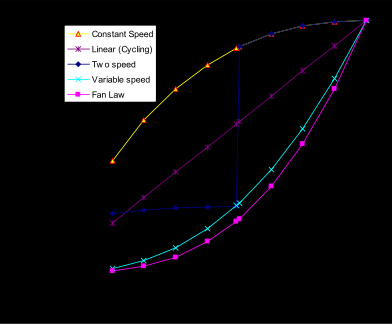

Simulation Models – Encyclopedic Reference
The following descriptions are grouped alphabetically (as much as possible) with some also having additional tags of “Heat Balance”, “HVAC”, and “Plant”. With the integrated solution, these designations signify where the effects of these models have their first impacts.
Main Sections:
- Radiant System Models
- Refrigeration Equipment
- Setpoint Managers
- Solar Collectors
- System Availability Managers
Radiant System Models
Low Temperature Radiant System Model
The input objects ZoneHVAC:LowTemperatureRadiant:ConstantFlow, ZoneHVAC:LowTemperatureRadiant:VariableFlow, and ZoneHVAC:LowTemperatureRadiant:Electric provide models for low temperature radiant heating and cooling systems that appear, on the surface, to be relatively simple systems. The system circulates hot or cold fluid through tubes embedded in a wall, ceiling, or floor or runs current through electric resistance wires embedded in a surface or a panel. Energy is thus either added to or removed from the space, and zone occupants are conditioned by both radiation exchange with the system and convection from the surrounding air that is also affected by the system. Unless specifically required for indoor air quality considerations, fans, ductwork, dampers, etc. are not needed.
Despite the relative simplicity of the low temperature radiant systems, the integration of such a system within an energy analysis program requires one to overcome several challenges. First, for systems with significant thermal mass, the conduction transfer function method for modeling transient conduction must be extended to include embedded heat sources or sinks. Second, one must integrate this formulation within an energy analysis program like EnergyPlus. Finally, one must overcome the fact that the radiant system is both a zone heat balance element and a conditioning system. Each of these issues will be addressed in the next several subsections.
One Dimensional Heat Transfer Through Multilayered Slabs
One of the most important forms of heat transfer in energy analysis is heat conduction through building elements such as walls, floors, and roofs. While some thermally lightweight structures can be approximated by steady state heat conduction, a method that applies to all structures must account for the presence of thermal mass within the building elements. Transient one dimensional heat conduction through a homogeneous layer with constant thermal properties such as the one shown in Figure 266 is governed by the following equation:
where: T is the temperature as a function of position and time,
x is the position,
t is the time,
$\alpha = \frac{k}{{\rho {c_p}}}$ is the thermal diffusivity of the layer material,
k is its thermal conductivity,
r is its density, and
cp is its specific heat.
This equation is typically coupled with Fourier’s law of conduction that relates the heat flux at any position and time to temperature as follows:

Figure 266. Single Layered Building Element
While analytical solutions exist for the single homogeneous layer shown in Figure 266, the solution becomes extremely tedious for the multiple layered slab shown in Figure 267.

Figure 267. Multilayered Building Element
Time Series Solutions: Conduction Transfer Functions
Equations and can be solved numerically in a variety of ways. As mentioned in the previous section, other models have used control theory and numerical methods such as finite difference and finite element. However, each of these methods have drawbacks which render them inappropriate for use within an energy analysis program which requires both accuracy and efficiency from the simulation.
Another possible modeling method is a time series solution. Several of the detailed energy analysis programs such as EnergyPlus use a time series solution to transient heat conduction. The most basic time series solution is the response factor equation which relates the flux at one surface of an element to an infinite series of temperature histories at both sides as shown by:
where q” is heat flux, T is temperature, i signifies the inside of the building element, o signifies the outside of the building element, and t represents the current time step.
While in most cases the terms in the series decay fairly rapidly, the infinite number of terms needed for an exact response factor solution makes it less than desirable. Fortunately, the similarity of higher order terms can be used to replace them with flux history terms. The new solution contains elements that are called conduction transfer functions (CTFs). The basic form of a conduction transfer function solution is shown by the following equation:
where k is the order of the conduction transfer functions, M is a finite number defined by the order of the conduction transfer functions, and X, Y, and F are the conduction transfer functions. This equation states that the heat flux at the interior surface of any generic building element for which the assumption of one dimensional conduction heat transfer is valid is linearly related to the current and some of the previous temperatures at both the interior and exterior surface as well as some of the previous flux values at the interior surface. A similar equation holds for the heat flux at the exterior surface.
The final CTF solution form reveals why it is so elegant and powerful. With a single, relatively simple equation, the conduction heat transfer through an element can be calculated. The coefficients (CTFs) in the equation are constants that only need to be determined once. The only storage of data required is the CTFs themselves and a limited number of temperature and flux terms. The formulation is valid for any surface type and does not require the calculation or storage of element interior temperatures.
As the next several sections will detail, there are two main methods for calculating conduction transfer functions: the Laplace Transform method and the State Space method. Both methods are well suited for the main focus of this research, the extension of conduction transfer functions to include heat sources or sinks.
Laplace Transform Formulation
The traditional method for calculating conduction transfer functions is described in detail by Hittle (1981). Beginning with the transient one dimensional heat conduction equation {Equation } and Fourier's law of conduction {Equation }, the Laplace transform method is used to convert the governing equations into the s-domain for a single layer such as the one shown in Figure 266.
The transformed equations are solved and then put in matrix form as shown below:
where: T1(s), T2(s), q1(s), and q2(s) are the temperature and flux terms in the Laplace domain,
${A_1}\left( s \right) = \cosh \left( {{\ell_1}\sqrt {{s \mathord{\left/ {\vphantom {s {{\alpha_1}}}} \right. } {{\alpha_1}}}} } \right)$,
${B_1}\left( s \right) = \left( {{1 \mathord{\left/ {\vphantom {1 {{k_1}\sqrt {{s \mathord{\left/ {\vphantom {s {{\alpha_1}}}} \right. } {{\alpha_1}}}} }}} \right. } {{k_1}\sqrt {{s \mathord{\left/ {\vphantom {s {{\alpha_1}}}} \right. } {{\alpha_1}}}} }}} \right)\sinh \left( {{\ell_1}\sqrt {{s \mathord{\left/ {\vphantom {s {{\alpha_1}}}} \right. } {{\alpha_1}}}} } \right)$,
${C_1}\left( s \right) = {k_1}\sqrt {{s \mathord{\left/ {\vphantom {s {{\alpha_1}}}} \right. } {{\alpha_1}}}} \sinh \left( {{\ell_1}\sqrt {{s \mathord{\left/ {\vphantom {s {{\alpha_1}}}} \right. } {{\alpha_1}}}} } \right)$,
${D_1}\left( s \right) = \cosh \left( {{\ell_1}\sqrt {{s \mathord{\left/ {\vphantom {s {{\alpha_1}}}} \right. } {{\alpha_1}}}} } \right)$,
k1 is the thermal conductivity of the layer,
a1 is the thermal diffusivity of the layer, and
${\ell_1}$ is the thickness of the layer.
The 2 x 2 matrix consisting of A1(s), B1(s), C1(s), and D1(s) is called the transmission matrix and contains all of the thermophysical properties of the layer necessary to calculate transient conduction heat transfer through it. It can easily be shown that a second layer could be characterized in a similar way as:
where A2(s), B2(s), C2(s), and D2(s) are calculated using the properties of the second layer. This can be substituted into Equation to provide insight how the extension to multilayered slabs is achieved.
Thus, for a multilayered element as shown in Figure 267, each separate layer has a transmission matrix of Ai(s), Bi(s), Ci(s), and Di(s) associated with it. The form of the matrix equation for the multilayered element is the same as the equation for a single layer:
but the transmission matrix is replaced by:
Equation is typically rearranged as follows:
which relates the flux at either surface of the element to the temperature histories at both surfaces. When the temperature histories are formulated as triangular pulses made up of simple ramp functions, the roots of this equation can be found and result in response factors. The response factors can be simplified as described above through the introduction of flux history terms to form conduction transfer functions. A simplified method of finding the roots of the Laplace domain equations is described by Hittle and Bishop (1983) and is used by the current version of BLAST.
State Space Formulation
Recently, another method of finding conduction transfer functions starting from a state space representation has begun receiving increased attention (Ceylan and Myers 1980; Seem 1987; Ouyang and Haghighat 1991). The basic state space system is defined by the following linear matrix equations:
where x is a vector of state variables, u is a vector of inputs, y is the output vector, t is time, and A, B, C, and D are coefficient matrices. Through the use of matrix algebra, the vector of state variables (x) can be eliminated from the system of equations, and the output vector (y) can be related directly to the input vector (u) and time histories of the input and output vectors.
This formulation can be used to solve the transient heat conduction equation by enforcing a finite difference grid over the various layers in the building element being analyzed. In this case, the state variables are the nodal temperatures, the environmental temperatures (interior and exterior) are the inputs, and the resulting heat fluxes at both surfaces are the outputs. Thus, the state space representation with finite difference variables would take the following form:
where T1, T2, ..., Tn-1, Tn are the finite difference nodal temperatures, n is the number of nodes, Ti and To are the interior and exterior environmental temperatures, and ${q''_i}$ and ${q''_o}$ are the heat fluxes (desired output).
Seem (1987) shows that for a simple one layer slab with two interior nodes as in Figure 268 and convection at both sides the resulting finite difference equations are given by:
where: $R = \frac{\ell }{{kA}}$ , thermal resistance
$C = \frac{{\rho {c_p}\ell A}}{2}$ , thermal capacitance
${T_o}$= outside temperature
${T_i}$= inside temperature
${T_1}$=temperature of node 1
${T_2}$=temperature of node 2
and
A is the area of the surface exposed to the environmental temperatures.
In matrix format:

Figure 268. Two Node State Space Example
The important aspect of the state space technique is that through the use of relatively simple matrix algebra the state space variables (nodal temperatures) can be eliminated to arrive at a matrix equation that gives the outputs (heat fluxes) as a function of the inputs (environmental temperatures) only. This eliminates the need to solve for roots in the Laplace domain. In addition, the resulting matrix form has more physical meaning than complex functions required by the Laplace transform method. The current version of EnergyPlus uses the state space method for computing CTFs.
The accuracy of the state space method of calculating CTFs has been addressed in the literature. Ceylan and Myers (1980) compared the response predicted by the state space method to various other solution techniques including an analytical solution. Their results showed that for an adequate number of nodes the state space method computed a heat flux at the surface of a simple one layer slab within 1% of the analytical solution. Ouyang and Haghighat (1991) made a direct comparison between the Laplace and state space methods. For a wall composed of insulation between two layers of concrete, they found almost no difference in the response factors calculated by each method.
Extension of Time Series Solutions to Include Heat Sources and Obtain Internal Temperatures
Laplace Transform Formulation
Degiovanni (1988) proposed two methodologies for including sources or sinks in the Laplace Transform Formulation. The first method shows how a source that varies as a function of time and location can be incorporated. The resulting equations involve some fairly complicated terms including spatial derivatives.
The second method that will be analyzed in more detail involves the addition of a source or sink at the interface between two layers. The derivation of the necessary equations is begun by analyzing the simple two layer element shown in Figure 269.

Figure 269. Two Layer Example for Deriving the Laplace Transform Extension to Include Sources and Sinks
For the first layer, it was determined that in the Laplace domain
For the second layer:
To link the two layers and include the heat source between them, the following substitution is made:
which results in:
While Degiovanni concludes with this formula, some insight into what the generic equation for an element that has n layers might look like is gained by working with Equation . If a layer is added to the left of the first layer, the entire right hand side of Equation is multiplied by the transmission matrix of the new layer. Conversely, if a layer is added to the right of the second layer in Figure 269, the vector containing the Laplace transform of the temperature and heat flux at interface 3 is replaced by the product of the transmission matrix of the new layer and the vector for temperature and heat flux at the next interface, and the term dealing with the heat source is not affected. The general equation for a building element with n layers and m layers between the left hand surface and the heat source can be derived as:
or in more compact form:
where: $\left[ {\begin{array}{{20}{c}}{A\left( s \right)}&{B\left( s \right)}\{C\left( s \right)}&{D\left( s \right)}\end{array}} \right] = \prod\limits_{i = 1}^n {\left[ {\begin{array}{{20}{c}}{{A_i}\left( s \right)}&{{B_i}\left( s \right)}\{{C_i}\left( s \right)}&{{D_i}\left( s \right)}\end{array}} \right]} $ and $\left[ {\begin{array}{{20}{c}}{a\left( s \right)}&{b\left( s \right)}\{c\left( s \right)}&{d\left( s \right)}\end{array}} \right] = \prod\limits_{i = 1}^m {\left[ {\begin{array}{{20}{c}}{{A_i}\left( s \right)}&{{B_i}\left( s \right)}\{{C_i}\left( s \right)}&{{D_i}\left( s \right)}\end{array}} \right]} $ .
Next, Equation must be rearranged to match the form of Equation , which relates the heat flux at both sides of the element to the temperature at each side. The matrix equation that is obtained shows that:
This equation bears a striking resemblance to Equation . If the source term in Equation is dropped, then the equation is identical to Equation . This result conforms with the superposition principle which was used to develop the conduction transfer functions from the summation of a series of triangular pulses or ramp sets. Now, the effect of the heat source is simply added to the response to the temperature inputs.
While Equation is correct for any single or multilayered element, the first term in the heat source transmission matrix does not appear to match the compactness of the other terms in the matrix equation. It can be shown (see Strand 1995: equations 32 through 42 which detail this derivation) that the heat source transmission term for a two-layer problem reduces to
If this is extended to a slab with n layers and a source between the m and m+1 layers, the general matrix equation for obtaining heat source transfer functions using the Laplace transform method is:
where: $\left[ {\begin{array}{{20}{c}}{A\left( s \right)}&{B\left( s \right)}\{C\left( s \right)}&{D\left( s \right)}\end{array}} \right] = \prod\limits_{i = 1}^n {\left[ {\begin{array}{{20}{c}}{{A_i}\left( s \right)}&{{B_i}\left( s \right)}\{{C_i}\left( s \right)}&{{D_i}\left( s \right)}\end{array}} \right]} $ ,
$\left[ {\begin{array}{{20}{c}}{a\left( s \right)}&{b\left( s \right)}\{c\left( s \right)}&{d\left( s \right)}\end{array}} \right] = \prod\limits_{i = 1}^m {\left[ {\begin{array}{{20}{c}}{{A_i}\left( s \right)}&{{B_i}\left( s \right)}\{{C_i}\left( s \right)}&{{D_i}\left( s \right)}\end{array}} \right]} $ , and
$\left[ {\begin{array}{{20}{c}}{\bar a\left( s \right)}&{\bar b\left( s \right)}\{\bar c\left( s \right)}&{\bar d\left( s \right)}\end{array}} \right] = \prod\limits_{i = m + 1}^n {\left[ {\begin{array}{{20}{c}}{{A_i}\left( s \right)}&{{B_i}\left( s \right)}\{{C_i}\left( s \right)}&{{D_i}\left( s \right)}\end{array}} \right]} $ .
At first glance, the terms in the heat source transmission matrix may appear to be reversed. It is expected that only the layers to the left of the source will affect q1(s), but the presence of $\bar b\left( s \right)$ in the element multiplied by qsource(s) to obtain q1(s) seems to be contradictory. In fact, the entire term, ${{\bar b\left( s \right)} \mathord{\left/ {\vphantom {{\bar b\left( s \right)} {B\left( s \right)}}} \right. } {B\left( s \right)}}$, must be analyzed to determine the effect of qsource(s) on q1(s). In essence, the appearance of $\bar b\left( s \right)$ removes the effects of the layers to the right of the source from B(s) leaving only the influence of the layers to the left of the source. The form displayed by Equation is, however, extremely convenient because the terms in the heat source transmission matrix have the same denominators, and thus roots, as the terms in the temperature transmission matrix. Thus, the same roots that are calculated for the CTFs can be used for the QTFs, saving a considerable amount of computer time during the calculation of the transfer functions.
Once Equation is inverted from the Laplace domain back into the time domain, the combined CTF–QTF solution takes the following form:
This relation is identical to Equation except for the presence of the QTF series that takes the heat source or sink into account.
State Space Formulation
The two-node example introduced by Seem (1987) can be utilized to examine the extension of the state space method to include heat sources or sinks. Figure 270 shows the simple two node network with a heat source added at node 1.
The nodal equations for the finite difference network shown in Figure 270 are:
Figure 270. Two Node State Space Example with a Heat Source
In obtaining the matrix equivalent for this set of equations, it should be noted that the source term is not a constant but rather an input that varies with time. Thus, it must be grouped with the environmental temperatures as inputs. The resulting matrix equations take the following form:
Equation appears to suggest that the source term has no direct effect on the heat flux at either side of the element because its coefficients are zero. This is not the case. Equation only relates variables that have a direct influence on heat flux. So, while Ti has no direct influence on${q''_o}$, it does have an indirect influence through the nodal network. The same would hold for the influence of qsource.
If this analysis is extended to a finite difference network with n nodes, the corresponding matrix equations can be shown to be:
The influence of the heat source is also confirmed by the final solution form, which is identical to the Laplace transform result shown in Equation . As with the Laplace solution method, the state space method results in a set of QTFs that relate the heat source at the current time step and several previous time steps to the current heat flux at the surface of the element.
Other similarities between the two solution methods are evident. It is interesting to note that as with the Laplace method there is no alteration of the CTFs calculated by the state space method. Thus, the principle of superposition is still valid. Furthermore, the introduction of the source term did not substantially increase the computing effort required to calculate the additional transfer functions. In the Laplace method, this was shown by the common roots, B(s), shared by both the CTFs and the QTFs. In the state space method, it can be noted that the A matrices in Equations and are identical. Since the state space method requires the inversion and the exponentiation of the A matrix only, the additional QTF terms will not require a substantial amount of additional computing time for their calculation.
Determination of Internal Temperatures
One aspect of low temperature radiant systems that has not been addressed to this point is the appropriateness of specifying the effect of the system on slab response via a heat source term. For a heating system that employs electrical resistance heating, the use of a heat source as the input variable is logical. The heat produced by such a system can easily be related to the current passing through the heating wire. However, for a hydronic heating or cooling system, the known quantity is not heat but rather the temperature of the water being sent to the building element.
The use of a temperature to simulate the presence of a heating or cooling system presents one major obstacle. When fluid is not being circulated, there is no readily available temperature value available for use as an input variable.
In a hydronic system, a link between the fluid temperature being sent to the slab and the heat delivered to the slab exist. The most effective way of relating these two variables is to consider the slab to be a heat exchanger. Using heat exchanger relationships, an equation could then be formulated to obtain the heat delivered to the slab based on the inlet fluid temperature.
Most heat exchangers are used to thermally link two fluids. In the case of a hydronic radiant system, there is only one fluid and a stationary solid. Presumably, if the inlet fluid temperature, the system geometry, and the solid temperature are known, then the outlet temperature and thus the heat transfer to the building element can be computed. This leads to an interesting question: what is the solid temperature?
By definition, for one dimensional conduction heat transfer, the solid temperature is the temperature of the building element at the depth where the hydronic loop is located. Typically, this temperature is not known because it is not needed. The goal of both methods of calculating CTFs was the elimination of internal temperatures that were not needed for the simulation. For a hydronic system, it is necessary to extract this information to solve for the heat source term. Two methods of accomplishing this are described below.
Returning to the two layer example shown in Figure 269, it can be shown that the final solution form in the time domain for the slab with a source at the interface between the two layers is:
A similar equation could be written for the response of the first layer in absence of any source term and is given by:
While the current temperature at the interface is not known, presumably the previous values of this parameter will be known. In addition, the temperatures and the flux histories at surface 1 are also know. The unknowns in Equation are the current heat flux at surface 1 and the temperature at surface 2. However, Equation does define the current value of the heat flux at surface 1 based on temperature, heat flux, and heat source histories. Thus, if this value is used in Equation , the only remaining unknown in this equation is the current temperature at surface 2, the surface where the heat source or sink is present. Rearranging Equation provides an equation from which the temperature at the source location may be calculated:
where the new coefficients are obtained from the standard conduction transfer functions for the first layer via the following equations:
This system for backing out an internal temperature through the use of a second, rearranged CTF equation is valid regardless of whether the Laplace transform or state space method is utilized to calculate the CTFs and QTFs. The state space method, however, offers a more direct method of obtaining an internal temperature through its definition as an additional output variable.
Consider again the state space example shown in Figure 270. Two output variables were defined for this example: ${q''_i}$ and ${q''_o}$. The temperature of the node where the source is present can also be defined as an output variable through the identity equation:
When this equation for T1 is added to Equation , the resulting output matrix equation for the heat flux at both surfaces and the internal temperature is:
The only difference between this relation and Equation is the presence of T1 on both the right and left hand side of the equation. The dual role of T1 as a state variable and an output parameter may seem to contradict the goal of the state space method of eliminating the state variables. However, due to the flexibility of the formulation, nodal temperatures can be extracted in the same manner that any other output quantity would be obtained. For an element with n layers, Equation becomes:
where Ts is the temperature of the node where the heat source or sink is present. The transfer function equation for the calculation of Ts that results from Equation is identical in form to Equation :
Instead of the flux at either side of the element characterized as a function of temperature, flux, and source history terms, the temperature at the source location is related to source and temperature histories including histories of Ts. The validity of these internal temperature calculation methods as well as heat source transfer functions in general will be discussed in the next chapter.
Low Temperature Radiant System Controls
The use of this equation allows the low temperature radiant system to be handled like any other surface within the heat balance framework. Heat balances at the inside and outside surfaces take on the same form as other surfaces, and the participation of the radiant system in the radiation balance within the space and thermal comfort models is automatically included. Thus, the radiant system model is fully integrated into the heat balance, and any improvements that are made in areas such as convection coefficients, shading models, etc. are immediately available to the radiant system as part of the overall heat balance solution.
Once the transient nature of the system is accounted for, one must then turn to the next difficult issue: controls. Controls are problematic for almost any simulation program. The problem is not whether something can be simulated because typically a simulation program offers the ability to experiment with many different control strategies. Rather, the problem is typically the diversity of controls that are implemented and keeping the controls that can be simulated up to date. EnergyPlus offers two different control schemes: variable flow (ZoneHVAC:LowTemperatureRadiant:VariableFlow) and variable temperature (ZoneHVAC:LowTemperatureRadiant:ConstantFlow). The control strategies are different enough that they were developed as separate system types. More details of the controls are described below.
The controls for variable flow low temperature radiant systems within EnergyPlus are fairly simple though there is some flexibility through the use of schedules. The program user is allowed to define a setpoint temperature as well as a throttling range through which the system varies the flow rate of water (or current) to the system from zero to the user defined maximum flow rate. The flow rate is varied linearly with the flow reaching 50% of the maximum when the controlling temperature reaches the setpoint temperature. Setpoint temperatures can be varied on an hourly basis throughout the year if desired. The controlling temperature can be the mean air temperature, the mean radiant temperature, or the operative temperature of the zone, and this choice is also left to the user’s discretion. (Operative temperature for radiant system controls is the average of MAT and MRT.) Since flow rate is varied, there is no explicit control on the inlet water temperature or mixing to achieve some inlet water temperature in a hydronic system. However, the user does have the ability to specify on an hourly basis through a schedule the temperature of the water that would be supplied to the radiant system.
Graphical descriptions of the controls for the low temperature radiant system model in EnergyPlus are shown in Figure 271 for a hydronic system. In a system that uses electric resistance heating, the power or heat addition to the system varies in a manner similar to mass flow rate variation shown in Figure 271.
In the constant flow-variable temperature systems, the controls are also considered piecewise linear functions, but in this case the user selects both the control temperatures and the water temperatures via schedules. This offers greater flexibility for defining how the radiant system operates though it may not model every situation. Figure 272 shows how the “desired” inlet water temperature is controlled based on user schedules. The user has the ability to specify the high and low water and control temperature schedules for heating and cooling (separately; a total of eight temperature schedules). Note that this inlet temperature is a “desired” inlet temperature in that there is no guarantee that the system will provide water to the system at that temperature. The model includes a local loop that attempts to meet this demand temperature through mixing and recirculation.

Figure 271. Variable Flow Low Temperature Radiant System Controls

Figure 272. Variable Temperature Low Temperature Radiant System Controls
The constant flow (variable temperature) low temperature radiant system model is actually a combination of mixing valves, a pump (constant speed, but the maximum flow can be modified by a schedule), and the radiant system (surface, panel, or group of surfaces/panels). This is connected to the main loop through the standard inlet connections as shown in Figure 273. The system controls determine the desired inlet temperature and system flow rate while loop controls determine the flow rate and temperature of the loop. Note that pump heat also factors into the model through a simple constant speed pump model and user input.
There are four possible conditions (separate for heating and cooling). First, if the loop has adequate temperature and flow to meet system requests, then the model sets the radiant system inlet temperature and controls to the desired values based on the controls and simulates. This is the best condition and recirculation and bypass amounts are adjusted accordingly based on radiant system outlet temperatures. Second, if the loop temperature is adequate but the loop flow rate is less than the radiant system flow rate, we may or may not be able to meet the desired inlet temperature since recirculation might lower the temperature below the desired temperature. In this second case, the model first simulates the radiant system with the desired conditions and then resimulates it to solve for the actual inlet temperature (see later in this section) if it cannot achieve the desired inlet temperature. Third, if the loop flow is greater than the radiant flow but the temperature of the loop is not adequate, then there is no amount of mixing that will solve this problem. All of the radiant flow comes from the loop and the loop temperature (after pump heat addition) becomes the radiant system inlet regardless of the temperature controls. Finally, if both the temperature and the flow of the loop are inadequate, then the model simply solves for the actual radiant system inlet temperature and does not try to meet the controls (merely tries to get as close as physically possible given the loop conditions).

Figure 273. Variable Temperature Low Temperature Radiant System Component Details
One remaining challenge is the merging of the low temperature radiant system model with an integrated building simulation program. In the past, most simulation programs have simulated the building envelope, the space conditioning systems, and the central plant equipment in three separate steps. While this had some advantages and was partly due to a lack of computing capacity, the large drawback for this arrangement is that there is no feedback from the space conditioning system or central plant response to the building conditions. Thus, if the system or plant was undersized, it was reported as an “unmet load” and does not affect the temperatures experienced within the building. IBLAST, a predecessor (Taylor 1991) to EnergyPlus, resolved this issue by integrating all three major components of a building simulation and thus allowing feedback between the equipment and the building envelope.
This integration was not a trivial task and required that the systems be simulated at shorter time steps in some cases to maintain solution stability. In essence, the system simulation will shorten its time step whenever it senses that conditions are changing too rapidly. While this is effective in maintaining solution stability, it can present problems for a radiant system. The radiant system has either a direct or an indirect impact on the surfaces within a building. So, it must be simulated with the building envelope. Yet, it is also a space conditioning system that must act on the space like any other system and thus must also be simulated at the system time step, which can be less than the building time step and can also vary within EnergyPlus.
This issue was handled using a multi-step approach. In EnergyPlus, the heat balance is always simulated first. When this happens, the radiant system is temporarily shut-off to find how the building would respond if there was no heat source/sink. Then, as the system and plant are simulated at multiple shorter time steps, the radiant system is allowed to operate per the controls specified by the user. Flow rate is allowed to vary at each system time step, and the radiant system model is simulated at each time step as if the current flow rate was being used throughout the entire zone time step. This means that each time the heat source/sink in the radiant system is varied during the system simulation the zone heat balance must be recomputed to see what the reaction of the rest of the zone is to this change in the conditions of one (or more) of the surfaces.
In reality, this is not physically correct because each change in the flow rate throughout the system simulation will have an impact on the system time steps remaining before the heat balance is simulated during the next zone time step. Yet, other approaches to solving the mismatch between the system and the zone response of radiant systems are not feasible. One could force the system to run at the same time step as the zone, but this could result in instabilities in other types of systems that might be present in the simulation. On the other hand, one could try to force the zone to run at the shorter time steps of the system, but this could lead to instability within the heat balance due to limits on the precision of the conduction transfer function coefficients.
Despite the fact that the simulation algorithm described above may either over- or under-predict system response dependent on how the system has been controlled in previous system time steps, it is reasonable to expect that the effect of these variations will balance out over time even though it might lead to slightly inaccurate results at any particular system time step. The long-term approach is also in view in the final simulation step at each zone time step. After the system has simulated through enough system time steps to equal a zone time step, the radiant system will rerun the heat balance using the average heat source/sink over all of the system time steps during the past zone time step. This maintains the conservation of energy within the heat balance simulation over the zone time steps and defines more appropriate temperature and flux histories at each surface that are critical to the success of a conduction transfer function based solution. A graphical picture of this somewhat complex multiple step simulation is shown in the figure below.

Figure 274. Resolution of Radiant System Response at Varying Time Steps
Heat Exchanger Formulation for Hydronic Systems
As has been mentioned previously, the actual heat transferred between the building element and the hydronic loop is related to the temperature of the building element at the source location as well as the water system inlet and outlet temperatures. In EnergyPlus, it is assumed that the inlet temperature to the slab (defined by a user schedule and the plant simulation) and the mass flow rate (determined by the control algorithm) are known and that the remaining parameters must be calculated. However, the heat balance equations require the heat transferred to the building element from the water loop in order to calculate the heat transferred from the element to the building environment.
Even though systems defined by this model can vary somewhat, the same characteristic link between the system variables exist. For modeling purposes, the overall water/slab system can be thought of as a heat exchanger. While in principle there are two alternative heat exchanger methodologies, it is more convenient to use the effectiveness-NTU method in this case.
Several assumptions will be incorporated into the heat exchanger analysis. It is assumed that the building element that contains the hydronic loop is stationary and that its temperature along the length of the tubing is constant. The latter part of this assumption stems from assumptions made in both the one and two dimensional heat source transfer function derivations. In either case, the source was added at a single node that was characterized by a single temperature. For consistency, this assumption must be made again in the heat exchanger analysis. Another assumption for the current EnergyPlus model is that the fluid in the tubing is water. Additionally, it is assumed that the thermal properties of the water do not vary significantly over the length of the tubing and that the water flows at a constant flow rate. Finally, the temperature at the inside surface of the water tubing is assumed to be equal to the temperature at the source location. In other words, it is assumed that the water tubing itself has no appreciable effect on the heat transfer process being modeled.
Using these assumptions and the effectiveness-NTU heat exchanger algorithm, several equations can be defined which establish the relationship between the heat source and the water temperatures. First, a heat balance on the water loop results in:
where q is the energy transferred between the water loop and the building element, $\dot m$ is the mass flow rate of the water, cp is the specific heat of the water, Twi is the inlet water temperature, and Two is the outlet water temperature.
The maximum amount of heat transfer that is possible according to the Second Law of Thermodynamics is:
where qmax is the maximum amount of energy transfer that is possible and Ts is the temperature at the source location.
The effectiveness of the heat exchanger, e, is defined as the ratio of the actual energy transfer to the maximum possible, or:
For a heat exchanger where one fluid is stationary, the effectiveness can be related to NTU, the number of transfer units, by the following equation (Incropera and DeWitt 1985):
where NTU is defined by:
Since the water tubes were assumed to have no effect on the heat transfer process, the only term present in the overall heat transfer coefficient, UA, is a convection term. Thus, the equation for UA is:
where h is the convection coefficient, D is the interior tube diameter, and L is the total length of the tube.
The convection coefficient can be obtained from internal flow correlations that relate the Nusselt dimensionless number to other flow properties. For laminar flow in a tube of constant surface temperature, the Nusselt number is defined by:
where k is the thermal conductivity of the water.
For turbulent internal flow, the Colburn equation can be used to define the Nusselt number:
where Pr is the Prandtl number of water and ReD is the Reynolds number which is defined by:
The parameter m is the absolute viscosity of water. For internal pipe flow, the flow is assumed to be turbulent for ReD ≥ 2300.
Knowledge of the flow conditions allows Equations through to be calculated. This essentially eliminates e as an unknown in Equation . The controls and the plant define the water mass flow rate and the inlet water temperature, leaving two equations (Equations and ) and three unknowns. The third equation that can be used in conjunction with Equations and is Equation , which is the CTF/QTF equation for the temperature at the source location.
Knowing the inlet water temperature and water mass flow rate, the calculation procedure is somewhat involved and requires, in addition to Equations , , and , the use of a modified form of Equation . Equation is the standard conduction transfer function formula for a building element with an embedded source/sink of heat. In EnergyPlus, the surface flux on the left hand side of the equation is replaced with a surface heat balance:
The surface heat balance includes terms for incident solar energy, radiation heat transfer from internal heat sources such as lights and electrical equipment, radiation between surfaces using Hottel’s Gray Interchange concept, and convection to the surrounding air. The presence of the surface temperature in the heat balance does not pose any problems since Equation will be rearranged to solve for this temperature. Since the radiation heat balance is dependent on conditions at the other surfaces, an iteration loop is required to provide a more accurate estimate of the radiative exchange within the building. This is not the case with the mean air temperature. An assumption of the heat balance is that the mean temperature of the surrounding air is equal to the final air temperature of the previous time step. Using this estimate in the heat balance avoids a second iterative loop around the radiative iteration loop.
Thus, the terms of the heat balance on the left hand side of the equation have been set with the only unknown quantity being Ti, the inside surface temperature at the current time step. On the right hand side of Equation , most of the terms are already defined since they depend on known values from previous time steps (temperature, flux, and source histories). The only terms which are not defined are the inside surface temperature (Ti), outside surface temperature (To), and internal heat source/sink (qsource) of the current time step.
The outside surface temperature will depend on the type of environment to which it is exposed. For example, if the surface is a slab on grade floor, the outside surface temperature is defined as ground temperature and does not require an outside surface heat balance. If the element is an interior surface which has both surfaces exposed to the same air space, the outside surface temperature is redefined to be equal to the inside surface temperature. In cases where the outside surface temperature is not simply defined such as a surface exposed to the exterior environment, a heat balance similar to Equation is required to define the outside surface temperature. However, to again avoid iteration, the heat balance equation for the outside surface assumes that conditions at the inside surface were the same as the previous time step. In most cases, since the influence of the current inside surface temperature on the outside surface temperature is very small, this is a valid assumption. In cases were the inside surface temperature has a significant effect, an approximate inside surface heat balance which defines the inside surface temperature is used. This approximate inside balance uses mean air and radiant temperatures from the previous time step.
At this point in the simulation algorithm then, all of the terms in Equation have been defined except the value at the current time step of the inside surface temperature and the heat source/sink. Thus, Equation can be rewritten in a simpler form:
where the variable C1 includes surface heat balance and past history terms as well as the influence of the current outside temperature. The term C2 will depend on the heat source transfer function term and the coefficients of terms linked directly to Ti,t.
Equation , which was the CTF/QTF equation for the temperature at the source location, can be simplified in a similar manner. Grouping the temperature and source history terms which are known quantities together with the effect of the outside surface temperature which is defined as described above, the original equation
can be reduced to:
where C3 includes all of the history terms and the effect of the current outside temperature, C4 is the heat source transfer function for the current time step, and C5 is the conduction transfer function for the inside surface temperature at the current time step.
Substituting Equation into Equation and noting that qsource,t is the same quantity as q in Equations and results in:
When this equation is combined with Equation , the heat source, which results from a known water inlet temperature, can be shown to be:
With both q and Twi known, it is a trivial matter to calculate Two and Ts from Equations and , respectively. Even though the coefficients in Equation are fairly complex, the final equation relating the heat source directly to inlet water temperature is compact and does not require any iteration. As with flux control, once the heat source/sink is defined, the inside surface heat balance can be performed to determine the surface temperatures.
It should be noted that Equations through are a slight simplification of the actual implementation in EnergyPlus. The development shown above follows the heat balance conventions that assume previous values of the inside temperature to calculate the outside temperature. This, in reality, is not necessary and since the radiant system can be significantly influenced by the delay that such an assumption might cause, the initial implementation of radiant systems in EnergyPlus used a development (shown below) that does not lag either the inside or the outside surface temperature. In effect, we can establish three basic equations for the temperature at the inside and outside surface as well as at the location of the heat source/sink:
where: Tinside is the temperature at the inside surface
Toutside is the temperature at the outside surface
Tsource is the temperature within the radiant system at the location of the source/sink
Ca is all of the other terms in the inside heat balance (solar, LW exchange, conduction history terms, etc.)
Cb is the current cross CTF term
Cc is the QTF inside term for the current heat source/sink
Cd is all of the other terms in the outside heat balance (solar, LW exchange, conduction history terms, etc.)
Ce is the current cross CTF term (should be equal to Cb)
Cf is the QTF outside term for the current heat source/sink
Cg is the summation of all temperature and source history terms at the source/sink location
Ch is the QTF term at the source/sink location for the current heat source/sink
Ci is the CTF inside term for the current inside surface temperature
Cj is the CTF outside term for the current outside surface temperature
Equations and above can be solved to remove the other surface temperature. Substituting the new equations for Tinside and Toutside as a function of C and q" into the equation for Tsource and simplifying results in the following equation:
where: ${C_k} = {C_g} + \frac{{{C_i}\left( {{C_a} + {C_b}{C_d}} \right) + {C_j}\left( {{C_d} + {C_e}{C_a}} \right)}}{{1 - {C_e}{C_b}}}$
Combining this with heat exchanger analysis as shown above, we eventually arrive at the following equation to relate the flux to the slab to the water inlet temperature and mass flow rate:
which includes all of the inside and outside heat balance terms (“hidden” in the Ck and Cl coefficients). Once the flux to the slab is known, the remaining terms of interest (outlet water temperature, inside and outside surface temperatures, etc.) can be calculated using the relatively simpler equations shown above.
Note that the above development is valid for both the hydronic (variable flow) low temperature radiant system and for constant flow (variable temperature) low temperature radiant systems where the inlet temperature is known (based on controls). However, when due to loop conditions and the presence of recirculation, it is not possible to know the inlet temperature to the radiant system without simulating it, we must either iterate or perform more mathematics to arrive at the inlet temperature. The implementation in EnergyPlus chose to avoid iteration and solved for the inlet temperature as shown in the next paragraphs.
The previous equation combines with the following equation which is valid for an surface in the current radiant system:
where qj is the heat transfer to the jth surface in the radiant system, mj is the mass flow rate only to this surface, and Twater,out,j is the outlet temperature for the jth surface. Combining the previous two equations results in:
If for each surface in the radiant system, we let:
then the previous equations because the slightly less complex:
Rearranging to obtain the outlet temperature for the jth surface:
The overall outlet temperature from the radiant system is just a simple mixing of all of the surface outlet temperatures based on flow fraction and results in Twater,out.
An energy balance on the mixing valve-pump group results in the following equation that relates the radiant system inlet temperature (Twater,in) to the loop inlet water temperature (Tloop,in), the radiant system outlet temperature (Twater,out), and the pump heat addition:
Plugging in the definition of Twater,out based on the summation of Twater,out,j equations results in:
where:
Once the actual water inlet temperature is calculated with this equation, it is then possible to calculate individual outlet temperatures for each surface, the overall outlet temperature, and finally all of the necessary flow and loop quantities. This procedure avoids iteration but is somewhat complex to follow. However, this second mathematical process is only needed for select cases of the constant flow radiant system when the inlet temperature is not known explicitly. With the proper establishment of input data, it can be avoided.
NOTE: In some “low-energy” applications, it is possible that during cooling mode the elevated water temperatures may result in a heat source (or net heating) to the radiant system. To avoid heating the slab when cooling is desired, EnergyPlus performs a temperature limit check. If heating would result during cooling mode or cooling during heating mode, the model will cut-off the flow rate until the inlet water temperature will produce the proper effect.
High Temperature Radiant Heater Model
The input object ZoneHVAC:HighTemperatureRadiant provides a model for a high temperature radiant heater that is intended to encapsulate an entire class of heating devices that seek to heat the occupants within a zone by direct radiation. This encompasses a wide variety of heaters including both gas-fired and electric. In most cases, the heater appears much like a lamp or a tube that is suspended from the ceiling of a space, and the surface temperatures are high enough that the heaters must be a safe distance away from the occupied portion of the space for safety concerns.
In EnergyPlus, the high temperature radiant heater model allows the user a reasonable amount of flexibility. Rather than specifying an exact location for the radiant heater(s), the user is allowed to specify the percentage of heat leaving the heater as radiation and then on which surfaces this radiation is incident. In addition, the user is also allowed the ability to define what fraction of radiation leaving the heater is incident directly on a person within the zone for thermal comfort purposes. This amount of heat is then used in the thermal comfort models as shown in Equations for Fanger, for Pierce Two-Node and for KSU Two-node. These equations are similar in form to the equation promoted by Fanger (1970). The input parameters for the high temperature radiant heater model are shown in Figure 275.
HIGH TEMP RADIANT SYSTEM,! Program keyword for high temp. radiant heaters
Zone 1 Radiant Heater, ! Zone name
Radiant Operation, ! Availability schedule
SHOP ZONE, ! Zone name (name of zone system is serving)
10000, ! maximum power input (in Watts)
GAS, ! type of heater (either gas or electric)
0.85, ! combustion efficiency (ignored for elec. heaters)
0.75, ! fraction radiant
0.05, ! fraction latent
0.05, ! fraction lost
OPERATIVE, ! temperature control type (MAT, MRT also possible)
2.0 , ! heating throttling range (in C)
Heating Setpoints, ! schedule of heating setpoint temperatures
0.05, ! fraction of radiant energy to people
Zn001:Flr001, 0.75, ! surface/fraction of radiant energy incident on it
Zn001:Wall001, 0.05, ! surface/fraction of radiant energy incident on it
Zn001:Wall002, 0.05, ! surface/fraction of radiant energy incident on it
Zn001:Wall003, 0.05, ! surface/fraction of radiant energy incident on it
Zn001:Wall004, 0.05; ! surface/fraction of radiant energy incident on it
Figure 275. Input Description for High Temperature Radiant Heaters
The input for the high temperature radiant heater has two additive relationships that are assumed. First, the fractions of radiant, convective, latent, and lost heat must sum to unity. The user is required to enter the fractions radiant, latent, and lost with the remainder assumed to be convective energy. The fraction latent is added to the latent energy balance and will affect moisture levels within the zone. The fraction lost is assumed to have no impact on the energy balance of the zone and is assumed to be lost or vented to the exterior environment.
The second additive relationship is within the distribution of the radiant fraction. This energy is distributed to people and to the surfaces within the zone. The sum of all of these distribution fractions (the last six lines of input shown in Figure 275) must sum to unity. Note that each high temperature radiant heater is allowed to distribute energy to up to 20 surfaces and that radiant energy placed on a surface using these distribution fractions is assumed to be completely absorbed. Thus, the distribution fractions should also take into account any differences in long wavelength absorptivity among the surfaces.
Several things should be noted about the fraction of heat that is radiated directly to people. This parameter is somewhat sensitive and will have a direct impact on the thermal comfort models. This is exactly the intent of the high temperature radiant heaters; however, one must use caution when determining this fraction since overestimation of this number might lead to predictions of thermal comfort where in fact it does not exist. In addition, this fraction of radiant energy to people does not have a direct impact on any of the surface heat balances. The thermal comfort energy balance is completely separate from and has no bearing on the zone air or the surface heat balances. Thus, in order to not “lose” this amount of energy from the perspective of the zone air or the surface heat balances, the model assumes that any radiation from the high temperature radiant heater that is incident directly on people is accounted for in the thermal comfort model using Equation but is also assumed to be added to the zone air heat balance via convection from people to the surrounding air. This guarantees that the people within the space feel the direct radiative effect of the heaters and that this quantity of energy is not “lost” within the heat balance routines.
Many of the control and integration aspects of the high temperature radiant system model in EnergyPlus are very similar to the low temperature radiant system model. The controls are the same as shown in “Figure 271. Variable Flow Low Temperature Radiant System Controls” where the amount of heat generated by the radiant heater varies as a function of the difference between the controlling and the setpoint temperatures. As with the low temperature radiant system, the controlling temperature is allowed to be the mean air, the mean radiant, or the operative temperature, and the setpoint temperature is allowed to vary hourly based on a user defined schedule. (Operative temperature for radiant system controls is the average of MAT and MRT.) Also, since the high temperature radiant heater has a direct impact on the surfaces within a zone, the surface heat balances are recalculated to determine an approximate response to the radiation from the heater. A final “average” heat balance calculation is done after all of the system time steps have been simulated to maintain continuity within the surface heat balances. The algorithm shown in “Figure 274. Resolution of Radiant System Response at Varying Time Steps is also used for high temperature radiant heaters.
References
Ceylan, H.T. and G.E. Myers. 1980. Long-time solutions to heat conduction transients with time-dependent inputs. ASME Journal of Heat Transfer, Volume 102, Number 1, pp. 115-120.
Degiovanni, A. 1988. Conduction dans un “mur” multicouche avec sources: extension de la notion de quadripole. International Journal of Heat and Mass Transfer, Volume 31, Number 3, pp. 553-557.
Fanger, P.O. 1970. Thermal Comfort-Analysis and Applications in Environmental Engineering, Danish Technical Press, Copenhagen.
Hittle, D.C. 1981. Calculating building heating and cooling loads using the frequency response of multilayered slabs. Ph.D. Thesis, Department of Mechanical and Industrial Engineering, University of Illinois at Urbana-Champaign and Technical Manuscript E-169, United States Army Construction Engineering Research Laboratory, Champaign, IL.
Hittle, D.C. and R. Bishop. 1983. An improved root-finding procedure for use in calculating transient heat flow through multilayered slabs. International Journal of Heat and Mass Transfer, Volume 26, Number 11, pp. 1685-1693.
Hottel, H.C. and A.F. Sarofim. 1967. Radiative Transfer, McGraw-Hill, New York.
Incropera, F.P. and D.P. DeWitt. 1985. Introduction to Heat Transfer. New York: John Wiley & Sons.
Lee, J. and R.K. Strand. 2001. “An Analysis of the Effect of the Building Envelope on Thermal Comfort using the EnergyPlus Program”, submitted for publication in the proceedings of the 2001 ACSA (Association of Collegiate Schools of Architecture) Technology Conference, Austin, TX.
Liesen, R.J. and C.O. Pedersen. 1997. “An Evaluation of Inside Surface Heat Balance Models for Cooling Load Calculations”, ASHRAE Transactions, Volume 103, Part 2.
Maloney, D. 1987. “Development of a radiant heater model and the incorporation of thermal comfort considerations into the BLAST energy analysis program”, M.S. thesis, University of Illinois at Urbana-Champaign, Department of Mechanical and Industrial Engineering.
McClellan, T.M. and C.O. Pedersen. 1997. “Investigation of Outside Heat Balance Models for Use in a Heat Balance Cooling Load Calculation Procedure”, ASHRAE Transactions, Volume 103, Part 2.
Pedersen, C.O., D.E. Fisher, and R.J. Liesen. 1997. “Development of a Heat Balance Procedure for Cooling Loads”, ASHRAE Transactions, Volume 103, Part 2.
Pedersen, C.O., D.E. Fisher, J.D. Spitler, and R.J. Liesen. 1998. Cooling and Heating Load Calculation Principles, ASHRAE.
Seem, J.E. 1987. Modeling of heat transfer in buildings. Ph.D. Thesis, University of Wisconsin-Madison.
Strand, R.K., and C.O. Pedersen. 1994. “Analytical verification of heat source transfer functions”, First Joint Conference of International Simulation Societies, Zürich, Switzerland.
Strand, R.K. 1995. “Heat source transfer functions and their application to low temperature radiant heating systems”, Ph.D. dissertation, University of Illinois at Urbana-Champaign, Department of Mechanical and Industrial Engineering.
Strand, R.K. and C.O. Pedersen. 1997. “Implementation of a Radiant Heating and Cooling Model into an Integrated Building Energy Analysis Program”, ASHRAE Transactions, Volume 103, Part 1.
Strand, R.K. and C.O. Pedersen. 2001. “Modularization and Simulation Techniques for Heat Balance Based Energy and Load Calculation Programs: the Experience of the ASHRAE LOADS Toolkit and EnergyPlus”, International Building Performance Simulation Association, Conference Proceedings of Building Simulation 2001, Rio de Janeiro, Brazil.
Taylor, R.D., C.O. Pedersen, D. Fisher, R. Liesen, and L. Lawrie. 1991. “Impact of simultaneous simulation of building and mechanical systems in heat balance based energy analysis programs on system response and control”, International Building Performance Simulation Association, Conference Proceedings of Building Simulation 1991, Nice, France.
Refrigeration Equipment
Overview
EnergyPlus can model refrigerated case equipment consisting of a compressor rack, multiple refrigerated cases and walk-in coolers, secondary loop equipment, and optional heat reclaim air and water heating coils. The refrigerated case equipment models perform four major functions:
n calculate the electric consumption of refrigerated cases and walk-in coolers connected to a compressor rack
n determine the impact of refrigerated cases and walk-in coolers on zone cooling and dehumidification loads (i.e., case credits), including the effects of HVAC duct configuration
n calculate the electric consumption and COP of the compressor rack, and the electric and water (if applicable) consumption related to cooling the compressor rack’s condenser.
n determine the total amount of heat rejected by the compressor rack’s condenser and store this information for use by waste heat recovery models (e.g., using Desuperheater heating coil (object: Coil:Heating:Desuperheater) as an air reheat coil for high humidity control in a supermarket)
The case and walk-in models account for nearly all performance aspects of typical supermarket refrigeration equipment. Refrigerated case and walk-in performance are based on the combined effects of evaporator load, fan operation, lighting, defrost type, and anti-sweat heater operation. Optional air and water heating coils can be modeled to reclaim available waste heat (superheat) from the compressor rack.
The user has two options when describing the balance of the system. Energy used to cool the condenser is simulated in both approaches. The simplest option is to use a compressor rack object, combining the compressors and condenser into a single unit with the performance determined by the heat rejection environment and the total case load. An example schematic of a compressor rack system is shown in Figure 276 below.
A detailed refrigeration system object models compressor and condenser performance separately. The detailed refrigeration system also includes the ability to transfer refrigeration load from one system to another using subcoolers, cascade condensers, and secondary loops. An example schematic of the detailed refrigeration system is shown in Figure 277 below. Subcooler #2 is shown twice on Figure 277 because it represents a liquid suction heat exchanger. This type of subcooler uses the cool suction gas to subcool the warmer condensed liquid. Subcoolers #1 and #3 on Figure 277 represent mechanical subcoolers. These subcoolers are used to subcool the condensate on a lower-temperature system using the cold liquid refrigerant from a higher temperature system. On this example, only subcoolers #1 and #2 would be defined as a part of the refrigeration system. However, subcooler #3 would place a refrigerating load, similar to the load of a refrigerated case, on the system.

Figure 276. Typical Compressor Rack Equipment Schematic

Figure 277. Typical Detailed Refrigeration System Equipment Schematic
Four classes of secondary refrigeration loops can be modeled:
n a separate water loop is used to remove heat rejected by the condenser,
n a lower-temperature refrigeration system rejects heat to a higher-temperature refrigeration system via a cascade condenser,
n a fluid, such as a brine or glycol solution, is cooled in a secondary evaporator and is then circulated to chill the refrigerated cases and walk-ins, and
n a refrigerant, such as CO2, is partially evaporated in the refrigerated cases and walk-ins in a liquid-overfeed circuit, and then condensed in a secondary evaporator.
The first two classes of secondary loops are modeled using Refrigeration:System objects with Refrigeration:Condenser:WaterCooled and Refrigeration:Condenser:Cascade objects, respectively. Figure 277 shows how cascade condensers and secondary evaporators are treated as a refrigeration load on a primary detailed system. The second two classes are modeled with a Refrigeration:SecondarySystem object described later in this section.
The compressor rack, detailed and secondary refrigeration systems, refrigerated case, and other component models are described below. The optional air and water heating coils are described elsewhere in this document (Ref. objects Coil:Heating:Desuperheater and Coil:WaterHeating:Desuperheater).
Refrigeration Compressor Racks
The refrigerated case compressor rack object works in conjunction with the refrigerated case and walk-in cooler objects (Refrigeration:Case and Refrigeration:WalkIn) to simulate the performance of a simple supermarket-type refrigeration system. This object (Refrigeration:CompressorRack) models the electric consumption of the rack compressors and the cooling of the compressor rack’s condenser. Heat removed from the refrigerated cases and walk-ins and compressor/condenser fan heat can be rejected either outdoors or to a zone. Compressor rack condenser waste heat can also be reclaimed for use by an optional air heating coil (Ref. object Coil:Heating:Desuperheater) or by a user-defined plant water loop (Ref. object Coil:WaterHeating:Desuperheater).
The performance of the compressor rack is simulated using the sum of the evaporator loads for all refrigerated cases and walk-ins connected to the rack. Whether a single refrigerated case is connected to a rack (e.g., stand-alone refrigerated case, meat cooler, or produce cooler) or several cases are connected to a rack, the rack electric consumption is calculated based on the total evaporator load for the connected cases and walk-ins and the coefficient of performance (COP) for the compressor rack. At least one refrigerated case or walk-in must be connected to the compressor rack. The model assumes the compressor rack has sufficient capacity to meet the connected refrigeration load for any simulation time step. Additionally, the model neglects compressor cycling losses at part-load conditions.
For condenser heat rejection to the outdoors, condenser cooling can be modeled as dry air cooling, wet evaporative cooling, or water loop cooling. Using evaporative cooling rather than dry air cooling will allow for more efficient condenser heat rejection based on the entering air approaching the wet-bulb temperature rather than the dry-bulb temperature. Analyses under the International Energy Agency’s (IEA) Heat Pumping Programme Annex 26 indicates that this measure can improve refrigeration system efficiency by up to 10% (IEA 2003). The use of an evaporative-cooled condenser requires a water pump and, optionally, a basin sump water heater (to protect against freezing). Makeup water will also be required to replace that lost by evaporation. In colder climates, some evaporative-cooled condensers are drained for the winter months and run as dry air units. This scenario can be modeled by using an optional evaporative condenser availability schedule.
The simulation of the evaporative cooled condenser utilizes an effective air dry-bulb temperature that is assumed to be the result of evaporation of water in the air stream (similar to object EvaporativeCooler:Direct:CelDekPad). As discussed below, this effective temperature is used by performance curves that are a function of temperature. While some designs of evaporative coolers use water film cascading across the condenser coil for evaporative cooling, the current model uses the effective temperature method as a surrogate for the more complex water film on coil calculations.
If the condenser heat rejection is specified as water cooled, an appropriate plant water loop must be defined by the user (see documentation on Plant/Condenser Loops for additional details about plant loops). This will include defining cooling supply components, such as pumps, water storage tanks, and cooling towers, as well as related branches, nodes, and connectors. The heat rejection from the refrigeration condenser is modeled as a cooling demand, which is satisfied by heat extraction devices (e.g., water tank and cooling tower) on the cooling supply side of a water loop. An example of such an arrangement is shown in Figure 278.

Figure 278. Example Of Condenser Heat Recovery To Water Storage Tank
Compressor Energy Use
Calculation of compressor rack electric power uses a simple model based on the total evaporator load (sum of the evaporator loads for all refrigerated cases and walk-ins connected to a rack) and the compressor rack operating COP which accounts for the air temperature entering the condenser:
where:
$CO{P_{operating}}$ = compressor coefficient of performance at actual operating conditions (W/W)
$CO{P_{design}}$ = compressor coefficient of performance at design conditions (W/W)
$COPfTemp$ = output of the normalized “Compressor Rack COP as a Function of Temperature Curve” (dimensionless)
Because the COP curve is defined only as a function of the condensing temperature, it is important that this curve definition corresponds to the lowest evaporating temperature served by the compressor rack. The air temperature used to evaluate the “Compressor Rack COP as a Function of Temperature Curve” depends on where the compressor rack’s condenser is located (Heat Rejection Location). When modeling condenser heat rejected directly to a zone (typical of a stand-alone packaged refrigerated case with integral condenser located in a building zone), the zone air dry-bulb temperature is used to calculate the change in compressor COP from the design value. If more than one refrigerated case and no walk-ins are attached to a compressor rack that rejects its condenser heat to a zone, then all cases served by this rack must reside in the same zone. When modeling a compressor rack serving at least one walk-in, OR with condenser heat rejected to outdoors, the refrigerated cases and walk-ins connected to this rack may be located in different zones. If the condenser type is specified as “Air Cooled”, the outdoor air dry-bulb temperature is used to evaluate the “Compressor Rack COP as a Function of Temperature Curve.” If the condenser type is specified as “Evap Cooled”, the air temperature leaving the condenser is related to the effectiveness of the evaporative cooling system. If the evaporative process were 100% effective, the effective temperature of air leaving the evaporative media would equal the air wet-bulb temperature. However, the efficiency of the direct evaporative process is typically less than 100%, and the effective temperature leaving the condenser is determined by:
where:
${T_{effective}}$ = effective dry-bulb temperature of air leaving the condenser cooling coil (°C)
${T_{owb}}$ = outdoor air wet-bulb temperature (°C)
${T_{odb}}$ = outdoor air dry-bulb temperature (°C)
$\varepsilon $ = evaporative condenser effectiveness.
If the user is modeling an evaporative cooled condenser and is using COPfTemp curve data (e.g., manufacturer’s data) based on wet-bulb temperature rather than dry-bulb temperature, the evaporative condenser effectiveness should be set to 1.0 for consistency.
If the condenser is water cooled, the effective temperature experienced by the condenser is based on the return water temperature from the plant loop heat rejection system (e.g., cooling tower) that is defined by the user. This return water temperature is typically related to the outdoor ambient conditions at each time step.
The electric power input to the rack compressor(s) is calculated for each simulation time step as the sum of the connected refrigerated case evaporator loads divided by the operating COP:
where:
${P_{rack}}$ = output variable “Refrigeration Compressor Rack Electric Power [W]”, electric power input to the rack compressor(s)
${\dot Q_{case}}$ = evaporator load for each refrigerated case connected to the rack (W)
${\dot Q_{walkin}}$= refrigeration load for each walk-in connected to the rack (W)
Condenser Heat Rejection, Energy Use, and Water Use
The compressor rack can reject heat to an air-, water-, or evaporative-cooled condenser. The condenser type determines the heat rejection temperature used for the compressor rack COP calculation. The compressor rack also allows superheat heat reclaim and heat rejection to a conditioned zone.
Condenser Fan Energy Use
Condenser fan power for any simulation time step is calculated by multiplying the design fan power by the condenser fan power as a function of temperature curve.
where:
${P_{CondFan}}$ = output variable “Refrigeration Compressor Rack Condenser Fan Electric Energy [W]”
${P_{CondFan,design}}$ = design condenser fan power (W)
$CondFanfTemp$ = output of the optional “Condenser Fan Power as a Function of Temperature Curve”
Similar to the compressor rack energy use described above, the air temperature used to evaluate the “Condenser Fan Power as a Function of Temperature Curve” depends on where the condenser rack’s condenser is located (i.e., zone air dry-bulb temperature if the condenser is located in a zone, outdoor air dry-bulb temperature if the condenser is located outdoors and is specified as air cooled, or effective temperature if the condenser is outdoors and is specified as evaporative cooled). If the sum of the evaporator loads for the refrigerated cases connected to the rack is equal to zero, the condenser fan power is set equal to zero. If the user does not provide a “Condenser Fan Power as a Function of Temperature Curve”, then the model assumes the condenser fan power is at the design power level when any of the refrigerated cases connected to this rack are operating.
If the user is modeling an evaporative cooled condenser and is using CondFanfTemp curve data based on wet-bulb temperature rather than dry-bulb temperature, the evaporative condenser effectiveness should be set to 1.0 for consistency.
For a water cooled condenser, there is no fan load at the condenser (i.e., the water/refrigerant heat exchanger). Any fan load would be related to and accounted for at the heat rejection object (e.g., cooling tower).
Superheat Reclaim Heating Coil
EnergyPlus can simulate waste heat being reclaimed from a compressor rack for use by a refrigerant-to-air or refrigerant to water heating coil. Heat reclaimed from the compressor rack is assumed to be recovered from the superheated refrigerant gas leaving the compressor(s) and does not directly impact the performance of the compressor rack or refrigerated cases connected to the rack. The total heat rejected by the condenser (in Watts) is calculated each time step as follows:
The heat reclaim heating coil is able to transfer a fixed percentage of this total amount of rejected energy (not to exceed 30%) and use it to heat air and water. Refer to objects Coil:Heating:Desuperheater and Coil:WaterHeating:Desuperheater for a complete description of how these coils are modeled.
NOTE: When modeling a heat reclaim coil, the heat rejection location in the Refrigeration:CompressorRack object must be “Outdoors”. If the compressor rack heat rejection location is “Zone”, the total amount of waste heat available for reclaim (e.g., by a desuperheater heating coil) is set to zero by the compressor rack object and the simulation proceeds.
Heat Rejection to Zone
The compressor rack model can simulate condenser heat being rejected to a zone. As explained previously, if this heat rejection option is selected then all refrigerated cases connected to the rack must be located in the same zone and a superheat heat reclaim heating coil can not be modeled (Ref. Superheat Reclaim Heating Coil).
The refrigerated case and walk-in objects (Refrigeration:Case and Refrigeration:WalkIn) already calculate and report the sensible case credits which impact the zone air heat balance (Ref. Sensible Case Credits). When refrigerated cases and/or walk-ins are served by a compressor rack that rejects condenser waste heat directly to the zone (e.g., a stand-alone refrigerated case with integral compressor and condenser), this condenser waste heat also impacts the zone air heat balance and offsets some or all of the sensible case credits.
If only cases are served, the amount of condenser waste heat rejected to the zone and/or the HVAC return air (zone return air path outlet node) is calculated and reported by the refrigerated case compressor rack object as follows:
where:
${\dot Q_{Zone,heating}}$ = output variable “Refrigeration Compressor Rack Zone Sensible Heating Rate [W] “
RAF = return air factor for each case connected to the rack (Ref. Figure 279)
${\dot Q_{HVAC,heating}}$= output variable “Refrigeration Compressor Rack Return Air Sensible Heating Rate [W] “
If the HVAC system is off for a simulation time step (no return air mass flow), the rack condenser heat normally attributed to the HVAC return is set equal to zero and all condenser heat energy is applied to the zone air heat balance.
If, however, walk-in cooler(s) are also served by this compressor rack, no condenser heat is rejected to the HVAC return air. For walk-in cooler(s), the user must specify the zone that accepts the condenser heat rejection (because walk-ins can exchange heat with multiple zones). In that case:
Water Cooled Condenser
If the refrigeration condenser is water cooled, a water plant loop must be defined in the input file. At a minimum, the loop must contain a pump and one or more heat sinks of sufficient capacity to remove the condenser heat load. In the system shown in Figure 278, the heat sinks are the water heater tank and the cooling tower. The water pump in the loop can be either constant (Ref. Pump:ConstantSpeed) or variable speed (Ref. Pump:VariableSpeed). A variable speed pump permits the loop flow to vary and allows for a setpoint to be established on the condenser outlet water temperature. As the refrigeration condenser heat load varies through time, the speed of the pump can be adjusted to achieve a mass flow consistent with a desired outlet water temperature according to
where:
m = mass flow in the water loop
Qcondenser = heat rejected by the condenser
cp = specific heat of water
Tout = desired water outlet temperature
Tin = return water inlet temperature.
The desired water outlet temperature is specified using a schedule, subject to a maximum water outlet temperature (input specified). The maximum temperature is typically defined by constraints on the refrigerant loop pressures and temperatures. The desired mass flow in the water loop to meet the temperature schedule is also compared to the user-supplied maximum flow rate. If the desired mass flow is greater than the maximum allowed flow, the flow rate is set to the maximum value and the resulting water outlet temperature is determined.
The return water inlet temperature is a function of the cooling system defined by the user. A minimum return water temperature may need to be taken into consideration to prevent lowering the resulting refrigerant condensing pressure to the point that refrigerant expansion valve operation becomes impaired. When ambient conditions produce low temperature warnings based on the minimum return water temperature, an outlet temperature setpoint control may need to be placed on the water heat sink object (e.g., cooling tower) to keep the return water temperature above the minimum.
If the water loop flow is constant (i.e., driven by a constant speed pump), then the outlet water temperature will vary with the amount of heat rejected by the condenser. Using the equation above, the resulting water outlet temperature is calculated as
Evaporative Condenser Water Pump
If the condenser type is specified as “Evap Cooled”, a water pump is required to circulate water in the evaporative condenser. The pump power can be input directly or be autocalculated using a relationship of 0.004266 W per watt [15 W/ton] of rated total cooling capacity where the total cooling capacity is the sum of the rated total cooling capacities for the refrigeration load connected to this compressor rack. Following manufacturer’s recommendations regarding the avoidance of scaling, the water pump does not cycle when there is no cooling demand (i.e., when the compressors are not running), but rather runs continuously. However, if the evaporative condenser availability schedule is set such that evaporative cooling is not available (e.g., during very cold months to avoid freezing), then the pump power consumption will be zero during that period.
Evaporative Condenser Water Consumption
With evaporative cooling of the condenser’s entering air, makeup water is needed to replenish the water lost due to evaporation. The quantity required is calculated as the product of the air mass flow rate and the difference between the entering and leaving air humidity ratio, divided by the density of water. The air mass flow rate is determined by multiplying the evaporative condenser air volume flow rate times the density of the entering air (i.e., at the condenser air inlet node if provided, or outdoor air conditions [e.g., no adjustment for height above ground] if the condenser air inlet node field is left blank). The volumetric air flow rate is either specified directly in the user input or is autocalculated using the relationship 0.000144 m3/s per watt of rated total cooling capacity [850 cfm/ton] where the total cooling capacity is the sum of the rated total cooling capacities for the refrigerated cases and walk-ins connected to this compressor rack (Ref. Refrigeration:Case and Refrigeration:WalkIn). The air mass flow rate is multiplied by the variable CondFanfTemp, described above, to simulate the modulation of air flow by the condenser fans (e.g., staging, multi-speed, or variable speed) as a function of temperature. Mathematically,
where:
$\mathop {{{\dot V}_{evaporation,makeup}}}\limits^{} $= Refrigeration Compressor Rack Evaporative Condenser Water Volume Flow Rate (m3/s)
${\dot m_{air}} = $ mass flow rate of air through the evaporative condenser (kg/s)
${\omega_{air,outlet}}$ = humidity ratio of air leaving the evaporative media (kgwater/kgdry\ air) based on the effective dry-bulb temperature Teffective, as described above, outdoor air wet-bulb temperature, and outdoor barometric pressure
${\omega_{air,inlet}}$ = humidity ratio of inlet air (kgwater/kgdry\ air) based on conditions at the condenser air inlet node if provided, or outdoor air conditions (e.g., no adjustment for height above ground) if the condenser air inlet node field is left blank
${\rho_{water}}$ = density of water evaluated at the effective air temperature (kg/m3)
The source of the makeup water may be specified as a water storage tank. If not specified, the makeup water is assumed to come from the building mains (Ref. Water Mains Temperatures).
Evaporative Condenser Basin Heater
In cold climates, a basin heater may be needed to prevent freezing of the evaporative cooling water. This feature is included in the model whereby an electric basin heater provides heat to the sump water only when the condenser cooling system is idle (i.e., no refrigeration load) and when the outdoor air dry-bulb temperature is below a user-specified setpoint. Since heat balances and basin water temperatures are not explicitly determined, a linear loading relationship, as a function of the difference in outdoor air dry-bulb temperature and the setpoint temperature, is used calculate the power demand at a given time step by the basin heater.
where:
${P_{ba\sinh eater}}$= electric power demand for basin heater in current time step (W)
${P_{heatercapacity}}$= electric heater capacity as a function of differential temperature (W/deg K)
${T_{setpo{\mathop{\rm int}} }}$= setpoint temperature below which the heater turns on (°C)
${T_{OutDb}}$ = outdoor air dry-bulb temperature (°C)
A default value for the basin heater capacity of 200 W/deg K has been established based on manufacturer data.
Evaporative Condenser Availability Schedule
Some manufacturer’s evaporative cooling systems for refrigeration condensers permit seasonal draining in the colder months and operation as an air-cooled system during that time. This optional feature is available through an availability schedule. This is important in climates subject to freezing weather in order to avoid excessive ice formation on the condenser surfaces and surroundings. (The Availability Schedule is the correct way to model the use of evaporative condensers in cold climates. However, some users may take a single input description and use it to model a building with a refrigeration system in a variety of climates. To avoid modeling the use of evaporative coolers in freezing weather, the code includes a cutout to switch to dry operation whenever the outdoor drybulb temperature drops below 4C.) During periods when evaporative cooling is not available, the outdoor condenser behaves as an air-cooled system with no water consumption or pump and basin heater loads. The effective temperature of air entering the condenser coil during this period (used to evaluate COPfTemp and CondFanfTemp) is equal to the outdoor air dry-bulb temperature at the condenser air inlet node if provided, or outdoor air conditions (e.g., no adjustment for height above ground) if the condenser air inlet node field is left blank.
Refrigerated Cases
The refrigerated case object (Refrigration:Case) works in conjunction with the compressor rack, detailed refrigeration system, or secondary refrigeration system object (Refrigeration:CompressorRack, Refrigeration:System, or Refrigeration:SecondarySystem) to simulate the performance of a refrigerated case system. The refrigerated case model uses performance information at rated conditions along with performance curves for latent case credits and defrost heat load to determine performance at off-rated conditions. Energy use for lights, fans and anti-sweat heaters is modeled based on inputs for nominal power, schedules, and control type. The refrigerated case model accounts for the sensible and latent heat exchange with the surrounding environment (termed "case credits") which impacts the temperature and humidity in the zone where the case is located. The simplified model described here provides the flexibility to simulate a broad range of refrigerated case types.
The total load on the refrigerated case evaporator is made up of various components:
where:
${\dot Q_{case}}$ = total load on the refrigerated case evaporator (W)
${\dot Q_{walls}}$ = heat transfer through case walls due to the difference between the refrigerated case operating dry-bulb temperature and the zone air dry-bulb temperature (W)
${\dot Q_{rad}}$ = radiant heat transfer to the refrigerated case (W)
${\dot Q_{{\rm{inf,}}sens}}$ = sensible heat transfer by air infiltration to the refrigerated case through the air curtain or via door openings (W)
${\dot Q_{{\rm{inf,lat}}}}$ = latent heat transfer by air infiltration to the refrigerated case through the air curtain or via door openings (W)
${\dot Q_{lights}}$ = lighting heat load (W)
${\dot Q_{as}}$ = anti-sweat heater load (W)
${\dot Q_{def}}$ = defrost heat load (W)
${\dot Q_{fan}}$ = fan heat load (W)
${\dot Q_{restock}}$ = sensible load on the refrigerated case due to restocking of products that are at a higher temperature than the case (W)
The model assumes that these load components are known for a refrigerated case at rated ambient air conditions (typically 23.9˚C [75˚F] and 55% relative humidity) and the specified case operating temperature. A combination of user input curves and fixed correlations (defined within EnergyPlus) adjust for case performance at off-rated conditions. Several of the load components are typically provided by the case manufacturer (e.g., total rated load, fan, lighting, anti-sweat heater, and defrost loads). The remaining load components are not usually provided by the manufacturer and must be estimated (heat conduction through case walls, radiation heat transfer, sensible/latent air infiltration, and restocking).
For estimating the latent air infiltration load, the model requires that the user provide the latent heat ratio (LHR) for the refrigerated case at rated conditions. Research results are available to provide guidance in selecting this value (ASHRAE 2002, Howell 1993a, Howell 1993b). The rated LHR for refrigerated cases typically ranges from 0.1 to 0.3 depending on case configuration (e.g., glass door reach-in versus multi-deck open case) and case operating temperature.
The case loads due to wall heat conduction, radiation, and sensible air infiltration are estimated by the model as a single lumped value (sensible case credits). The sensible case credits are calculated by subtracting the known loads at rated conditions (fan, lighting, anti-sweat heater, defrost and latent case credits) from the rated total cooling capacity of the case which is provided by the case manufacturer (${\dot Q_{case,rated}}$).
Using these assumptions and the schedule inputs provided by the user, the refrigerated case evaporator load components in Equation are determined for each simulation time step. The variation in certain loads with respect to changes in ambient air temperature and/or humidity (e.g., latent and sensible case credits, defrost load, and anti-sweat heater load) are factored into the calculation based on user-provided inputs or by the model itself.
Whenever the total heat load on the case is greater than the available evaporator capacity, such as during defrost (when the evaporator capacity is set to zero) or restocking, the load is accumulated to be met during subsequent time steps. This accounts for the energy required to bring the case back down to the rated operating temperature even though the rise in case temperature during defrost or restocking is not explicitly modeled. Following defrost, it may take multiple time steps to meet this accumulated load.
The specific calculations for case evaporator load components and electric power for these loads (as applicable) are provided below.
Case Evaporator Fan
The refrigerated case evaporator fan electric power is calculated for each simulation time step as the product of the operating case fan power per unit length of case, the length of the refrigerated case, and the fraction of time that the case is not being defrosted. For cases with hot-gas or electric defrost (with or without temperature termination), the fan is disabled during the entire scheduled defrost drip-down time period. The evaporator fan operates continuously for off-cycle defrost or no defrost.
where:
${P_{fan}}$ = output variable “Refrigerated Case Evaporator Fan Electric Power [W]”
${P'}_{fan,oper}$ = operating case fan power per unit length (W/m)
${L_{case}}$ = case length (m)
$SC{H_{defrost,dripdown}}$ = fraction of time case is being defrosted (0 to 1), including drip-down period (based on the defrost drip-down schedule) for hot-gas or electric defrost. For off-cycle defrost or no defrost, this value is set to zero for this calculation.
The model assumes that the evaporator fan is entirely contained within the thermal envelope of the case, and that all fan power results in a direct heat load on the case evaporator:
Case Lighting
The refrigerated case lighting electric power is calculated for each simulation time step as the product of the installed case lighting power per unit length of case, the lighting schedule value, and the length of the refrigerated case:
where:
${P_{lights}}$ = output variable “Refrigerated Case Lighting Electric Power [W]”
$P{'_{{\rm{lights, installed}}}}$ = installed case lighting power per unit length (W/m)
$SC{H_{lights}}$ = case lighting schedule value (0 to 1)
A maximum schedule value of 1.0 means the lights are fully on at the installed case lighting power level. Schedule values of 0.0 indicate the lights are off and 0.5 at half-power.
The user can specify the fraction of lighting energy that directly contributes to the case evaporator heat load:
where:
${F_l}$ = fraction of lighting energy to case
The remainder of the lighting energy (1 - Fl) is a heating load to the zone where the case is located, which is discussed further in section Sensible Case Credits below. This fraction (1 - Fl) can be used to represent lighting ballasts and/or bulbs located outside the air curtain of the refrigerated case.
Anti-Sweat Heater Performance
Anti-sweat heaters warm the refrigerated case rails or doors to provide protection from moisture condensation. Different anti-sweat heater control strategies are used depending on the case temperature and the type of anti-sweat heater installed. Several types of anti-sweat heater control strategies can be simulated with this model: constant, linear variation with ambient relative humidity or dewpoint temperature, and a theoretical model that determines the minimum anti-sweat heater power required to maintain the case surface just above the temperature where condensation would occur. Additionally, anti-sweat heater performance can be disregarded if the type of refrigerated case does not warrant its use. For the control strategies described below (except “None” and “Constant Method”), the model does not allow the anti-sweat heater power to be less than the minimum power nor greater than the case anti-sweat heater power specified by the user. Each anti-sweat heater control type is described in detail below.
None
Used for refrigerated cases that do not require an anti-sweat heater.
where:
${\dot Q_{as}}$ = anti-sweat heater load on the case evaporator (W)
Constant Method
For refrigerated cases requiring constant anti-sweat heater output, the power use is simply calculated as the case anti-sweat heater power per unit length multiplied by the length of the case. This method is used when the manufacturer recommends that cycling of the heaters not occur.
where:
${P_{as}}$ = output variable “Refrigerated Case Anti-Sweat Heater Electric Power [W]”
${P'}_{as}$ = case anti-sweat heater power per unit length (W)
Relative Humidity Method
Anti-sweat heater power can be reduced at lower ambient relative humidity levels to save energy while still protecting from moisture condensation on cold surfaces. For this control type, anti-sweat heater power use is reduced linearly based on case anti-sweat heater power at the rated ambient relative humidity (typically 55% RH), the relative humidity specified by the user where no anti-sweat heater power is required, and the relative humidity of the ambient (zone) air surrounding the case.
where:
$R{H_{air}}$ = relative humidity of the ambient (zone) air (%)
$R{H_{rated}}$ = rated ambient relative humidity (%)
$R{H_{\min }}$ = relative humidity at zero anti-sweat heater energy (%)
Dewpoint Method
Anti-sweat heater power can also be reduced as a function of ambient air dewpoint temperature based on a similar correlation to that used by the relative humidity method. This control method varies the anti-sweat heater power linearly based on the ambient air dewpoint temperature, the case operating temperature, and the rated ambient dewpoint temperature (calculated by the model using the rated ambient temperature and rated ambient relative humidity entered by the user).
where:
${T_{dp,air}}$ = dewpoint temperature of the ambient (zone) air (˚C)
${T_{dp,rated}}$ = rated ambient dewpoint temperature (˚C)
${T_{case}}$ = case operating temperature (˚C)
Heat Balance Method
A theoretical model may also be used to simulate the performance of anti-sweat heater operation at various indoor dewpoint temperatures (Henderson and Khattar 1999). The model calculates that amount of heat required to hold the case or door surface at (or slightly above) the dewpoint temperature of the ambient air using the following simple heat balance equation:
where:
${T_{dp,air}}$ = dewpoint temperature of the ambient (zone) air (˚C)
${T_{db,air}}$ = dry-bulb temperature of the ambient (zone) air (˚C)
${H_{case}}$ = height of the case (m)
${R_{air}}$ = air film resistance (assumed constant at 0.3169 m2-˚C/W)
${R_{case}}$ = heat transfer resistance of case (m2-˚C/W)
${T_{case}}$ = case operating temperature (˚C)
${L_{case}}$ = case length (m)
The model above provides a linear relationship of anti-sweat heater power with varying ambient air dewpoint temperature at constant ambient air dry-bulb and case temperatures. By assuming that the ‘nominal’ anti-sweat heater power entered by the user is required to avoid moisture condensation at rated ambient air conditions, the value of ${R_{case}}$ can be determined by rearranging the equation and solving as follows:
where:
${T_{db,rated}}$ = rated ambient temperature (˚C)
With Rcaseknown, Pas can be calculated for each simulation time step using the actual ambient (zone) air dry-bulb and dewpoint temperatures.
All Anti-Sweat Heater Control Methods
For all control methods, the user can specify the fraction of anti-sweat heater energy that directly contributes to the case evaporator heat load:
where:
${F_{as}}$ = fraction of anti-sweat heater energy to case
The remainder of the anti-sweat heater energy (1 - Fas) is a heating load to the zone where the case is located, which is discussed further in section Sensible Case Credits below.
Case Restocking
The impact of restocking the refrigerated case with product that is not at the case operating temperature is modeled with the case restocking schedule. The schedule is entered as a heat gain rate per unit length of the refrigerated case (W/m). The heat load due to restocking is calculated as the scheduled load multiplied by the length of the refrigerated case. The load due to product restocking is assumed to be only sensible (temperature) heat; a latent (moisture) component is not modeled.
where:
$SC{H_{restock}}$ = refrigerated case restocking schedule value (W/m)
The restocking heat load is removed by the refrigerated case evaporator any time the case is not being defrosted and excess sensible cooling capacity is available. If the evaporator cooling capacity is insufficient to remove the entire restocking load, the unmet portion is carried over to the next simulation time step.
Case Defrost
Eight refrigerated case defrost strategies can be simulated: none, off-cycle, electric, electric with temperature termination, hot-gas, hot-gas with temperature termination, hot-brine, and hot-brine with temperature termination. Some research has shown that the defrost times for cases defrosted using hot brine can be significantly shorter than defrost times for electric or hot gas.(Terrell, W. J. Jr., 1999) For each of these strategies, the refrigerated case evaporator is turned off for the required time period to allow accumulated frost to melt. Additional time can be scheduled (drip-down) to allow the water to drip from the evaporator and drain from the case.
Refrigerated cases typically require a specific number of defrost cycles per day for a pre-determined length of time. Refer to manufacturer’s recommendations for proper defrost frequency and duration. For example, a refrigerated case may have a single defrost period each day with defrost scheduled from 7:00 – 7:40 am and defrost drip-down scheduled from 7:00 – 7:55 am. Notice the drip-down schedule and the defrost schedule start at the same time, and the drip-down schedule is longer than the defrost schedule. These schedules should normally repeat for each day of the year.
For electric, hot gas, and hot brine defrost types, energy use by the defrost heater occurs during the scheduled defrost period. For defrost with temperature termination, the energy is also multiplied by the defrost ratio simulating a defrost duration shorter than the defined (maximum) period. For all non-electric defrost types, defrost electric power is set equal to zero (and is not available as an output variable). For hot gas and hot brine defrost types in cases served by a detailed system, the condenser heat rejection load is reduced by the amount of heat recovered for use in the defrost system. This condenser credit is not applied for the simple compressor rack system.
where:
${P_{def}}$ = output variable “Refrigerated Case Defrost Electric Power [W]”
${P'}_{def}$ = case defrost power per unit length (W)
${L_{case}}$ = case length (m)
$SC{H_{defrost}}$ = case defrost schedule value (0 to 1)
$DefrostRatio$ = fraction of maximum defrost time, used with temperature termination
Frost accumulation on the case evaporator will vary with the humidity level in the ambient air surrounding the case. Therefore, defrost heater operation can be reduced when ambient air humidity levels are low. Several methods are used to reduce unnecessary defrost heater operation, including terminating heater operation when the measured evaporator temperature indicates that the accumulated frost has been completely melted. For modeling refrigerated cases with temperature-terminated defrost, EnergyPlus allows the user to specify a defrost energy correction curve to account for variations in defrost energy as ambient air humidity levels change. The user can select from four correction curve types: None, Case Temperature Method, Relative Humidity Method, or Dewpoint Method.
where:
$R{H_{rated}}$ = rated ambient relative humidity (%)
$R{H_{air}}$ = relative humidity of the ambient (zone) air (%)
${T_{case}}$ = case operating temperature (˚C)
${T_{dp,air}}$ = dewpoint temperature of the ambient (zone) air (˚C)
a…l = user-defined coefficients using a cubic curve object (Curve:Cubic)
The user specifies the defrost energy correction curve type and the name of the cubic curve object (Curve:Cubic) that defines the curve coefficients. Representative curve coefficients for curve type “Case Temperature Method” are provided in Table 75.
Table 75. Representative Defrost Energy Correction Curve Coefficients for Case Temperature Method
| Coefficient | Single-shelf horizontal display case | Multi-shelf vertical display case |
| a | 2.3632E-2 | 2.4598E-2 |
| b | 6.2320E-4 | 7.6439E-4 |
| c | 2.8320E-5 | -3.8637E-5 |
| d | 4.4035E-7 | 7.45686E-7 |
Note: Coefficients derived for RHrated = 55% and a rated ambient temperature of 23.9˚C (75˚F). Source: Howell 1993b.
As mentioned above, the refrigerated case evaporator is turned off while it is being defrosted. Heat gains during defrost must be removed once the defrost period (drip-down schedule) has ended. The model assumes that heat gains due to defrost heater operation are at least partially offset by converting accumulated frost to liquid water (condensate) which drains from the case. Frost accumulation during each simulation time step is estimated by the model using the actual latent heat transfer to the refrigerated case and the heat of vaporization plus the heat of fusion for water. The model assumes that frost is not accumulated on the evaporator during the defrost drip-down time period.
where:
$Frost$ = amount of accumulated frost on the case evaporator (kg)
${\dot Q_{case,rated}}$ = case rated total cooling capacity per unit length (W/m)
${L_{case}}$ = case length (m)
$RT{F_{rated}}$ = runtime fraction of the refrigerated case at rated conditions
$LH{R_{rated}}$ = latent heat ratio of the refrigerated case at rated conditions
$LatentRatio$ = ratio of actual latent load to rated latent load on the case, based on latent case credit curve (see section Latent Case Credits below)
${t_{zn}}$ = duration of zone simulation time step (s)
${h_{fg}}$ = heat of vaporization of water (assumed constant at 2,498,000 J/kg)
${h_f}$ = heat of fusion of water (335,000 J/kg)
$SC{H_{defrost,dripdown}}$ = defrost drip-down schedule value (0 to 1)
During defrost (SCHdefrost), the model assumes that the hot gas, hot brine, or electric heater energy directly contributes to melting the frost (heat of fusion of water). Defrost energy not attributed to melting frost from the evaporator coil results in a heat load on the refrigerated case evaporator (${\dot Q_{def}}$). When the defrost drip-down time period ends, this defrost energy heat load is added to the actual case load (up to the maximum evaporator capacity) until the total defrost energy heat load is removed (which may take several simulation time steps)
where:
${\dot Q_{def}}$ = defrost heat load (W)
Sensible Case Credits
Refrigerated cases remove sensible energy from the surrounding environment (termed “sensible case credits”). In this model, the sensible case credits are composed of wall heat conduction, radiation heat transfer, and sensible heat transfer by air infiltration (${\dot Q_{walls}}$+ ${\dot Q_{rad}}$+ ${\dot Q_{{\rm{inf,sens}}}}$ in equation ). To quantify this energy transfer, the model first calculates the rated sensible case credits by subtracting the known loads at rated conditions (fan, lighting, and anti-sweat heater) from the rated sensible cooling capacity of the case. It should be noted that the lighting and fan heat discussed here are for standard-efficiency equipment. Manufacturers typically provide ratings for both standard and high-efficiency fan and lighting equipment; however, the standard equipment is used to determine rated sensible case credits. (Some manufacturers no longer include any lighting in their rated capacity values. For these cases, P’lights,std will equal zero.)
where:
$\dot Qc{c_{sens,rated}}$ = sensible case credits at rated conditions (W)
${\dot Q_{case,rated}}$ = case rated total cooling capacity per unit length (W/m)
$RT{F_{rated}}$ = runtime fraction of the refrigerated case at rated conditions
$LH{R_{rated}}$ = latent heat ratio of the refrigerated case at rated conditions
${P'}_{lights,std}$ = standard case lighting power per unit length (W/m)
${F_l}$ = fraction of lighting energy to case
${P'}_{as}$ = case anti-sweat heater power per unit length (W)
${F_{as}}$ = fraction of anti-sweat heater energy to case
${P'}_{fan,std}$ = standard case fan power per unit length (W/m)
${L_{case}}$ = case length (m)
For every simulation time step, the rated sensible case credits are then adjusted to account for variations at off-rated ambient air temperatures. The model also allows the user to define a case credit fraction using a schedule object. This case credit fraction can be useful for modeling cases that operate differently during specific time periods. For example, metal or plastic coverings may be installed on refrigerated display cases during unoccupied hours which would significantly reduce case credits (e.g., air infiltration) compared to occupied hours when the coverings are removed. If the user does not define a case credit fraction schedule, then the fraction is assumed to be 1 for the entire simulation.
where:
$\dot Qc{c_{sens}}$ = sensible case credits adjusted for ambient temperature and case credit fraction (W)
${T_{db,air}}$ = dry-bulb temperature of the ambient (zone) air (˚C)
${T_{case}}$ = case operating temperature (˚C)
${T_{db,rated}}$ = rated ambient (zone) dry-bulb temperature (˚C)
$SC{H_{cc}}$ = case credit fraction (schedule value, 0 to 1)
The sensible case credits calculated above are considered heat loads on the refrigerated case evaporator. The net impact of the case credits on the surrounding zone includes adjustment for the portion of the lighting and anti-sweat heater power that does not directly contribute to the case evaporator load. Sensible case credits are negative values when heat is removed from the zone load.
where:
$\dot Qc{c_{sens,NET}}$ = net impact of the sensible case credits on the surrounding zone, negative for cooling (W)
${P_{lights}}$ = case lighting electric power (W)
${F_l}$ = fraction of lighting energy to case
${P_{as}}$ = anti-sweat heater electric power (W)
${F_{as}}$ = fraction of anti-sweat heater energy to case
When refrigerated cases are served by a compressor rack that rejects condenser waste heat directly to the zone (e.g., a stand-alone refrigerated case with integral compressor and condenser), this condenser waste heat offsets some or all of the sensible case credits. The amount of condenser waste heat rejected to the zone is calculated and reported by the refrigerated case compressor rack object (Ref. Heat Rejection to Zone).
Latent Case Credits
Refrigerated cases also remove latent energy (moisture) from the surrounding environment (termed “latent case credits”). In this model, the latent case credit is composed solely of the latent heat transfer by air infiltration ${\dot Q_{inf,lat}}$in equation . The latent case credits are calculated as the product of the case length and the total cooling capacity per unit length, latent heat ratio, and runtime fraction at rated conditions. As described previously (Ref. Sensible Case Credits), a case credit fraction schedule is used to model cases that operate differently during specific time periods. The same case credit fraction is used to modify both the sensible and latent case credits. If the user does not define a case credit fraction schedule, then the fraction is assumed to be 1 for the entire simulation. The calculation of latent case credits also includes a factor (LatentRatio) that accounts for lower ambient humidity levels. Latent case credits are set to zero during the defrost-dripdown periods.
where:
${\dot Q_{{\rm{inf,lat}}}}$ = latent load on the refrigerated case evaporator at current ambient conditions (W)
$\dot Qc{c_{lat}}$ = latent case credit impact on zone load, negative for dehumidification (W)
${\dot Q_{case,rated}}$ = case rated total cooling capacity per unit length (W/m)
$LH{R_{rated}}$ = latent heat ratio of the refrigerated case at rated conditions
$RT{F_{rated}}$ = runtime fraction of the refrigerated case at rated conditions
SCHCC = case credit fraction (schedule value, 0 to 1)
$LatentRatio$ = ratio of actual latent load to rated latent load on the case, based on latent case credit curve
${L_{case}}$ = case length (m)
Latent load on the refrigerated case evaporator will vary with ambient humidity levels. Therefore, the refrigerated case model allows the user to specify a latent case credit curve to adjust case credits based on ambient humidity, and the user can select from three curve types: Case Temperature Method, Relative Humidity Method, or Dewpoint Method.
where:
$R{H_{rated}}$ = rated ambient relative humidity (%)
$R{H_{air}}$ = relative humidity of the ambient (zone) air (%)
${T_{case}}$ = case operating temperature (˚C)
${T_{dp,air}}$ = dewpoint temperature of the ambient (zone) air (˚C)
m…x = user-defined coefficients using a cubic curve object (Curve:Cubic)
The user specifies the latent case credit curve type and the name of the cubic curve object (Curve:Cubic) that defines the curve coefficients. Representative curve coefficients for curve type “Case Temperature Method” are provided in Table 76.
Table 76. Representative Latent Case Credit Curve Coefficients for Case Temperature Method
| Coefficient | Single-shelf horizontal | Multi-shelf vertical |
| m | 2.0376E-2 | 2.6520E-2 |
| n | 2.4378E-4 | 1.0780E-3 |
| o | 1.1400E-5 | -6.0256E-5 |
| p | 1.8110E-7 | 1.2373E-6 |
Note: Coefficients derived for RHrated = 55% and a rated ambient temperature of 23.9˚C (75˚F). Source: Howell 1993b.
Refrigerated Case Credits With Under Case Return Air
For certain refrigerated case types, the sensible case credits provided to the zone can create an uncomfortably cold environment in the surrounding area. For this reason, return air ducts are frequently placed behind these cases to draw this cold air under the case and direct it back to the HVAC system. This reduces localized over-cooling and improves occupant comfort.

Figure 279. Return Air Factor Versus Under Case HVAC Return Air Fraction
Since under case return ducts reduce the temperature and humidity of the air being recirculated to the HVAC system, this can impact HVAC system performance. Figure 279 shows the relationship that is used by the refrigerated case model to determine the fraction of case credits that directly cool and dehumidify the HVAC system return air. This fraction, referred to as the Return Air Factor (RAF), is a function of the fraction of the HVAC system return air that comes from under the cases. The remaining fraction of the case credits (1-RAF) becomes part of the overall zone air energy balance. If the HVAC system is off for a simulation time step (no return air mass flow), the sensible and latent case credits normally attributed to the HVAC return are set equal to zero (even though they get calculated and reported here as non-zero values) and all case credit energy is applied to the zone air heat balance.
where:
$\dot Qc{c_{sens,zone}}$ = sensible case credit applied to the zone air heat balance (W)
$\dot Qc{c_{lat,zone}}$ = latent case credit applied to the zone air heat balance (W)
$\dot Qc{c_{sens,HVAC}}$= sensible case credit applied to the HVAC return air (zone return air path outlet node) (W)
$\dot Qc{c_{lat,HVAC}}$ = latent case credit applied to the HVAC return air (zone return air path outlet node) (W)
RAF = return air factor (see Figure 279 above)
Variable Evaporator Temperature
Control systems are now available that increase the evaporator temperature to improve compressor efficiency whenever the total loads on a system are less than the system capacity. To model these systems, a variable evaporator temperature is an option available with the detailed refrigeration system object (Refrigeration:System). If this option is selected, the model will compare the refrigeration load on each case to the load at rated conditions. If the case load in a particular time step is less than the rated load, an acceptable elevated evaporator temperature is determined for that case. The evaporator temperature for the whole refrigeration system is then set by the minimum evaporator temperature needed for any particular case.
where:
LFcase = Load factor for a particular case
Tevap = Evaporator temperature, C.
Walk-In Coolers and Freezers
The walk-in object (Refrigeration:WalkIn) is another type of refrigeration load that can be placed on either a refrigeration compressor rack, detailed refrigeration system, or secondary refrigeration system object (Refrigeration:CompressorRack, Refrigeration:System, or Refrigeration:SecondarySystem). Walk-in coolers and freezers differ from refrigerated cases in that they may have surfaces facing more than one zone and in that they are always equipped with doors, that is, they do not have open shelves. Their sensible and latent exchange with zones is therefore calculated in a different manner than for refrigerated cases. Also, the walk-in model does not interact directly with the HVAC system, that is, the return air fraction option available in the refrigerated case model is not included.
The walk-in cooler performance is based on the ASHRAE load model, which includes infiltration through door openings and sensible loss through walls/ceilings described by the user for each zone.(ASHRAE 2006d, ASHRAE 2006e, Gosney, W.B., Olama, G.A.-L. 1975) All equipment loads (fan, light, heaters) are modeled as well. Sensible and latent exchange with multiple adjoining zones is included. A master schedule is used for the Walk In operation and additional schedules control the lights, defrost, and heater operation. Just as for cases, unmet refrigeration loads are accumulated to be met the following time step. This usually occurs during defrost and restocking.
Walk-In Sensible and Latent Heat Exchange
A walk-in can exchange both sensible and latent energy with multiple zones. The heat transfer calculations are performed separately for each zone so that the heat transfer impact, or zone credits, can be determined. The area of all walls and ceilings facing each zone are described by the user by their thermal conductance and area. Sensible energy exchange takes place between these surfaces and the surrounding zones. Because these walls interface with conditioned zones at relatively constant temperatures, this heat exchange is modeled very simply:
QSurfacesZn = USurfacesZn x ASurfacesZn x ΔTZn
QDoorSensZn = UDoorZn x AreaDoorZn x ΔTZn
The heat transfer through the floor is similarly modeled.
QFloor = AFloor x UFloor x (TGround – TWalkIn)
Where:
AFloor = Area of the walkin floor, m2
ASurfacesZn = Area of surfaces facing Zone n, m2
QDoorSensZn = Sensible heat transfer through the closed door(s) facing Zone n, W
QsurfacesZn = Sensible heat transfer through walls and ceilings facing Zone n, W
TGround = Ground temperature, C
TWalkIn = Walk-in operating temperature, C
UFloor = Thermal conductance of floor, W/m2-K
UDoorZn = Thermal conductance of doors facing Zone n, W/m2-K
USurfacesZn\ = Thermal conductance of surfaces facing Zone n, W/m2-K
ΔTZn = Difference between walk-in operating temperature and Zone n drybulb temperature, C
Infiltration through doorways places both a sensible and a latent load upon the walk-in, and corresponding credits upon the adjacent zone. Two types of doors are available, nominally called ‘stock’ and ‘glass’ doors, to enable the user to model doors that differ in thermal conductance, door protection type, and frequency of opening. The sensible and latent infiltration loads are modeled according to the guidance specified in (ASHRAE 2006d, ASHRAE 2009, and Gosney and Olama, 1975). The air within the cooler is assumed to be at 90% relative humidity. Equal air exchange is assumed, that is, the mass of dry air infiltrating into the walkin is assumed to equal the mass of dry air infiltrating out of the walkin.
QInfiltration = QFullFlow x FactorDoorOpen x FactorFlow x (1 - FactorProtection)
QFullFlow=0.221*ADoor(hZoneAir-hAirWalkIn)ρAirWalkIn(1-ρZoneAir/ρAirWalkIn)0.5(g*HDoor)0.5FactorDensity
FactorDensity = (2 /(1 + (ρAirWalkIn / ρZoneAir)0.333)) 1.5
mDryAir = QInfiltration / (hZoneAir - hAirWalkIn)
mWater = mDryAir x (WZoneAir - WAirWalkIn)
QWalkInLatentZn = mWater x ΔhIcetoVapor x (1 - SCHDefrost,DripDown)
QWalkInSensInfZn = QInfiltration - (mWater x ΔhIcetoVapor)
Where:
Adoor = Area of door facing Zone n, m2
FactorDoorOpen = Value scheduled by user, fraction of time door open during time step
FactorFlow = Doorway flow factor, = 0.8 if ΔTZn > 11C; =1.1 if ΔTZn <= 11C
FactorProtection = Doorway protection factor, = 0 for no protection; = 0.5 for an air curtain; and 0.9 for a strip curtain
g = Gravitational constant
hAirWalkIn = enthalpy of the air within the walk in, = f(TWalkIn,POudoor, 90%RH), J/kg
hZoneAir = enthalpy of the air in Zone n, J/kg
Hdoor = Height of door facing Zone n, m
QFullFlow = Sensible and latent refrigeration load for fully established flow, W
QInfiltration = Average infiltration (sensible and latent) refrigeration load for the time step, W
QWalkInLatentZn = Latent load upon the walk in facing Zone n, W
QWalkInSensInfZn = Sensible load due to infiltration upon the walkin facing Zone n, W
mDryAir = Mass of dry air infiltrating into the walk-in, kg/s
mWater = Mass of water removed from the infiltrating air, kg/s
POudoor = Outdoor air pressure, Pa
SCHDefrost,DripDown = value from 0 to 1 indicating whether the system is in the dripdown period
WAirWalkIn = Humidity ratio of the air within the walk in, = f(TWalkIn,POudoor, 90%RH), kg/kg
WZoneAir = Humidity ratio of Zone n air, kg/kg
ΔhIcetoVapor = Latent heat absorbed to change ice to vapor, J/kg
ρAirWalkIn = Density of the air within the walk in = f(TWalkIn,POudoor, 90%RH), kg/m3
ρZoneAir = Density of air in Zone n, kg/m3
The sensible load on the case and the sensible credit to the zone continue throughout the defrost and dripdown periods. However, to be consistent with the treatment of refrigerated cases, there is no latent credit to the zone or latent load upon the cooler during the dripdown period. Latent load and latent credit are both based on reducing the infiltrating vapor to ice. The sensible heat exchange between the walk in and the zone is then the total of the heat transfer through the doors and surfaces and the infiltration sensible load. The latent load upon the walkin is converted to the amount of frost added to the coils during each time step. This accumulating value is used later to determine the load placed upon the walkin during the defrost cycle.
QWalkInSensZn = QWalkInSensInfZn + QDoorZn + QsurfacesZn
QZoneLatent = - QWalkInLatentZn
QZoneSens = - QWalkInSensZn
ΔFrostZn = (mWater *Δtime)* (1- SCHDefrost,DripDown)
Where:
QWalkInSensZn = Total sensible heat exchange between the walkin and Zone n, W
QZoneLatent = Latent load upon the Zone n, W
QZoneSens = Sensible load upon Zone n , W
ΔFrostZn = Change in frost inventory, kg
Δtime = Length of time step, s
After the heat exchange with each zone is calculated, the total load on the walkin is calculated:
QWalkInLatentTot = ∑QWalkInLatentZn
QWalkInSensTot = ∑QWalkInSensZn + QLight+ QFan+ QHeater + QDefrost\ + QStocking\ + QFloor
QWalkInTotal = QWalkInLatentTot + QWalkInSensTot
ΔFrostTot = ∑ΔFrostZn
Where QLight, QFan, QHeater , QStocking , and QDefrost are described below.
Walk-In Fans, Heaters, Lighting, and Restocking
Sensible heat loads are placed on a walk-in by fans, heaters, and lighting. Unlike refrigerated cases, there is no option to allocate any portion of these heat loads to the surrounding zone(s). Larger walk-ins will have separate fans at the cooling coil and for general circulation. The general circulation fan is assumed to run at all times. The cooling coil fan is assumed to be off for Hot-Fluid and Electric defrost. Lighting, heating, and restocking are modeled according to the schedule values entered by the user. For lighting and heating, the maximum power is entered along with a scheduled ratio (between 0 and 1) to be applied for any point in time. The heating power includes all heaters except those used for defrost purposes. The heater power should include anti-sweat, door, floor, and drain-pan heaters. For restocking, the total sensible load in Watts is scheduled for each point in time (the restocking latent load is assumed to be zero).
QLight = RatedQLighting * SCHLighting
QFan = PowerCircFan + PowerCoilFan * ( 1 - SCHDripDown )
QHeater = PowerHeater * SCHHeater
QStocking = SCHStocking
Where:
QLight = Refrigeration load due to lighting during current time step, W
RatedQLighting = Maximum lighting load specified for the walk-in, W
SCHLighting = Scheduled value between 0 and 1 for the current time step
QFan = Refrigeration load due to fan power during the current time step, W
PowerCircFan = Rated circulating fan power, W
PowerCoilFan = Rated coil fan power, W
SCHDripDown = Scheduled value between 0 and 1 for the current time step
QHeater = Refrigeration load due to heaters during current time step, W
PowerHeater = Rated total heater(s) power (including anti-sweat, floor, door, etc.) , W
SCHHeater\ = Scheduled value between 0 and 1 for the current time step
QStocking = Refrigeration load due to stocking during the time step, W
SCHStocking = Scheduled value of load due to stocking, W
Defrost
The defrost types available for the walk-in model include none, off-cycle, electric, and hot-fluid. Defrosts are started according to scheduled times and can be ended either by schedule or by temperature termination. Dripdown schedules are used to keep the cooling coil off long enough to drain any condensate from the system.
For defrost types none and off-cycle, the refrigeration load on the walk-in due to defrost is zero. For off-cycle, the walk-in refrigeration capacity is set to zero during the drip-down scheduled time.
The energy required for hot-fluid defrost is assumed to be reclaimed from the compressor exhaust (for detailed systems, this energy appears as a credit against the heat rejection needed at the condenser). The energy used by electric defrost is available as an output variable.
If the defrost cycle is controlled by the schedule, the refrigeration load placed upon the walk-in is calculated as the product of the defrost capacity and the defrost schedule. The load is then reduced according to the amount of accumulated ice melted during that time step.
QDefrost = CapacityDefrost*SCHDefrost – Δfrost x ΔhIceMelt / Δtime
Where:
QDefrost = Refrigeration load imposed by defrost heat, W
CapacityDefrost = Rated defrost power, W
SCHDefrost = Scheduled value between 0 and 1 for the current time step
Δfrost = amount of frost melted during time step, kg
ΔhIceMelt = heat of fusion for ice, J/kg
Δtime = time in time step, s
If the defrost is controlled by temperature termination, the defrost cycle is assumed to end when all the ice is melted. However, we need to recognize not all defrost heat goes to melt ice. Some of the defrost heat goes to raising the temperature of the coil mass to greater than 0C, and some is transferred to the walk-in environment as some of the coils are defrosted before others. The user enters a ‘defrost energy fraction’ to specify the portion of the defrost energy that goes directly to melting ice. The default for defrost energy fraction is 0.7 for electric defrost and 0.3 for warm fluid defrost.( Baxter, V. D., Mei, V.C., 2002) For this type of defrost control, the model calculates the amount of energy available to melt the ice in each time step. The accumulated amount of ice is then reduced accordingly. When all the ice is melted, the defrost schedule value is set to zero and no further defrost load is placed upon the walk-in cooler. If the defrost schedule ends before the ice is melted, the schedule is used and the ice continues to accumulate until the next defrost cycle. The refrigeration capacity is kept at zero until the end of the drip-down schedule. Until the accumulated ice is melted, the defrost heat load upon the walk-in is:
QDefrost = CapacityDefrost x SCHDefrost x (1- FractionDefrostEnergy)
Air Chillers and Air Chiller Sets
The Air Chiller object (Refrigeration:AirChiller) is another type of refrigeration load that can be placed on either a refrigeration compressor rack, detailed refrigeration system, or secondary refrigeration system object (Refrigeration:CompressorRack, Refrigeration:System, or Refrigeration:SecondarySystem). Air chillers are used to model the type of equipment typically used in refrigerated warehouses. For that reason, there is a major difference between the air chiller model and those for refrigerated cases or walk-ins. For cases and walk-ins, a portion of the model is directed toward calculating the amount of refrigeration needed to maintain the refrigerated volume at the desired temperature due to heat exchange with the surrounding zone, and that zone is conditioned to a nearly constant temperature. In a refrigerated warehouse, the refrigeration load is caused by heat exchange with a variable external environment. For that reason, the loads for these zones are calculated by the usual EnergyPlus zone heat balance. The amount of refrigeration needed to maintain the specified temperature set points is then passed to the air chiller model, in a similar fashion to the load passed to a window air conditioner model. The air chillers are therefore solved using the system time step, not the zone time step used for cases and walk-ins.
The air chiller performance is based on three types of manufacturers ratings, Unit Load Factor, Total Capacity Map, or a set of European standards. Correction factors for material and refrigerant are applied to all of these ratings.
Unit Load Factor Capacity
Bruce Nelson has provided a useful description of the Unit Load Factor approach.(Nelson, B.I., 2010)
“One well-known method used to calculate the sensible cooling capacity of evaporators is the effectiveness method.(Kays, W.M., A.L. London, 1964) Heat exchanger effectiveness is defined as the ratio of the actual amount of heat transferred to the maximum possible amount of heat that could be transferred with an infinite area. This method is extremely useful because cooling capacity can be calculated directly knowing only the dimensional characteristics of the coil and the initial temperature difference (entering air temperature minus the evaporating temperature). This initial temperature difference is referred to as “DT1” … in the refrigeration industry. Sensible cooling capacity is calculated as follows:
For a given size of coil operating with constant airflow rate, the effectiveness can be considered constant over the small op- erating temperature ranges typical of refrigeration applications, and therefore, capacity can be considered to be proportional to the ratio of DT1. Hence, if evaporator coil sensible capac- ity is known for a given DT1, then capacity at a new initial temperature difference, DT1␣, can be found by multiplying the original capacity by the ratio DT1␣/DT1.”
Where:
qsens = Cooling capacity (sensible only), W
$\dot m$ = mass flow rate of air, kg/s
${c_p}$ = specific heat capacity of moist air, J/kg-C
$\varepsilon $ = effectiveness (=(Tcoil\ inlet – Tcoil exit)/(Tcoil\ inlet - Tevap)
Tcoil\ inlet = dry-bulb air temperature entering the coil, C
Tevap = average refrigeratnt evaporating temperature, C
Tcoil\ exit = dry-bulb air temperature leaving the coil, C
DT1 = initial temperature difference, C
Using this approach, the manufacturer specifies the Unit Load Factor in terms of sensible capacity per degree of temperature difference.
The total capacity is the sum of the sensible and latent capacity. The sensible heat ratio (SHR) is the sensible heat transfer divided by the total (sensible plus latent) heat transfer. Again, from Nelson, (Nelson, B.I., 2010)
The mass transfer process is much more “thermally effective” than the sensible heat transfer process, that is, the heat flux through the evaporator surfaces during the mass transfer process is extremely high.(AHRI, 2001) Consequently, if the surface effectiveness of the coil were to remain constant, the increase in the evaporator cooling capacity during combined sensible and latent cooling would be equal to the sensible cooling capacity divided by the SHR… However, the increase in heat flux through the fin surfaces has the effect of decreasing fin efficiency and overall surface effectiveness due to an increase in the fin surface temperature gradient.7 The result is a slightly lower total cooling capacity.
Where:
${Q_{{\rm{ideal}}}}$ = Cooling capacity (total) if fin efficiency and total effectiveness were constant, W
${Q_{{\rm{Total}}}}$ = Cooling capacity (total), actual
The total capacity is therefore a function of the sensible heat ratio, which is a function of the total capacity, and they are both, of course a function of the psychometrics of the air flowing through the chiller. This is handled with a two step estimation process.
Where:
$\Delta T$ = Temperature difference between the inlet air and the average evaporating temperature, C
$\Delta T{}_{Max}$ = Maximum temperature difference specified by the user, C
SCHCoil = Coil availability schedule
hCoil\ exit = Enthalpy of air at the coil exit
hCoil\ inlet = Enthalpy of air at the coil inlet
PBarometric =Barometric air pressure,Pa
The “Correction” function must be obtained from the chiller manufacturer. Some curves typical of ammonia chillers have been published (see, for example, Fig. 2 in (Nelson, B.I., 2010)). A default linear approximation of this curve is provided as an input option.
European Standard Ratings
Five standard rating conditions have been defined in a European rating system. The capacity is reported at the rating condition as either the “Nominal” or “Standard” capacity. The “Nominal” capacity includes both latent and sensible loads and the “Standard” capacity includes sensible loads only. “Wet Coil Factors” are provided with the ratings to translate between the two, along with a chart giving the impact of Air Inlet Temperature on the Wet Coil Factor. The user identifies the rating condition used and whether the capacity input is “Nominal” or “Standard”. These rating factors, along with the air inlet temperature and evaporating temperature are used to calculate the actual cooling capacity.
Total Capacity Map
Some manufacturers are beginning to provide more comprehensive performance information. For these air chillers, the manufacturers specify a Rated Total Capacity at a given inlet air relative humidity. A table or set of curves is then provided to calculate the total capacity QTotal, as a function of the inlet air temperature and relative humidity, and the average evaporating temperature.
Sensible and Latent Capacity
The sensible and latent loads served are then calculated as:
Where:
${\dot V_{Air,Max}}$ = Maximum air flow, m3/s
HR = Humidity Ratio, kg water/kg dry air
hice\ to\ vapor = enthalpy of phase change from vapor to ice
When the sensible capacity provided is greater than the sensible load requested from the zone energy balance, the coil fan speed is varied as described later for the condenser fan. The latent load and amount of water condensed from the air are scaled accordingly.
The frost accumulation and defrost cycles are handled as described previously for walk-in coolers.
The net sensible heat impact on the zone is the difference between the coil’s sensible cooling capacity and any energy added during that time step by heaters, fan motors, and defrost.
Detailed Refrigeration Systems
The detailed refrigeration system object (Refrigeration:System) is an alternative to the refrigeration compressor rack object (Refrigeration:CompressorRack). Either works in conjunction with the refrigerated case and walk-in objects (Refrigeration:Case and Refrigeration:WalkIn) to simulate the performance of a retail refrigeration system. The detailed system model differs from the compressor rack model in that it:
1) requires performance data for each compressor (see the RefrigerationCompressorCurves dataset),
2) requires condenser performance curves for air- and evaporative-cooled condensers,
3) explicitly calculates the amount of superheat available for reclaim in an optional air or water heating coil,
4) allows the suction temperature to rise when the case loads are less than the design loads, thus improving compressor efficiency,
5) allows the transfer of loads from one system to another, including cascade condensers and secondary systems typically used to reduce the amount of refrigerant inventory in the primary system, and mechanical subcoolers typically used to transfer a part of the refrigeration load from a lower-temperature system to a more efficient higher-temperature system,
6) allows the use of liquid suction heat exchangers which will improve the cycle efficiency for some refrigerants,
7) models three condenser fan types,
8) allows the user to keep track of refrigerant inventory,
9) does not assume that the compressor and condenser capacity is sufficient to meet the case loads, but carries unmet load over to the next time step,
10) provides optional suction piping heat gain for comparison to distribution piping heat gain for secondary systems. [Note, these piping heat gains are also reflected in the zone heat balance. This piping heat gain is not to be confused with the pressure change in the suction piping, even though this pressure change is typically expressed in terms of an change in the saturated suction temperature].
Refrigeration System Loads and Convergence
The refrigeration loads for refrigerated cases and walk-ins are added to provide the first value for the refrigeration load on a detailed system, as well as the evaporating temperature. (If there are no cases or walk-ins served directly by a system, that system is not solved until the energy transfer loads are available.) The user can also choose to include suction pipe heat gain as a load on the system. The performance of refrigeration compressors is dependent upon the condensing and evaporating temperatures. The calculation starts with an estimated condensing temperature, which is used to calculate the compressor power use.
These values are in turn used to determine the total heat rejection load on the condenser, which produces a new estimate for the condensing temperature. A few iterations are usually necessary to converge upon the final condensing temperature and compressor power for each time step for each system.
After each detailed refrigeration system has been solved, all energy transfers (subcoolers, secondary loops, and cascade condensers) among the systems are made.
This two step process is repeated twice to ensure that all the energy transfers among systems are balanced.
Suction piping heat gain is an optional element in the load calculation. Typically, the suction pipe heat gain is small compared to the other loads. However, when comparing DX systems to secondary systems, this portion of the total load can be very different. (Hinde, D., et al. 2009) To calculate the pipe heat gain load, the user must first calculate the U-value and area for the suction piping. The U-value is the total conductance from the inside skin coefficient to the outside skin coefficient. This value must be multiplied by the area to provide the “sum of the UA in W/C,” required in the input.
Compressor Energy Use
The compressor object (Refrigeration:Compressor) calculations start with the determination of the inlet (suction) and outlet (discharge) conditions. The suction pressure is defined by the saturated suction temperature (equal to the evaporating temperature in the refrigeration loads connected to the suction group) minus the pressure drop in the suction pipes. With proper design, this pressure drop typically corresponds to a saturated suction temperature drop of about 1C. The saturated discharge pressure is defined by the condensing temperature plus the pressure drop in the discharge pipes. With proper design, this discharge pipe pressure drop typically corresponds to a saturated discharge temperature increase of about 0.5C (ASHRAE 2006a). These two temperatures are then used with the manufacturer’s performance curves for each compressor. The performance curves are defined in ARI Standard 540 and take the following form (ARI 2004):
where:
X = can represent power input (W), or cooling capacity(W)
C = compressor performance coefficient (be sure to see the IO Reference guide because the Energy Plus input order for this equation does not match this ARI form)
S = Saturation temperature corresponding to the suction pressure (C)
D = Saturation temperature corresponding to the discharge pressure (C)
Tevap = Evaporating temperature (C)
The rated values for the cooling capacity and power consumption from the manufacturer include a specified amount of subcooling before the thermal expansion valve and a certain amount of superheat in the suction gas. Adjustments must be made to these rated values to reflect the actual subcooling and superheat conditions. Actual subcooling is determined by the condenser’s rated subcooling and by the subcooling provided by optional subcoolers. The actual superheat is determined by the refrigerated case superheat (usually set to ensure that there is no liquid in the suction lines leading to the compressors), set here at 4C, and the effect from any optional subcoolers(ASHRAE 2006b). These various state points are shown in Figure 280.

Figure 280. State Points and Energy Flows for Detailed Refrigeration System
Once the corrected capacity is calculated for each compressor, the compressors are dispatched one at a time until the system load is met. The last compressor dispatched is assumed to run at full load for the fraction of the time step necessary to meet the load, That is, the model neglects compressor cycling losses at part-load conditions. Using the state point identification from Figure 280, these corrections are shown in the following equations. If the capacity available from all the compressors is less than the sum of the case loads for that time period, the unmet load is accumulated to be met in succeeding time steps. If this accumulated unmet load becomes too great, a warning message is generated.
where:
$\dot m$= mass flow rate of refrigerant, kg/s
ρ = density, kg/m3
h = enthalpy, J/kg
Cap = refrigeration capacity of an individual compressor, W
Compressor performance can also be improved by allowing the suction pressure to rise whenever the sum of the loads on the refrigerated cases served by the compressors is less than the design load. The calculation of the maximum allowable evaporator temperature is described in “Variable Evaporator Temperature” in the discussion of Refrigeration Cases.
Two-Stage Compression Systems
In addition to the single-stage compression refrigeration system illustrated above, two-stage compression systems can be modeled. For low temperature applications where the pressure ratio between the low- and high-pressure sides of the system could be 1:10 or more, it may be beneficial to utilize two stages of compressions (Evans 2008). Two smaller compressors in series have a smaller displacement and usually operate more efficiently than one large compressor that covers the entire pressure range from the evaporator to the condenser. This is especially true in ammonia refrigeration systems due to the large amount of superheating that occurs during the compression process (ASHRAE 2009b).
Between the two stages of compression, an intercooler is used to cool the discharge gas exiting the low-stage compressor before it enters the high-stage compressor. The cooling is performed within the intercooler by refrigerant at an intermediate pressure. The degree to which intercooling reduces the power requirement of a refrigeration cycle depends on the refrigerant which is being used as well as the temperature lift between the evaporator and the condenser.
Several methods of two-stage compression and intercooling have been used. For large industrial refrigeration systems, typical of ammonia systems used in refrigerated warehouses, both shell-and-coil intercooling (Figure 281) and flash intercooling (Figure 282) are used. The two stages of compression in these systems may be performed by separate low- and high-stage compressors or with a compound compressor containing both the low and high stages within the same compressor body.

Figure 281. Two-Stage Compression System with a Shell-and-Coil Intercooler.

Figure 282. Two-Stage Compression System with a Flash Intercooler.
For two-stage compression systems with intercooling, there is an optimum intermediate pressure that minimizes the total power consumption of the system. In the case of an ideal intercooler in which the refrigerant gas enters the high-stage compressor at the same temperature as it enters the low-stage compressor, the minimum compressor work is achieved using the same pressure ratio across both compressors (Baek et al. 2005). Typically, the optimum intermediate pressure is approximated as the geometric mean pressure of the system as follows:
where Pintercooler is the pressure within the intercooler shell, Pevaporator is the evaporating pressure and Pcondenser is the condensing pressure.
The low-stage compressors operate between the evaporator pressure and the intercooler pressure while the high-stage compressors operate between the intercooler pressure and the condensing pressure. The performance of both the low-stage and high-stage compressors are modeled using the compressors’ performance curves defined by ARI Standard 540 (ARI 2004), as discussed previously in the “Compressor Energy Use” section. In addition, capacity corrections are applied to the compressor performance curves to account for deviations between the actual operating conditions and the rated conditions.
Refering to Figure 281 for a two-stage system with a shell-and-coil intercooler, the performance of the intercooler is modeled with a “Shell-and-Coil Intercooler Effectiveness”, defined as follows:
where η is the shell-and-coil intercooler effectiveness, T4 is the inlet temperature of the liquid refrigerant at Location 4, T5a is the outlet temperature of the liquid refrigerant at Location 5a, and T3 is the saturated refrigerant temperature within the intercooler shell. Valid values for the effectiveness range from 0.0 to 1.0. An effectiveness of zero indicates that no heat is transferred from the refrigerant in the shell-side of the intercooler to the liquid refrigerant in the coil-side of the the intercooler, and thus, there is no change in the temperature of the liquid refrigerant from Location 4 to Location 5a. An effectiveness of 1.0 indicates that the temperature of the liquid exiting the coil-side of the intercooler at Location 5a is equal to the temperature of the saturated refrigerant in the shell-side of the intercooler. The user may specify a value for the intercooler effectiveness and a default value of 0.8 is used if no value is specified. Furthermore, it is assumed that saturated vapor refrigerant exits the shell-and-coil intercooler at Location 9.
For the flash intercooler shown in Figure 282, it is assumed that saturated liquid exits the intercooler at Location 3a and saturated vapor refrigerant exits the intercooler at Location 7.
The two-stage compression refrigeration system may include an optional mechanical subcooler or liquid-suction subcooler. These subcoolers cool the liquid refrigerant which exits the intercooler before the refrigerant enters the thermal expansion valve. Further details regarding the modeling of mechanical and liquid-suction subcoolers may be found in the “Subcoolers” section.
Condenser Performance
Only one condenser is allowed per system. However, multiple refrigeration systems can reject heat through the same condenser. If a single condenser is used by multiple refrigeration systems, the code will iterate just as it does for loads transferred between systems to ensure that the total load on the condenser is accounted for in determining the saturated condensing temperature.
The condenser can be modeled as dry air cooling, wet evaporative cooling, water loop cooling, or cascade cooling. (The detailed system can not be used for a compressor rack discharging heat into a conditioned zone.) The condenser performance is modeled to determine: (1) the condensing temperature and enthalpy of the refrigerant entering the refrigerated cases attached to the suction group, both of which will influence the efficiency of the compressors, (2) auxiliary power consumption for fans and pumps, and (3) water consumption for evaporative and water-cooled condensers.
EnergyPlus can simulate waste heat being reclaimed from a detailed refrigeration system for use by refrigerant-to-air and refrigerant-to-water heating coils. (Refer to objects Coil:Heating:Desuperheater and Coil:WaterHeating:Desuperheater for a complete description of how these coils are modeled.) Heat reclaimed from the detailed refrigeration system is limited to the portion of the rejected heat in the superheat region. Using the state point nomenclature from Figure 280, this value is calculated by the detailed compressor and condenser models each time step as follows:
$$${\dot Q_{AvailableSuperheat}} = \dot m\left( {{h_{{\rm{2}}a}} - {h_{2b}}} \right)$
Heat reclaimed for hot gas or hot brine defrost is not limited to the superheat range. However, if an excessive amount of the system rejected heat is diverted for that purpose, a warning is issued advising the user to increase the diversity of the defrost schedules.
The total heat rejection load on the condenser is the sum of the case and walk-in loads, any transfer loads (e.g., mechanical subcooler or secondary system (see object Refrigeration:SecondarySystem)) on the system(s), and the total compressor power. The condenser load is reduced by any heat reclaimed by desuperheating coils for HVAC or water heating purposes and hot gas or hot brine defrost. If a secondary system or cascade condenser is served by the system(s) using this condenser, any defrost heat rejection credits from loads on the secondary system are assigned to this condenser.
where:
${\dot Q_{Rejected}}$ = Heat rejected by the condenser (W)
$\sum {{{\dot Q}_{Reclaimed}}} $= Sum of all the heat reclaimed by desuperheater coils and hot gas and hot brine defrost (W)
Depending upon the condenser type, the heat rejection environment is set to the ambient conditions, conditions corresponding to a defined ouside air node (sometimes used to represent condensers located above ground level) or zone node, to a temperature specified for a water-cooled condenser, or according to the evaporating temperature for a higher-temperature loop (used for cascade condensers).
The enthalpy of the condensed refrigerant leaving the condenser is equal to:
where
hcondenser,out = enthalpy leaving the condenser, J/kg
hsat,liquid = enthalpy of saturated liquid at the condensing temperature, J/kg
cp,sat,liquid = specific heat of saturated liquid at the condensing temperature, J/kg-C
ΔTRatedSubcooling = Amount of subcooling included in condenser rated heat rejection, C
A minimum condensing temperature is specified for the detailed refrigeration system, and is usually required to maintain acceptable thermal expansion valve performance. When the calculated condensing temperature is less than this minimum, the air flow for air and evaporative-cooled condensers is reduced to reduce the condenser capacity and maintain the required condensing temperature.
Air-Cooled Condensers
The heat rejection capacity of a dry air-cooled condenser object (Refrigeration:Condenser:AirCooled) is directly proportional to the difference between the condensing temperature and the drybulb temperature for the heat rejection environment. The manufacturers typically provide the performance data, at one standard atmosphere, in a linear relationship between heat rejection and temperature difference. A correction factor is applied to account for the variation in air density with elevation (Carrier 1999).
where:
HrejRated = Manufacturer’s rated heat rejected by the condenser (W)
C1 = Intercept taken from manufacturer’s condenser performance data (W)
C2 = Coefficient taken from the manufacturer’s condenser performance data (W/C)
Tcondense = Condensing temperature (C)
Tdrybulb = Drybulb temperature for the local environment (C)
Elevation = Local elevation (m)
The manufacturer’s form of performance data is used internally to define the condensing temperature as a function of the heat rejection load.
This calculated condensing temperature is then compared to the minimum condensing temperature allowed for that system. If necessary, the air flow to the condenser is reduced to maintain the condensing temperature at or above that minimum value.
Condenser Fan Energy Use
Condenser fan power for air-cooled condensers is determined by the type of fan control, fixed, variable speed, or two-speed. For all three fan control types, the fan power is set equal to the rated fan power whenever the calculated condensing temperature is greater than or equal to the minimum allowed condensing temperature. If the calculated temperature is less than the minimum allowed, the condenser air flow must be reduced. The reduced rated capacity is calculated using the previous equation for HrejRated with the specified minimum condensing temperature. (Note, the minimum condensing temperature is often determined by the expansion valve performance, and is therefore input with the system description, not with the condenser description.) The air flow for the reduced condenser capacity is:
where:
N = 0.633 for turbulent air flow over cylinders (ASHRAE 2005)
The Air Volume Ratio is limited by a minimum value, which may be specified by the user. The default for this value is 0.2,
Four fan curves are built into the condenser fan model to represent four types of fan control, as shown in Figure 283. (Lawrence Berkeley Laboratory and Resource Dynamics, April 2003)

Figure 283. Condenser fan power curve options
For a fixed-speed fan, the air flow is reduced through either the use of dampers or by cycling the fan on and off.
For a cycling fan, the power variation with air flow volume is approximately linearabove the minimum air volume ratio as shown in the following equation for the option “FixedLinear”:
where:
${P_{CondFan}}$ = output variable “Refrigerated Case Condenser Fan Electric Power [W]”, not allowed to exceed the design condenser fan power
${P_{CondFan,design}}$ = design condenser fan power (W)
For a fixed speed fan with damper (corresponding to the option “Fixed”), the shape of the power fraction curve is as shown above, and calculated using:
For an ideal variable speed fan, the power is proportional to the cube of the air flow. To reflect non-ideal real systems, an exponent of 2.5 is used as shown in the following equation:
For a two-speed fan, the fan power is varied as for a constant speed fan with dampers for Air Volume Ratios greater than or equal to 0.6. For lower Air Volume Ratios, which correspond to a half-speed fan setting, the power is reduced to the variable fan power value at that point and then varied as for damper control below Air Volume Ratios of 0.6.
For a water cooled condenser, there is no fan load at the condenser (i.e., the water/refrigerant heat exchanger). Any fan load would be related to and accounted for at the heat rejection object (e.g., cooling tower)
Evaporative-Cooled Condensers
The input object Refrigeration:Condenser:EvaporativeCooled allows using evaporative cooling rather than dry air cooling which will allow for more efficient condenser heat rejection based on the entering air approaching the wet-bulb temperature rather than the dry-bulb temperature. Analyses under the International Energy Agency’s (IEA) Heat Pumping Programme Annex 26 indicates that this measure can improve refrigeration system efficiency by up to 10% (IEA 2003). The basin heater energy and water pumping power consumption for evaporative condensers in the detailed refrigeration system is modeled as described for the Refrigeration:CompressorRack. Just as for air-dried condensers, an elevation correction is needed to adjust for the variation in density of the air. This correction factor was derived by combining the barometric pressure correction from ARI 490 and a standard correlation for barometric pressure as a function of elevation(ARI 2008, NASA 1976).
where
k1 = 0.0023 for pressure stated in kPa, (ARI 2008)
BPstd = Standard atmosphere at rating conditions (101.0 kPa)
g0 = Gravitational constant (9.80665 m/s2)
R* = Universal gas constant (8.31432E3 N-m/kmol-K
M0 = Molar mass of air (28.9644 kg/kmol)
Tb = Standard temperature (288.15 K)
Although based upon an exponential relationship, the resulting correction is very nearly linear within the range of elevations found upon dry land, so the following form of correction is used:
To calculate the condensing temperature for an evaporative cooled condenser, it is necessary to provide the manufacturer’s performance data. The manufacturers typically provide this data as a table of condensing temperature as a function of both entering wet-bulb temperature and the ratio of the heat rejected to the rated heat rejected. This data can be well represented, as shown in Figure 284, by a regression of the form:
C1, C2, C3, and C4 = Coefficients determined by regression from manufacturer’s data.
Figure 284 shows a comparison between this equation form, which produced an adjusted R2 of 0.998 and a maximum residual of 0.7C, for one manufacturer of evaporative condensers. Data from two other manufacturers showed similar agreement with this parameterization.

Figure 284. Comparison of the condensing temperature predicted by four-factor equation to manufacturer's data
Again, the condensing temperature is not allowed to fall below the system’s minimum allowed condensing temperature. Just as with an air-cooled condenser, the air flow through the condenser is controlled to maintain this minimum condensing temperature and the air velocity reduction is a function of the decreased capacity (Manske, 1999). For an evaporative condenser, relevant capacity is not the amount of heat rejected, but the rated capacity at that reduced air flow. That decreased rated capacity must first be calculated based upon the specified minimum condensing temperature. Using Equation , the specified condensing temperature is used to calculate the reduced HRCF, which is used with the current heat rejection to calculate the “reduced Rated Heat Rejection”.
where:
N = exponent for evaporative condensers, set to 0.76 (Manske, 1999)
The water consumption for an evaporative condenser is calculated based upon the air flow rate, the total heat rejection, and the heat rejection environment. The amount of water consumption also includes the amount of water that is purged to reduce the concentration of contaminants. The purge water is estimated as proportional to the heat rejection, at a rate of 5.0E-10 m3/s per Watt of heat rejection (B.A.C., 2007). (This value, which corresponds to 3 gal./min. per 100 tons, is slightly more conservative than the value quoted by ASHRAE, 2004.) For the compressor racks, the condenser effectiveness was input as a function of the environmental wetbulb temperature. For the detailed evaporative condenser, the input data instead describes the capacity as a function of environmental conditions and loading. From that data, the water evaporation is calculated using the effectiveness corresponding to a fully loaded condenser. When the condenser is operating outside the bounds of the manufacturer’s data, the effectiveness is limited to a maximum value of 0.9.
where:
${\left. h \right|_{Tcondense,sat}}$=enthalpy of saturated air at the calculated condensing temperature
hair,out = enthalpy of the air leaving the condenser,
hair,in = enthalpy of the inlet air, psychometric function of inlet air drybulb temperature and humidity ratio
${\dot V_{air,rated}}$= rated volumetric air flow for the evaporative condenser (input value) m3/s
ρair = density of air evaluated at environmental conditions
ρair,dry = density of dry air evaluated at environmental temperature
Tair,out = air temperature leaving the condenser, psychometric function of saturated air at the enthalpy leaving the condenser and the barometric pressure
${\dot V_{evaporation}}$= Volumetric rate of water evaporation in the condenser, m3/s
ωair,out= humidity ratio (kgwater/kgdry\ air) of the air leaving the condenser, psychometric function of Tair,out and the barometric pressure
ωair,in= humidity ratio (kgwater/kgdry\ air) of the air at environmental conditions
ρwater = density of water evaluated at the environmental wetbulb temperature (kg/m3)
${\dot V_{purge}}$= Volumetric rate of water purged in the condenser, m3/s
${\dot V_{makeup}}$= Volumetric rate of water makeup in the condenser, m3/s
The source of the makeup water may be specified as a water storage tank. If not specified, the makeup water is assumed to come from the building mains (Ref. Water Mains Temperatures).
An evaporative condenser can be scheduled, using the Evaporative Condenser Availability Schedule described previously, so that it operates in a dry mode for a portion of the year. This is important in climates subject to freezing weather in order to avoid excessive ice formation on the condenser surfaces and surroundings. (The Availability Schedule is the correct way to model the use of evaporative condensers in cold climates. However, some users may take a single input description and use it to model a building with a refrigeration system in a variety of climates. To avoid modeling the use of evaporative coolers in freezing weather, the code includes a cutout to switch to dry operation whenever the outdoor drybulb temperature drops below 4C.) Dry operation can also reduce water use when the dry heat rejection capacity of the equipment is sufficient to meet the load during times of the year when the outside drybulb temperature is reduced. In dry operation, the condenser heat rejection capacity is approximately one third of the rated wetted heat rejection capacity(Manske, 2000). In dry operation, the condensing temperature is estimated by using the same four-factor equation, but using the air drybulb temperature instead of the wetbulb temperature and using the reduced heat rejection capacity factor.
Water-Cooled Condensers
If the condenser heat rejection is specified as water cooled (input object Refrigeration:Condenser:WaterCooled), the model uses the same algoithms described above for Refrigeration Compressor Racks. The condensing temperature is set equal to the inlet water temperature plus an approach temperature equal to the difference between the rated values for water inlet temperature and condensing temperature.
Cascade Condensers
A cascade condenser joins two full detailed refrigeration systems; that is, both systems joined by the cascade condenser have loads, compressor(s), and a condenser, as shown in Figure 285.

Figure 285. A cascade condenser is used to reject heat from a low-temperature detailed refrigeration system to a higher-temperature detailed refrigeration system
The input object, Refrigeration:Condenser:Cascade, allows the use of a higher temperature refrigeration system (primary system) to serve as a heat rejection sink for a lower temperature refrigeration system (secondary system). The selection of the condensing temperature represents a trade-off in performance between the primary system absorbing the heat rejection and the secondary system rejecting heat. (Lee et al., 2006) If the condensing temperature control type is ‘fixed,’ then the secondary system condensing temperature is held constant at the temperature specified for that cascade condenser (which should be greater than or equal to the secondary system’s specified minimum condensing temperature). If the condensing temperature control type is ‘float’, the condensing temperature is allowed to float according to the minimum required evaporating temperature for other loads served by the primary system.
For fixed control: Tcondense = Tcondense,rated
For floating control: Tcondense = ΔTapproach + Tevap,min
where
Tcondense,rated = Rated condensing temperature for the cascade condenser, C
ΔTapproach = Rated approach temperature difference for the cascade condenser, DeltaC
Tevap,min = Evaporating temperature required to meet other loads on the primary system, C.
The approach temperature difference (the difference between the condensing and evaporating temperatures) in the cascade condenser, is held constant at the rated value. That is, the approach temperature difference is not varied according to the load on the condenser.
For cases and walk-ins served by cascade condensers, energy needed for hot brine or hot gas defrost is reclaimed from the primary system. The refrigeration load the cascade condenser places upon the primary system is classified as a ‘transfer load’, because it transfers load from one system to another. This load is the sum of all case and walk-in loads served by the secondary system, any suction piping heat gains on the secondary loop, plus the secondary loop’s compressor power. The same name (Ref. Refrigeration:Condenser:Cascade, field “Name”) used to identify the condenser in the secondary loop is used to identify the transfer load on the primary system.
where
${\dot Q_{Cascade}}$ = Total refrigeration load the cascade condenser places upon the primary system, W
${\dot Q_{Case}}$ = Case load on the secondary loop , W
${\dot Q_{Walkin}}$ = Walk-in load on the secondary loop, W
${\dot Q_{Compressor}}$ = Power input to a compressor on the secondary loop, W
${\dot Q_{PipeHeatGain}}$= Heat gain in secondary loop suction pipe, W
Even though a cascade condenser is considered to be a part of a secondary loop, that loop is described with the Refrigeration:System object, not with the object, Refrigeration:SecondarySystem, described below.
Subcoolers
Subcooler objects (Refrigeration:Subcooler) reduce the temperature of the liquid refrigerant after it leaves the condenser and before it reaches the thermal expansion valve, corresponding to state point, 3b, on Figure 280. The detailed refrigeration system permits the use of two type of subcoolers, mechanical and liquid suction. A mechanical subcooler is used to transfer refrigeration load from a lower-temperature system to a higher-temperature system. For example, the compressors that are used to provide cooling for dairy products could be used to subcool the refrigerant in another system that is serving frozen food cases. For the system providing the cooling, the mechanical subcooler acts like another refrigerated case load. For the system receiving the cooling, the mechanical subcooler reduces the enthalpy of the refrigerant from point 3a to point 3b on Figure 280, and thus reduces the required refrigerant flow rate. Mechanical subcooler performance is defined by the controlled temperature of the subcooled liquid as follows:
where:
$\dot Q$= subcooler load, W
$\dot m$= mass flow rate of refrigerant, kg/s
cp,liquid = specific heat of saturated liquid at the condensing temperature, J/kg-C
Tcontrol =control temperature specified for the mechanical subcooler, C
h = enthalpy, J/kg
A liquid suction heat exchanger (LSHX) subcooler uses the cold gas exiting the refrigerated cases to subcool the condensed liquid refrigerant in the same system. Depending upon the shape of the refrigerant’s saturation curve and the operating condensing and evaporating temperature, this can save significant energy by reducing the required refrigerant flow (ASHRAE 2006a). (This model neglects the pressure drop through the suction side of the heat exchanger, although this pressure drop will cause the compressor to operate at a lower suction pressure.) A liquid suction heat exchanger is defined by specifying the design values for: inlet liquid temperature, inlet vapor temperature, and liquid temperature change. A liquid suction heat exchanger subcooler will also increase the superheat of the gas returning to the compressor, as shown by the difference between state points 1a and 1b in Figure 280:
where:
ηLSHX = subcooler effectiveness, dimensionless
cp,vapor = specific heat of saturated vapor at the evaporating temperature, J/kg-C
ΔTDesign =design liquid temperature difference, DeltaC
TLiquidDesign = design liquid inlet temperature, C
TVaporDesign = design vapor inlet temperature, C
If a system is subcooled by both a mechanical subcooler and a liquid subcooler, the liquid subcooler will follow the mechanical subcooler and those points labeled ‘3a’ in the liquid suction equations would correspond to the points labeled ‘3b’ in the mechanical subcooler equations, that is, the inlet of the LSHX would be the outlet of the mechanical subcooler.
Any one system can be cooled (i.e., have energy removed between points ‘3a’ and ‘3b’) by at most one liquid suction heat exchanger and one mechanical subcooler. However, a system can provide cooling to multiple mechanical subcoolers. For example if a building had one high temperature refrigeration system (perhaps cooling fresh produce) and three low temperature systems (perhaps cooling frozen foods and meat), each of the three low temperature systems could include a mechanical subcooler with the refrigeration energy for all three absorbed by the one high-temperature system. For the compressors and condenser on the high-temperature system, these three mechanical subcoolers would represent a load very similar to that of the refrigerated cases served by that system.
Suction Piping Heat Gains
Suction piping heat gain is an optional element in the load calculation. Typically, the suction pipe heat gain is small compared to the other loads. However, when comparing DX systems to secondary systems, this portion of the total load can be very different. (Hinde, D., et al. 2009) To include the suction pipe heat gain load, the user must first calculate the U-value and outer surface area for the suction piping. The U-value is the total conductance from the inside skin coefficient, through the pipe insulation, to the outside skin coefficient. This value must be multiplied by the external surface area of the pipe insulation to provide the sum of the UA required in the input. These piping heat gains are also reflected in the zone heat balance.
${\dot Q_{PipeHeatGain}}$ = ∑U*A (Tzone – TSaturatedSuction)
Where:
${\dot Q_{PipeHeatGain}}$ = Heat load on the detailed refrigeration system due to suction pipe heat gains (W)
∑U*A = Sum of the product of the conductance times the surface area for the suction piping (W/C)
Secondary Refrigeration Systems
The object, Refrigeration:SecondarySystem, is used to model systems that do not have compressors, but have a circulating pump and a heat exchanger (called the secondary evaporator) where evaporating refrigerant in the primary loop absorbs heat rejected by the secondary loop. The purpose of the secondary refrigeration system model is to determine: the refrigerating load placed upon the primary system via the Secondary Evaporator, the required evaporating temperature in the Secondary Evaporator, any heat recovered for defrost purposes, and the total pump power.
If your secondary loop includes compressors and a cascade condenser, do NOT use a Refrigeration:SecondarySystem object. Use a Refrigeration:System object with a Refrigeration:Condenser:Cascade object and list that condenser as a transfer load in the input description of the primary system.
In the secondary loop shown in Figure 286, the secondary evaporator serves to chill a brine or glycol solution (single phase) that in turn chills the refrigeration loads on the secondary loop. In Figure 287, the secondary evaporator serves as a condenser for a refrigerant that has been partially vaporized(two-phase) while circulating through the refrigeration loads on the secondary loop. Every secondary system includes a refrigeration load made up of refrigerated cases and/or walkins, a heat exchanger (called the Secondary Evaporator), and circulating pump(s). The loop performance at any one time step is determined by the effectiveness of the heat exchanger, the refrigeration load, and the pumping power needed to meet that load. The fluid temperature entering the cases and walk-ins is maintained at a set value.

Figure 286. Secondary loop with brine or glycol solution circulation

Figure 287. Secondary loop with liquid-overfeed refrigerant circulation
For both types of secondary loops, the primary refrigeration system absorbs the load by providing cold refrigerant that evaporates in the secondary evaporator. We classify this secondary load as a ‘transfer load’ because it transfers load from one ‘system’ to another. (Cascade condenser loads are also considered transfer loads.) Just as with any DX refrigeration evaporator, the variable load from the secondary system is served by varying the primary system refrigerant flow to the evaporator side of the secondary evaporator. Unmet load will be carried over to the next time step anytime the load on the secondary condenser/evaporator exceeds the rated capacity for the specified temperatures. (A warning will be generated if the total unmet energy grows excessively large.) The main differences between the single-phase secondary loop model and the two-phase secondary loop model lie in the definition and performance of the secondary evaporator and the way input data is processed to define evaporator capacity.
For a brine system, the secondary loop capacity is matched to the case and walk-in load by varying the brine flow rate. (Throughout this section, ‘brine’ will be used when referring to the secondary loop heat transfer fluid for systems where the secondary circulating fluid remains in the liquid state.) When selecting the brine loop design parameters, it is important to consider the performance trade-off between pumping energy and the temperature difference, or range, in the heat exchanger. The circulating fluid selection is also critical in determining the performance of brine loop, with large variations caused by differences in viscosity and density (which impact pumping power requirements) and specific heat (which determines the required fluid flow rate). (Kazachki, G. S., and Hinde, D. K., 2006, Faramarzi, R. T., and Walker, D. H. 2004, ASHRAE. 2006c)
For a secondary loop to accommodate a two-phase secondary coolant, additional hardware is required and the system control mode changes. A separator/receiver is required to separate the wet mixture of liquid and gas returning from the refrigeration load, as shown in Figure 287. (In the following discussion, we will refer to the secondary fluid in a liquid-overfeed system as CO2.) In Figure 288, which focuses in on the secondary loop alone, the gaseous CO2 moves via thermosiphon effect to the secondary evaporator, where heat is absorbed by the primary system to condense the CO2, which then returns via gravity flow to the separator/revceiver. The liquid CO2 is pulled from the bottom of the separator/receiver and pumped to the load. The term ‘liquid overfeed ratio’ refers to the ratio of the total pumped mass flow rate (at the point labeled “1” on Figure 288) of CO2 to the mass rate of CO2 evaporated at the load (vapor portion of the flow at the point labled “5” on Figure 288). With a variable flow rate(obtained with either a variable-speed pump or multiple constant-speed pumps), the liquid overfeed ratio is maintained at or above the specified value. With a constant flow rate (obtained by specifying a single constant-speed pump), the liquid overfeed ratio will vary to match the capacity of the variable refrigeration load.(Hinde et al 2009) Even though a greater amount of CO2 is circulated than is evaporated, the pumping power requirements are still much less than those for a single-phase secondary coolant.

Figure 288. Thermodynamic cycle for a liquid overfeed secondary loop
If the defrost type for any of the cases or walkins on the secondary loop is ‘HotBrine’ or ‘HotGas’, the defrost energy is assumed to come from the hot compressed gas leaving the compressors on the primary system, as shown in Figure 286 and Figure 287.(Minea, V. 2007) Therefore, the amount of heat rejected by the condenser for that primary system is reduced by the amount needed for defrost. Some research has shown that the defrost times for cases and walk-ins defrosted using hot brine can be significantly shorter than defrost times for electric or hot gas.(Terrell, W. J. Jr., 1999) The user should consider this factor when describing the input data for cases and walk-ins served by a secondary loop.
Secondary Evaporator in a Single-Phase Secondary Loop (Brine or Glycol Loop)
For a single-phase secondary system, the heat exchanger effectiveness is calculated based upon the input rating data, which includes the evaporating temperature, approach and range temperature differences, and heat exchanger capacity. The rated capacity for the heat exchanger can be specified by either providing the capacity in Watts, or the rated mass flow rate. The density and specific heat both correspond to those properties at the average temperature of the heat exchange fluid within the secondary loop heat exchanger.
These variables are specified by the chiller manufacturer at rated conditions:
ΔTApproach = the approach temperature difference, DeltaC
ΔTRange = range temperature difference, DeltaC
TEvapDesign = heat exchanger evaporating temperature, C
FlowRatedVolume = brine flow rate through the heat exchanger (kg/s)
CapacityRated = Heat exchanger cooling capacity (W)
The rated conditions are used to calculate:
TBrineOutRated = TEvapDesign + ΔTApproach
TBrineInRated = TBrineOutRated + ΔTRange
Eta = CapacityRated / (FlowRatedMass * CpBrine * (TBrineInRated - TEvapDesign))
TBrineAverage= (TBrineOutRated + TBrineInRated)/2
If the capacity is specified and the flow rate is not, then the flow rate is calculated as:
FlowRatedMass= CapacityRated/(CpBrine*ΔTRange)
FlowRatedVol = FlowRatedMass / ρBrine
If the flow rate is specified and the capacity is not, the capacity is calculated as:
FlowRatedMass =FlowRatedVol*ρBrine
CapacityRated = FlowRatedMass * CpBrine*ΔTRange
Where:
Eta = heat exchanger effectiveness, dimensionless and less than one
TBrineInRated\ = heat exchanger brine inlet temperature at rated conditions (C)
TBrineOutRated = heat exchanger brine outlet temperature at rated conditions (C)
TBrineAverage = average brine temperature in the heat exchanger (C)
FlowRatedMass = brine flow rate through the heat exchanger (kg/s)
FlowRatedVol = brine flow rate through the heat exchanger (m3/s)
CpBrine = brine specific heat (J/kg-C)
ρBrine = brine density (kg/m3)
After the heat exchanger effectiveness has been calculated, the value for the heat exchanger design brine flow rate is compared to the design flow rate for the secondary loop pump(s). The maximum flow rate in the loop is limited to the smaller of these two values. The heat transfer capacity corresponding to this maximum flow rate is then calculated and compared to the rated heat exchanger capacity. The maximum load on the heat exchanger is limited to the lesser of these two values, the rated heat exchanger capacity or the capacity corresponding ot the maximum loop flow rate.
FlowMaxVol = Minimum(FlowRatedVol ,FlowRatedPumpVol)
CapacityAtMaxVolFlow =FlowMaxVol *Eta*( CpBrine * DensityBrine)*( TBrineInRated – TEvapDesign)
CapacityMax = Minmum(CapacityRated , CapacityAtMaxVolFlow)
Where:
FlowMaxVol = Maximum loop volume flow, limited by either the pump rating or the heat exchanger rating (m3/s)
CapacityAtMaxVolFlow = Secondary loop capacity corresponding to the maximum loop flow rate (W)
CapacityMax = Maximum secondary evaporator capacity (W)
Secondary Evaporator in a Two-Phase Secondary Loop (Liquid-Overfeed Loop, e.g., CO2)
For a two-phase system, the secondary evaporator effectiveness is not calculated. Both the evaporating and condensing sides of the heat exchanger are assumed to operate at fixed temperatures. If the capacity of the secondary evaporator is not input, it will be calculated as the sum of the rated loads plus the rated pump power.
If the flow rate through the evaporator is not input, it will be calculated based upon the input value for the Circulating Rate.
Where:
ΡLiquid = liquid density (kg/m3)
Δhfg = heat of vaporization (J/kg)
Secondary Loop Distribution Piping and Receiver Shell Heat Gains
Distribution piping and receiver shell heat gains are optional elements in the load calculation. Typically, the distribution pipe and receiver shell heat gains are small compared to the other loads. However, when comparing direct expansion systems to secondary systems, this portion of the total load can be very different. (Hinde, D., et al. 2009) To calculate the pipe heat gain load, the user must first calculate the U-value and area for the distribution piping. The U-value is the total conductance from the inside skin coefficient to the outside skin coefficient. This value must be multiplied by the piping external surface area to provide the sum of the UA required in the input. Note that these piping and receiver shell heat gains are also reflected in the zone heat balance, similar to the zone cooling credits provided by refrigerated cases.
${\dot Q_{PipeHeatGain}}$ = ∑U*A (Tzone – TBrineAverage)
Where:
${\dot Q_{PipeHeatGain}}$ = Heat load on the secondary loop due to pipe heat gains, output variable “Refrigeration Secondary Loop Pipe Heat Gain Rate [W]”
∑U*A = Sum of the product of the conductance times the surface area for the piping (W/C)
The receiver shell heat gains are calculated in the same manner.
Secondary Loop Pumping Power and Secondary Loop Load
Pump ratings are typically given in the form of curves. The input values for the pumps should correspond to the full-load design conditions, with respect to fluid viscosity, density, and temperature, as well as pressure drop. For these conditions, the user provides either the total pump power or the total head, as well as the flow rate. These values must be representative of the selected heat transfer fluid at the average loop operating temperature and pressure. If the pump head at design conditions is specified, the pump power is calculated as:
PowerPumpRated = FlowRatedPumpVol* HeadRated/ (EfficiencyPumpImpeller*EfficiencyPumpMotor)
Where:
PowerPumpRated = Total pumping power for the secondary loop at rated conditions (W)
HeadRated = Pressure drop through the entire secondary loop circulation at rated conditions, including at the pumps, the chiller, supply and return piping, and through the case and walk-in coils (pipes are typically sized to produce a total head ranging from 0.25E6 to 0.3E6 Pa (ASHRAE. 2006c))(Pa)
EfficiencyPumpImpeller = Pump impeller efficiency, dimensionless
EfficiencyPumpMotor = Pump motor efficiency, dimensionless
The pump impeller efficiency is assumed to be 78%. (ASHRAE 2006c) The pump motor efficiency is assumed to be 85%.(ITT 2009) If a semi-hermetic motor is specified, all the pump power is translated to heat within the fluid. The total heat load placed upon the loop by the pumps is therefore:
${\dot Q_{Pump}}$ = PowerPumpRated * RatioPowertoHeat
Where:
${\dot Q_{Pump}}$ = total heat load placed upon the secondary loop by the pumps (W)
RatioPowertoHeat = Ratio of total motor energy rejected to the circulating fluid to the total pump power used (input by the user, suggest 1.0 for semi-hermetic motors and 0.85 for others)
A variable speed pump can be modeled by providing a cubic curve for pump power as a function of the ratio of total flow needed to the total flow specified at full load design conditions.
Where:
LFPump = ratio of total flow needed to the total flow specified at full load design conditions
The user may also specify multiple constant-speed pumps. Multiple pumps, or pump staging, are often used to reduce the total pumping power requirements while still providing the capacity and constant pressure drop needed to meet peak design loads.(Faramarzi, R. T., and Walker, D. H. 2004) When multiple pumps are specified, the flow rate provided by one pump is compared to the flow rate needed to meet the refrigeration load on the loop during that time step. If that flow rate is insufficient, another pump is added, and the process is continued until the needed flow rate is met or all the pumps are included. The incremental power for each pump is added to determine the total pump power for the loop. Each pump is assumed to operate at full load if it is needed at all. A bypass is assumed to carry any fluid flow not needed to meet the load. An iterative solution is required for the total pump load on the heat exchanger because the flow rate is determined by the load, which includes the pump power that is determined by the necessary flow rate. For the first estimate, the pump power load is assumed to be zero.
Where:
${\dot Q_{{\rm{Refrigeration}}}}$ = output variable “Refrigeration Secondary Loop Load Heat Transfer Rate”
${\dot Q_{{\rm{TotalSecondary}}}}$ = Total load the secondary loop transfers to the primary system, output variable “Refrigeration Secondary Loop Total Heat Transfer Rate [W]”
${\dot Q_{{\rm{Pump}}}}$ = Pump power, function of FlowNeeded, output variable “Refrigeration Secondary Loop Pump Electric Power [W]”
FlowNeeded = Flow rate needed to meet the loop refrigeration load, , output variable “Refrigeration Secondary Loop Volume Flow Rate [m3/]s”
The needed flow rate is used to determine the number of pumps required and the total pumping power, which produces a new estimate for the total load. A few iterations converge upon the final secondary loop load for each time step. The total load on the heat exchanger is therefore the sum of the refrigeration loads, any pipe heat gains, and the portion of the pump power that is absorbed by the circulating fluid.
Transcritical CO2 Refrigeration System
The Refrigeration:TranscriticalSystem object allows users to model detailed transcritical carbon dioxide (CO2) booster refrigeration systems used in supermarkets. The object allows for modeling either a single stage system with medium-temperature loads or a two stage system with both medium- and low-temperature loads.
The input objects required to model a detailed transcritical CO2 refrigeration system include the following:
n One Refrigeration:TranscriticalSystem object,
n At least one refrigeration load object which may include any combination of the following:
n Refrigeration:Case,
n Refrigeration:WalkIn,
n Refrigeration:CaseAndWalkInList (may include both cases and/or walk-in cooler names),
n At least one Refrigeration:Compressor object (multiple compressors are entered using a Refrigeration:CompressorList),
n One Refrigeration:GasCooler:AirCooled object,
Output variables are available to describe the total heat exchange between all the refrigeration objects and the zones containing these objects.
At least one refrigeration load object must be defined which may be one of two types of loads, including a refrigerated display case and a walk-in cooler, (Ref. Refrigeration:Case, and Refrigeration:WalkIn). If multiple loads are served by the same system, the user should use the refrigerated case and walk-in list object available to assign all cases and walk-ins cooled directly by this system (Ref. Refrigeration:CaseAndWalkInList).
The name of at least one compressor must be defined and a list object is available if the system is served by more than one compressor (Ref. Refrigeration:Compressor and Refrigeration:CompressorList).
Heat is rejected to the outdoors via an air-cooled gas cooler (Ref. Refrigeration:GasCooler:AirCooled).
The Refrigeration:TranscriticalSystem object coordinates the energy flows between the other refrigeration objects and is used to set system parameters.
The inputs for the refrigeration system object, in addition to the names of the other refrigeration objects described above, include a name for this system, the minimum condensing temperature, and the refrigeration system working fluid. Optional input fields are also provided for users seeking to keep track of refrigerant inventory and suction pipe heat gains.
Transcritical CO2 Refrigeration Cycles
Transcritical CO2 refrigeration cycles are characterized by a subcritical evaporation process and a supercritical “gas cooling” process. In the subcritical evaporation process which occurs in the evaporator, the CO2 changes phase from a liquid and vapor mixture to a superheated vapor. In doing so, the CO2 absorbs heat, thereby creating the cooling effect. This process is similar to the evaporation process in a standard vapor-compression refrigeration cycle.
After the CO2 exits the evaporator and is compressed into the supercritical region, the CO2 gas is cooled. This gas cooling process differs from the condensation process which occurs in the standard vapor-compression refrigeration system. In the standard refrigeration cycle, the refrigerant vapor is first desuperheated and then condensed to a liquid in the condenser. In the transcritical CO2 cycle, a “gas cooler” rather than a condenser is used to cool the supercritical CO2 from the compressor discharge temperature to the expansion device inlet temperature. No condensation occurs in this process. Rather, the temperature and density of the CO2 continuously changes from that at the compressor discharge to that at the expansion device inlet.
EnergyPlus is capable of modeling the transcritical booster refrigeration cycle. Figure 289 shows a schematic of the booster cycle while Figure 290 shows the corresponding pressure-enthalpy (p-H) diagram of the booster cycle.

Figure 289. Schematic of the Transcritical CO2 Booster Refrigeration Cycle.

Figure 290. Pressure-Enthalpy (p-H) Diagram for the Transcritical CO2 Booster Refrigeration Cycle.
Carbon dioxide exits the gas cooler at Location 1 and passes through the suction line heat exchanger, exiting at Location 2, during which the refrigerant is cooled by the suction gas. An intermediate expansion occurs between Locations 2 and 3, and saturated CO2 enters the receiver. Saturated liquid CO2 exits the receiver at Location 6, which is then expanded and fed to the medium-temperature loads (between Locations 7 and 8) and the low-temperature loads (between Locations 9 and 10). Saturated vapor CO2 exits the receiver bypass at Location 4 and is expanded to the medium-temperature pressure level at Location 5. Carbon dioxide vapor exiting the low temperature loads is compressed to the medium-temperature pressure level (Location 10 to 11). The CO2 from the discharge of the low pressure compressors, the outlet of the medium-temperature loads and the outlet of the receiver bypass are then combined at Location 13. The CO2 suction gas then passes through the suction line heat exchanger where the refrigerant is heated, exiting at Location 14. The carbon dioxide is finally compressed to the gas cooler pressure level at Location 15 and heat is rejected to the surroundings in the gas cooler between Locations 15 and 1.
CO2 Compressor Performance Modeling
To model the performance of the CO2 compressors during subcritical and transcritical operation, cubic polynomials are used to curve fit manufacturers’ performance data. This technique is similar to that described in AHRI Standard 540 (AHRI 2004). For subcritical operation, the power consumption and cooling capacity of a CO2 compressor is a function of the saturated suction temperature, tss (°C), and the saturated discharge temperature, tsd (°C), as follows:
where z is either power consumption (W) or cooling capacity (W) and Cx are the corresponding correlation coefficients.
For transcritical operation, the power consumption (in Watts) of a CO2 compressor, W, is a function of the saturated suction temperature and the gas cooler pressure, pgc (Pa), as follows (Ge and Tassou 2011):
The cooling capacity (in Watts) of a transcritical CO2 compressor, Q, is a function of the saturated suction temperature and the gas cooler outlet enthalpy, hgo (J/kg), as follows (Ge and Tassou 2011):
The correlation coefficients, Cx, are obtained either directly from CO2 compressor manufacturers or from cubic curve fits performed on their published CO2 compressor performance data. For convenience, correlation coefficients for CO2 compressors from several manufacturers have been included in the EnergyPlus refrigeration compressor coefficient database.
The rated values for the cooling capacity and power consumption from the manufacturer include a specified amount of subcooling before the thermal expansion valve and a certain amount of superheat in the suction gas. Adjustments must be made to these rated values to reflect the actual subcooling and superheat conditions. Actual subcooling is determined by the condenser’s rated subcooling and by the subcooling provided by optional subcoolers. The actual superheat is determined by the refrigerated case superheat (usually set to ensure that there is no liquid in the suction lines leading to the compressors), set here at 10°C, and the effect from any optional subcoolers. See the section, “Detailed Refrigeration Systems”, for a description of the compressor corrections.
Once the corrected capacity is calculated for each compressor, the compressors are dispatched one at a time until the system load is met. The last compressor dispatched is assumed to run at full load for the fraction of the time step necessary to meet the load. That is, the model neglects compressor cycling losses at part-load conditions. If the capacity available from all the compressors is less than the sum of the case loads for that time period, the unmet load is accumulated to be met in succeeding time steps. If this accumulated unmet load becomes too great, a warning message is generated.
Gas Cooler Performance
Only one gas cooler is allowed per transcritical refrigeration system. However, multiple refrigeration systems can reject heat through the same gas cooler. Currently, only air-cooled gas coolers are modeled. The gas cooler performance is modeled to determine the gas cooler pressure, gas cooler outlet temperature and outlet enthalpy of the refrigerant, and the auxiliary power consumption for the fans.
Optimal Gas Cooler Pressure for Transcritical CO2 Cycles
When the compressor discharge conditions are such that the CO2 is in the supercritical region, then the high-side operating pressure is independent of the gas cooler exit temperature (Sawalha 2008). Thus, for a given gas cooler exit temperature, there is an optimum pressure to achieve the maximum coefficient of performance (COP). Figure 291 illustrates the variation in COP of a transcritical CO2 cycle with discharge pressure at different gas cooler exit temperatures.

Figure 291. COP of CO2 Transcritical Cycle vs. Discharge Pressure at Different Gas Cooler Exit Temperatures (Sawalha 2008).
Several researchers have developed correlations to determine the optimum gas cooler pressure in CO2 refrigeration systems (Chen and Gu 2005; Ge and Tassou 2011; Kauf 1998; Liao and Zhao 2000; Sawalha 2008). Using a similar curve-fitting procedure, the following optimum gas cooler pressure correlations are used in EnergyPlus:
where pgc is the optimum gas cooler pressure (Pa) and Tamb (°C) is the ambient temperature surrounding the gas cooler. The corresponding gas cooler exit temperature, Tgco (°C), is determined as follows:
where ΔTapproach is the approach temperature of the gas cooler, defined as the difference between the gas cooler exit temperature and the entering ambient air temperature.
During transcritical operation, the gas cooler outlet pressure is not allowed to fall below 7.5 × 106 Pa to ensure proper operation.
Condensing Temperature and Pressure for Subcritical Operation
During subcritical operation, the gas cooler behaves as a condenser and the condensing pressure is allowed to float with the ambient conditions. The condensing temperature, Tcond (°C), is determined according to the following:
where Tamb is the ambient temperature (°C), ΔT is the temperature difference between the condensing temperature and the ambient temperature (°C), Tcond,min is the minimum allowable condensing temperature (°C), and Ttrans is the ambient air transition temperature between subcritical and transcritical operation (°C). The condensing pressure, Pcond (Pa), is determined as the saturation pressure corresponding to the condensing temperature.
Gas Cooler Fan Energy Use
Gas cooler fan power for air-cooled gas coolers is determined by the type of fan control, which can either be fixed, variable speed, or two-speed. For all three fan control types, the gas cooler fan energy is calculated in the same fashion as that for air-cooled condensers, as described in the section, “Detailed Refrigeration Systems”.
Suction Line Heat Exchanger
The performance of the transcritical CO2 booster system can be enhanced by using a suction line heat exchanger. As shown in Figure 289, the suction gas entering the heat exchanger at location 13 is used to cool the refrigerant after it leaves the gas cooler at location 1. The performance of this heat exchanger is modeled with the heat exchanger effectiveness, ε:
where h1, h2, h13, and h14 are the enthalpies of carbon dioxide at the respective locations in the refrigeration cycle, as shown in Figure 289 and Figure 290, and ${h_{{T_1},{P_{13}}}}$ is the enthalpy of carbon dioxide evaluated at temperature T1 and pressure P13.
In EnergyPlus, the value of the suction line heat exchanger effectiveness, ε, is specified by the user as an input, and the enthalpies at the exit of the heat exchanger, h2 and h14, are determined from the definition of heat exchanger effectiveness given above. In EnergyPlus, the default value of heat exchanger effectiveness is 0.4.
Thermodynamic Properties of CO2
Modeling of transcritical CO2 booster refrigeration cycles requires the thermodynamic properties of CO2 in the saturated (liquid and vapor), superheated and supercritical regions. The refrigerant properties database within EnergyPlus includes saturated, superheated and supercritical thermodynamic data for CO2, including temperature, pressure, density, enthalpy and specific heat.
References
AHRI, 2001. Standard 410, Forced-Circulation Air-Cooling and Air-Heating Coils, Section 6.2.1, Air-Conditioning Heating & Refrigeration Institute
ARI. 2003. Standard for Remote Mechanical-Draft Evaporatively-Cooled Refrigerant Condensers, Standard 490, Air-Conditioning & Refrigeration Institute, Arlington, VA
ARI. 2004. Standard for Performance Rating of Positive Displacement Refrigerant Compressors and Compressor Units, Standard 540, Air-Conditioning & Refrigeration Institute, Arlington, VA
ARI. 2005. Standard for Performance Rating of Remote Mechanical-Draft Air-Cooled Refrigerant Condensers, Standard 460, Air-Conditioning & Refrigeration Institute, Arlington, VA
ARI. 2007. Standard for Performance Rating of Water-Cooled Refrigerant Condensers, Remote Type, Standard 450, Air-Conditioning & Refrigeration Institute, Arlington, VA
ASHRAE. 2002. Refrigeration Handbook, Chapter 47. Atlanta: American Society of Heating, Refrigerating and Air-Conditioning Engineers, Inc.
ASHRAE. 2004. HVAC Systems and Equipment Handbook, Atlanta: American Society of Heating, Refrigerating and Air-Conditioning Engineers, Inc.
ASHRAE. 2006a. Refrigeration Handbook, Chapter 2. Atlanta: American Society of Heating, Refrigerating and Air-Conditioning Engineers, Inc.
ASHRAE. 2006b. Refrigeration Handbook, Chapter 44. Atlanta: American Society of Heating, Refrigerating and Air-Conditioning Engineers, Inc.
ASHRAE. 2006c. Refrigeration Handbook, Chapter 4. Atlanta: American Society of Heating, Refrigerating and Air-Conditioning Engineers, Inc.
ASHRAE. 2006d. Refrigeration Handbook, Chapter 13. Atlanta: American Society of Heating, Refrigerating and Air-Conditioning Engineers, Inc.
ASHRAE. 2009. Fundamentals Handbook, Chapter 1. Atlanta: American Society of Heating, Refrigerating and Air-Conditioning Engineers, Inc.
ASHRAE. 2009b. Fundamentals Handbook, Chapter 2. Atlanta: American Society of Heating, Refrigerating and Air-Conditioning Engineers, Inc.
B.A.C. 2007. Baltimore AirCoil Company Product and Application Handbook, Volume II, Baltimore, MD
Baek, J.S., Groll, E.A., and Lawless, P.B. 2005. Theoretical Perfromance of Transcritical Carbon Dioxide Cycle with Two-Stage Compression and Intercooling. Proceedings of the Institution of Mechanical Engineers, Part E: Journal of Process Mechanical Engineering 219, 187-195.
Baxter, V. D., Mei, V.C. 2002.Warm Liquid Defrosting Technology For Supermarket Display Cases, P.S. Hrnjak, Ed., International Conference New Technologies in Commercial Refrigeration, University of Illinois at Urbana-Champaign, Urbana, IL, July 22-23, 2002
Chen, Y., and Gu, J. 2005. The Optimum High Pressure for CO2 Transcritical Refrigeration Systems with Internal Heat Exchangers. International Journal of Refrigeration 28(8), 1238-1249.
Evans, J. 2008. Chapter 15, Minimising Energy Consumption Associated with Chilling, Refrigerated Storage and Cooling Systems in the Food Industry. In Handbook of Water and Energy Management in Food Processing. Cambridge: Woodhead Publishing Limited.
Faramarzi, R. T., and Walker, D. H. 2004. Investigation of Secondary Lop Supermarket Refrigeration Systems, prepared for California Energy Commission Public Interest Energy Research Program, prepared by Southern California Edison and Foster-Miller, PIER 500-04-013
Ge, Y., and Tassou, S. 2011. Performance Evaluation and Optimal Design of Supermarket Refrigeration Systems with Supermarket Model "Supersim", Part I: Model Description and Validation. International Journal of Refrigeration 34(2), 527-539.
Gosney, W.B., Olama, G.A.-L. 1975. Heat and Enthalpy Gains through Cold Room Doorways, Proceedings of the Institute of Refrigeration, vol. 72, pp 31-41
Henderson, H.I. and Khattar, M. 1999. Measured Impacts of Supermarket Humidity Level on Defrost Performance and Refrigerating System Energy Use. ASHRAE Transactions 105(1), 508-520. Atlanta: American Society of Heating, Refrigerating and Air-Conditioning Engineers, Inc.
Hinde, D., Zha, S., and Lan, L. 2009. Carbon Dioxide in North American Supermarkets, ASHRAE Journal, Atlanta: American Society of Heating, Refrigerating and Air-Conditioning Engineers, Inc.,February 2009
Howell, R.H. 1993. Effects of Store Relative Humidity on Refrigerated Display Case Performance. ASHRAE Transactions 99(1), 667-678. Atlanta: American Society of Heating, Refrigerating and Air-Conditioning Engineers, Inc.
Howell, R.H. 1993. Calculation of Humidity Effects on Energy Requirements of Refrigerated Display Cases. ASHRAE Transactions 99(1), 679-693. Atlanta: American Society of Heating, Refrigerating and Air-Conditioning Engineers, Inc.
IEA Heat Pump Centre. 2003. Advanced Supermarket Refrigeration/Heat Recovery Systems Vol. 1 - Executive Summary, Report HPP-AN26-2, April.
ITT. 2009. Goulds Pumps Industrial Products Moter Terms
Kauf, F. 1998. Determination of the Optimum High Pressure for Transcritical CO2-Refrigeration Cycles. International Journal of Thermal Sciences 38(4), 325-330.
Kays, W.M., A.L. London, 1964, compact Heat Exchangers, Second Edition, Chap. 2, pp 15-24, McGraw-Hill Book Company
Kazachki, G. S., and Hinde, D. K. 2006, Secondary Cooplant Systems for Supermarkets, ASHRAE Journal, Atlanta: American Society of Heating, Refrigerating and Air-Conditioning Engineers, Inc., September 2006
Lawrence Berkeley Laboratory and Resource Dynamics, Improving Fan Systrem Performance, A Sourcebook for Industry, DOE/GO-102003-1294, April 2003
Lee, T-S., Liu, C-H., and Chen, T-W. 2006. Thermodynamic Analysis of Optimal Condensing Temperature of Cascade-Condenser in CO2/NH3 Cascade Refrigeration Systems, International Journal of Refrigeration 29 (2006) 1100-1108, Elsevier Ltd.
Liao, S., and Zhao, T. J. 2000. A Correlation of Optimal Heat Rejection Pressures in Transcritical Carbon Dioxide Cycles. Applied Thermal Engineering 20(9), 831-841.
Manske, K.A., 2000. Performance Optimization of Industrial Refrigeration Systems, M.S.Thesis Mechanical Engineering, Solar Energy Laboratory, University of Wisconsin-Madison.
Minea, V. 2007. Supermarket Refrigeration System with Completely Secondary Loops, ASHRAE Journal, Atlanta: American Society of Heating, Refrigerating and Air-Conditioning Engineers, Inc., September 2007
Mitchell, J.W., et al. 1992.Analysis of Supermarket Dehumidification Alternatives. Final Report to Electric Power Research Institute, Report TR-100352, November.
NASA. 1976. U. S. Standard Atmosphere, NASA-TM-74335, National Oceanic and Atmosperic Administration , National Aeronautics and Space Administration
Nelson, B. I., 2010, Refrigeration Air Cooler Rating Methods, ASHRAE Journal, American Society of Heating, Refrigeration and Air-Conditioning Engineers, Inc., August
Sawalha, S. 2008. Theoretical Evaluation of Trans-Critical CO2 Systems in Supermarket Refrigeration. Part I: Modeling, Simulation and Optimization of Two System Solutions. International Journal of Refrigeration 31, 516-524.
Terrell, W.J.Jr., Mao, Y., Hrnjak, P.S. 1999. Evaluation of Secondary Fluids for Use in Low-Temperature Supermarket Applications, ACRC CR-15, Air Conditioning and Refrigeration Center, University of Illinois, Urbana, IL, April 1999.
Setpoint Managers
Overview
Setpoint Managers are one of the high-level control constructs in EnergyPlus. A Setpoint Manager is able to access data from any of the HVAC system nodes and use this data to calculate a setpoint (usually a temperature setpoint) for one or more other HVAC system nodes. Setpoints are then used by Controllers as a goal for their control actions.
Setpoint managers are executed at the start of each HVAC time step, and they reside outside the HVAC system iteration loops. Thus, the Setpoint Managers are executed once per HVAC time step, and they use previous time step information (except for zone load) to calculate their setpoints.
All temperatures in the following descriptions are in degrees C, loads are in Watts, mass flow rates are in kg/s.
Scheduled
The input object SetpointManager:Scheduled provides the simplest setpoint manager that allows the user to specify a seasonal (or other) scheduled reset, for example, of the supply air temperature setpoint.
where ${T_{set}}$is the supply air temperature setpoint and ${T_{sched}}$is the current value (°C) from the user input temperature schedule. In this case, ${T_{set}}$will be applied to the node or nodes specified in the input object SetpointManager:Scheduled. There are a number of other types of setpoints that can be set, by choosing different control variables in the object, including:
1) Maximum temperature of fluid at node (°C)
2) Minimum temperature of fluid at node (°C)
3) Humidity ratio of fluid at node (kg water/ kg dry air)
4) Maximum humidity ratio of fluid at node (kg water/ kg dry air)
5) Minimum humidity ratio of fluid at node (kg water/ kg dry air)
6) Mass flow rate of fluid at node (kg/s)
7) Maximum mass flow rate of fluid at node (kg/s)
8) Minimum mass flow rate of fluid at node (kg/s)
Outdoor Air Reset
The input object SetpointManager:OutdoorAirReset provides a setpoint manager that implements an outdoor air reset strategy for the supply air temperature. The user defines a reset rule for this strategy by specifying two setpoint temperatures at two outside drybulb temperatures. Generally the lower setpoint temperature is matched with the higher drybulb temperature and the higher setpoint temperature with the lower drybulb temperature. The user can specify two reset rules and schedule their usage. A schedule value of 1 indicates use of the 1st rule; 2 indicates use of the 2nd.
IF SchedVal =2
otherwise
${T_{set,atOAhigh}} = {T_{1,set,atOAhigh}}$.
If ${T_{out,low}} < {T_{out,high}}$and ${T_{set,atOAlow}} > {T_{set,atOAhigh}}$ then
If ${T_{out}} \le {T_{out,low}}$ then
${T_{set}} = {T_{out,low}}$
if ${T_{out}} \ge {T_{out,high}}$ then
${T_{set}} = {T_{out,high}}$
otherwise
${T_{set}} = {T_{set,atOAlow}} - (({T_{out}} - {T_{out,low}})/({T_{out,high}} - {T_{out,low}}))\cdot ({T_{set,atOAlow}} - {T_{set,atOAhigh}})$
otherwise
${T_{set}} = 0.5({T_{set,atOAlow}} + {T_{set,atOAhigh)}}$.
${T_{set}}$will be applied to the node or nodes specified in the SetpointManager:OutdoorAirReset object input.
Single Zone Reheat Heating and Cooling
The input object SetpointManager:SingleZone:Reheat provides a setpoint manager that is used to implement a variable supply air setpoint temperature in which the setpoint is varied each timestep to meet the heating or cooling load in a control zone. The manager operates in the following manner.
where ${T_z}$is the control zone temperature, ${\dot Q_z}$is the zone load (greater than zero for heating, less than zero for cooling), ${\dot m_z}$is the zone supply air mass flow rate, and ${C_{p,air}}$is the specific heat of air. If ${\dot m_z}$is very small ($ \le .001$ kg/s) ${T_{set}}$ is set equal to ${T_{set,min}}$ if the control zone has a cooling load and to ${T_{set,max}}$if the control zone has a heating load. ${T_{set,min}}$ is the user specified minimum setpoint and ${T_{set,max}}$ is the user specified maximum setpoint. ${T_{set}}$will be applied to the node or nodes specified in the SetpointManager:SingleZone:Reheat object input.
Single Zone Heating Only
The input object SetpointManager:SingleZone:Heating provides a model that detects the control zone load to meet the current heating setpoint (Report Variable "Zone Predicted Sensible Load to Heating Setpoint Heat Transfer Rate [W]", zone inlet node flow rate, and zone node temperature, and calculates a setpoint temperature for the supply air that will satisfy the zone heating load for the control zone. "Zone Predicted Sensible Load to Heating Setpoint Heat Transfer Rate [W]" > 0 indicates a heating load. The following rules are applied:
· If there is no zone heating load, then the setpoint is set at the specified minimum supply air temperature.
· If there is a zone heating load and the zone supply mass flow rate is less than 0.001 kg/s, then the setpoint is set at the specified maximum supply air temperature.
· If there is a zone heating load and the zone supply mass flow rate is greater than 0.001 kg/s, then the setpoint is set calculated as follows:
SetPoint = ZoneTemp + ZoneLoadtoHeatSP/(CpAir*ZoneMassFlow)
where:
SetPoint = Setpoint temperature applied to the specified setpoint node(s)
ZoneTemp = Current zone temperature
ZoneLoadtoHeatSP = Zone heating load (Report Variable " Zone Predicted Sensible Load to Heating Setpoint Heat Transfer Rate [W]")
CpAir = Specific heat of zone supply air
ZoneMassFlow = Zone supply air mass flow rate
Single Zone Cooling Only
The input object SetpointManager:SingleZone:Cooling provides a model that detects the control zone load to meet the current cooling setpoint (Report Variable "Zone Predicted Sensible Load to Cooling Setpoint Heat Transfer Rate [W]", zone inlet node flow rate, and zone node temperature, and calculates a setpoint temperature for the supply air that will satisfy the zone cooling load for the control zone. "Zone Predicted Sensible Load to Cooling Setpoint Heat Transfer Rate [W]" < 0 indicates a cooling load. The following rules are applied:
· If there is no zone cooling load, then the setpoint is set at the specified maximum supply air temperature.
· If there is a zone cooling load and the zone supply mass flow rate is less than 0.001 kg/s, then the setpoint is set at the specified minimum supply air temperature.
· If there is a zone cooling load and the zone supply mass flow rate is greater than 0.001 kg/s, then the setpoint is set calculated as follows:
SetPoint = ZoneTemp + ZoneLoadtoCoolSP/(CpAir*ZoneMassFlow)
where:
SetPoint = Setpoint temperature applied to the specified setpoint node(s)
ZoneTemp = Current zone temeprature
ZoneLoadtoCoolSP = Zone cooling load (Report Variable "Zone Predicted Sensible Load to Cooling Setpoint Heat Transfer Rate [W]")
CpAir = Specific heat of zone supply air
ZoneMassFlow = Zone supply air mass flow rate
Single Zone Minimum Humidity
The input object SetpointManager:SingleZone:Humidity:Minimum provides a model where the zone moisture load from ZoneTempPredictorCorrector (via DataZoneEnergyDemands) is used to calculate the minimum/maximum supply air humidity ratio needed to meet minimum/maximum zone relative humidity requirement. For the Max setpoint manager is currently used in Controller:WaterCoil, when the control variable "TemperatureAndHumidityRatio". A negative MoistureLoad means a dehumidification load for the coil controller. This could be used for any system.
Single Zone Maximum Humidity
The input object SetpointManager:SingleZone:Humidity:Maximum provides a setpoint manager that allows the control of high air humidity levels in a single zone. This setpoint manager, used in conjunction with object ZoneControl:Humidistat, detects the air humidity level in a single control zone and uses air/moisture mass balances to calculate the supply air humidity ratio needed to maintain the zone relative humidity at or below a given setpoint. The calculated supply air humidity ratio is then entered as a setpoint on a designated supply air stream node. A dehumidification component placed upstream of this node can then use the humidity ratio setpoint to control its moisture removal rate (e.g. desiccant dehumidifiers). In the case of a chilled water coil which is used for both temperature and high humidity control, this setpoint manager works in conjunction with a Controller:WaterCoil object to determine the minimum supply air temperature required to meet both the temperature (sensible) and humidity (latent) load in the control zone. (Ref: Controller:WaterCoil).
Model Description
The user must input the required information according to the IO Reference Manual (ref: SetpointManager:SingleZone:Humidity:Maximum). Specific inputs include an object name, control variable (HumidityRatio), name of the schedule defining the maximum relative humidity for the control zone, setpoint node name or list, and the zone air node name associated with the control zone (ref: ZoneHVAC:EquipmentConnections). The schedule name must refer to a valid schedule type (range 0-1) and contain values of fractional relative humidity.
This setpoint manager first converts the desired relative humidity setpoint for the control zone to humidity ratio based on the control zone dry-bulb temperature, the scheduled maximum relative humidity setpoint and outdoor barometric pressure.
where:
${\omega_{sp}}$ = humidity ratio setpoint, kg H2O/kg air
PsyWFnTdbRHPb = EnergyPlus psychrometric function, returns humidity ratio as a function of dry-bulb temperature, relative humidity, and barometric pressure
${T_{db}}$= dry-bulb temperature in the control zone, °C
$R{H_{sp}}$= maximum relative humidity setpoint, fraction
$P$ = outdoor barometric pressure, Pa
The model then calculates the supply air humidity ratio required to reduce the control zone relative humidity to the desired level. Using the humidity ratio setpoint (${\omega_{sp}}$) calculated above,
where:
${\omega_{sa}}$ = maximum supply air humidity ratio setpoint, kg H2O/kg air
$\mathop {{Q_l}}\limits^ \bullet $ = control zone latent load, kg H2O/s (calculated by Zone Control:Humidistat)
$\mathop m\limits^ \bullet $ = control zone mass flow rate, kg/s
All setpoint managers are executed at the beginning of the simulation time step. Therefore, the calculated setpoint is based on the resulting control zone air temperature and air mass flow rate for the previous simulation time step.
The maximum supply air humidity ratio setpoint is placed on the node(s) specified in the input for this object (using node property Humidity Ratio Maximum).
Mixed Air
The input object SetpointManager:MixedAir provides a setpoint manager that takes an already established setpoint (usually the supply air outlet node setpoint temperature), subtracts the supply fan heat gain, and applies the result as the setpoint temperature at the mixed air node (or any other node the user specifies).
Outdoor Air Pretreat
The input object SetpointManager:OutdoorAirPretreat provides a setpoint manager that is meant to be used in conjunction with an OutdoorAir:Mixer. The outdoor air pretreat setpoint manager is used to establish a temperature or humidity ratio setpoint in the outdoor air stream flowing into the outdoor air stream node of an outdoor air mixer. This setpoint manager determines the required setpoint in the outdoor air stream to produce the reference setpoint in the mixed air stream after mixing with return air. For example, if the temperature setpoint at the mixed air node is 15C, the return air temperature is 20C, and the outdoor air flow fraction is 0.5, the outdoor air pretreat setpoint would be set to 10C. This setpoint manager references four user-specified nodes to obtain the following values:
· Reference setpoint node – desired mixed flow condition = RefNodeSetPoint
· Mixed air stream node – mixed air flow rate = MixedOutNodeMassFlowRate
· Outdoor air stream node – outdoor air flow rate = OAInNodeMassFlowRate
· Return air stream node – return air condition = ReturnInValue
The following calculations are used to determine the new setpoint value (SetPoint):
OAFraction = OAInNodeMassFlowRate / MixedOutNodeMassFlowRate
SetPoint = ReturnInValue + (RefNodeSetPoint - ReturnInValue)/OAFraction
Depending on the specified control variable type, the setpoints and conditions may be humidity ratio (max or min) or temperature. Note that zero is not allowed as the computed setpoint humidity ratio, because zero is used as a special value to indicate that no humidification or dehumidification is needed. If the reference humidity ratio setpoint value is zero, the zero value will be passed directly to the setpoint Node(s).
Warmest Zone Supply Air Reset
The input object SetpointManager:Warmest provides a setpoint manager that attempts to establish a supply air setpoint that will meet the cooling load of the zone needing the coldest air at the maximum zone supply air flowrate. The algorithm loops over all the zones that the system can cool and calculates
Note that for cooling ${\dot Q_z} < 0.$The lowest ${T_{set,z}}$is chosen as ${T_{set}}$. ${T_{set}}$is constrained to be less than or equal to the maximum setpoint temperature (user input) and greater than or equal to the minimum setpoint temperature (user input). If the sum of the zone cooling loads is very small, the setpoint temperature is set to the maximum. ${T_{set}}$will be applied to the node or nodes specified in the SetpointManager:Warmest object input.
Coldest Zone Supply Air Reset
The input object SetpointManager:Coldest provides a setpoint manager that attempts to establish a supply air setpoint that will meet the heating load of the zone needing the warmest air at the maximum zone supply air flowrate. The algorithm loops over all the zones that the system can heat and calculates
Note that for heating ${\dot Q_z} > 0.$The highest ${T_{set,z}}$is chosen as ${T_{set}}$. ${T_{set}}$is constrained to be less than or equal to the maximum setpoint temperature (user input) and greater than or equal to the minimum setpoint temperature (user input). If the sum of the zone heating loads is very small, the setpoint temperature is set to the minimum. ${T_{set}}$will be applied to the node or nodes specified in the SetpointManager:Coldest object input.
Return Air Bypass Flow
The input object SetpointManager:ReturnAirBypassFlow provides a setpoint manager that sets the air flow rate in a bypass duct such that when the bypassed and non-bypassed air are mixed the resutant air stream will be at the user-specified setpoint temperature.
The user specifies the desired setpoint temperature Tset through a input temperature schedule.
This temperature is modified to account for any potential fan heat gain:
Here ${T_{loop,out}}$is the temperature at the air loop outlet node and ${T_{mixer,out}}$ is the temperature at the outlet node of the bypass – nonbypass air mixer. Depending on the system configuration these may be the same node. Then
where ${\dot m_{tot}}$is the total supply air flowrate in kg/s sent to the zones, ${\dot m_{nonbypass}}$is the nonbypassed air flowrate (the conditioned air), ${T_{nonbypass}}$is the corresponding temperature just before mixing with the bypassed air, and ${T_{bypass}}$is the temperature of the bypassed (unconditioned) air. The resulting ${\dot m_{bypass}}$ is the mass flow rate setpoint for the bypass air branch.
Warmest Temp Flow
The input object SetpointManager:WarmestTemperatureFlow provides a setpoint manager that attempts to establish a supply air setpoint that will meet the cooling load of the zone needing the coldest air at the maximum zone supply air flowrate. The supply air temperature setpoint is established by SetpointManager:WarmestTemperatureFlow using one of two strategies: 'Temp First' sets the supply air temperature to the highest temperature that will meet the cooling load of the coolest zone at minimum cfm. 'Flow First' sets the supply air temperature to the highest temperature that will meet the cooling load of the warmest zone at maximum cfm. 'Temp First' gives higher priority to reducing fan energy whereas 'Flow First' gives higher priority to reducing chiller energy.
The algorithm loops over all the zones that the system can cool and calculates according to strategy:
Temp First:
Flow First:
where ${\dot m_{z,\min }}$is the minimum air flow rate to the zone produced by reducing the capacity of the supply fan or by reducing the opening of the damper in the terminal box, if present, and ${\dot m_{z,\max }}$ is the design air flow rate to the zone.
Note that for cooling ${\dot Q_z} < 0.$ The lowest ${T_{set,z}}$is chosen as ${T_{set}}$. ${T_{set}}$is constrained to be less than or equal to the maximum setpoint temperature (user input) and greater than or equal to the minimum setpoint temperature (user input). If the unconstrained value of ${T_{set}}$is less than the minimum setpoint temperature and there are no VAV terminal boxes, the fan capacity is increased so as to meet the zone cooling loads with the constrained value of ${T_{set}}$:
This is more likely to occur in the ‘Temp First’ case. If the sum of the zone cooling loads is very small, the setpoint temperature is set to the maximum. ${T_{set}}$will be applied to the node or nodes specified in the SetpointManager:WarmestTemperatureFlow object input.
Multizone Heating Average
The input object SetpointManager:MultiZone:Heating:Average provides a setpoint manager that attempts to establish a supply air heating setpoint that will meet the heating load of multiple zones served by an HVAC air loop. The algorithm aggregates the predicted heating loads for all controlled zones served by an air loop (i.e., zones that have a thermostat object), and calculates the multizone average supply air heating setpoint temperature as follows:
IF ( ${\dot Q_{zj}}$> 0 ) THEN
END IF
where,
${\bar T_{SP}}$ = average supply air setpoint temperature (°C)
$NumControlZones$= number of controlled zones (i.e., zones that contain thermostat objects) served by the air loop (-)
${\dot Q_{Zj}}$= sensible heating load required to reach the zone air temperature setpoint for the jth controlled zone at current time step (W)
${\dot m_{Zj}}$= air mass flow rate being supplied by the air loop to the jth controlled zone, lagged by one HVAC simulation time step (kg/s)
$C{p_j}$= specific heat of supply air for the jth controlled zone (J/kg-K)
${T_{Zj}}$= air node temperature for the jth controlled zone (°C)
${\overline T_Z}$= average zone air node temperature weighted by the heat capacity rate of the supply air streams for the controlled zones served by the air loop (°C)
$TotZones$= total number of zones served by the air loop (-)
Note that for heating ${\dot Q_{Zj}} > 0.$ The average supply air setpoint temperature ${\bar T_{SP}}$ is constrained to be less than or equal to the maximum setpoint temperature (user input) and greater than or equal to the minimum setpoint temperature (user input). If the sum of the zone sensible heating loads is extremely small (i.e., no heating load), the setpoint temperature is set to the minimum. ${\bar T_{SP}}$will be applied to the setpoint node or nodes specified in the SetpointManager:MultiZone:Heating:Average object.
Multizone Cooling Average
The input object SetpointManager:MultiZone:Cooling:Average provides a setpoint manager that attempts to establish a supply air cooling setpoint that will meet the cooling load of multiple zones served by an HVAC air loop. The algorithm aggregates the predicted cooling loads for all controlled zones served by an air loop (i.e., zones that have a thermostat object), and calculates the multizone average supply air cooling setpoint temperature as follows:
IF ( ${\dot Q_{zj}}$< 0 ) THEN
END IF
Note that for cooling ${\dot Q_{Zj}} < 0.$ The average supply air setpoint temperature ${\bar T_{SP}}$is constrained to be less than or equal to the maximum setpoint temperature (user input) and greater than or equal to the minimum setpoint temperature (user input). If the sum of the zone sensible cooling loads is extremely small (i.e., no cooling load), the setpoint temperature is set to the maximum. ${\bar T_{SP}}$will be applied to the setpoint node or nodes specified in the SetpointManager:MultiZone:Cooling:Average object.
Multizone Minimum Humidity Average
The input object SetpointManager:MultiZone:MinimumHumidity:Average provides a setpoint manager that attempts to establish a supply air minimum humidity ratio setpoint that will meet the humidification load of multiple zones served by an HVAC air loop. This setpoint manager, used in conjunction with object ZoneControl:Humidistat, detects the air humidity level for all controlled zones served by an air loop (i.e., zones that have a humidistat object with a humidifying setpoint schedule), and uses moisture mass balances to calculate the average supply air minimum humidity ratio setpoint as follows:
IF ( ${\dot Q_{lzj}}$> 0 ) THEN
END IF
where,
${\bar \omega_{SP}}$= average supply air minimum humidity ratio setpoint (kg H2O/kg air)
$NumControlZones$= number of controlled zones (i.e., zones that contain humidistat objects with humidifying setpoint schedule) served by the air loop (-)
${\dot Q_{lZj}}$= latent (humidification) load required to reach the zone air humidifying setpoint for the jth controlled zone at current time step (kg H2O/s)
${\dot m_{Zj}}$= air mass flow rate being supplied by the air loop to the jth controlled zone, lagged by one HVAC simulation time step (kg/s)
${\omega_{Zj}}$= air node humidity ratio for the jth controlled zone (kg H2O/kg air)
${\bar \omega_Z}$= average zone air node humidity ratio weighted by supply air mass flow rate for the controlled zones served by the air loop (kg H2O/kg air)
$TotZones$= total number of zones served by the air loop (-)
Note that a positive latent load means humidification is required. The average supply air minimum humidity ratio setpoint ${\bar \omega_{SP}}$is constrained to be less than or equal to the maximum setpoint humidity ratio (user input) and greater than or equal to the minimum setpoint humidity ratio (user input). If the sum of the zone latent humidification loads is extremely small (i.e., no humidification load), the humidity ratio setpoint is set to the minimum. ${\bar \omega_{SP}}$will be applied to the setpoint node or nodes specified in the SetpointManager:MultiZone:MinimumHumidity:Average object. A humidification component (e.g., an electric humidifier) placed upstream of this node can then use the humidity ratio setpoint to control its moisture addition rate.
All setpoint managers are executed at the beginning of the simulation time step. Therefore, the calculated setpoint is based on the resulting zone air node humidity ratios and supply air mass flow rates for the previous simulation time step.
Multizone Maximum Humidity Average
The input object SetpointManager:MultiZone:MaximumHumidity:Average provides a setpoint manager that attempts to establish a supply air maximum humidity ratio setpoint that will meet the dehumidification load of multiple zones served by an HVAC air loop. This setpoint manager, used in conjunction with object ZoneControl:Humidistat, detects the air humidity level for all controlled zones served by an air loop (i.e., zones that have a humidistat object with a dehumidifying setpoint schedule), and uses moisture mass balances to calculate the average supply air maximum humidity ratio as follows:
IF ( ${\dot Q_{lzj}}$< 0 ) THEN
END IF
Note that a negative latent load means dehumidification is required. The average supply air maximum humidity ratio setpoint ${\bar \omega_{SP}}$is constrained to be less than or equal to the maximum setpoint humidity ratio (user input) and greater than or equal to the minimum setpoint humidity ratio (user input). If the sum of the zone latent dehumidification loads is extremely small (i.e., no dehumidification load), the humidity ratio setpoint is set to the maximum. ${\bar \omega_{SP}}$will be applied to the setpoint node or nodes specified in the SetpointManager:MultiZone:MaximumHumidity:Average object. A dehumidification component (e.g., an desiccant dehumidifier) placed upstream of this node can then use the humidity ratio setpoint to control its moisture removal rate. In the case of a chilled water coil which is used for both temperature and high humidity control, this setpoint manager works in conjunction with a Controller:WaterCoil object to determines the minimum supply air temperature required to meet both the temperature (sensible) and humidity (latent) load in the control zone (ref: Controller:WaterCoil).
MultiZone Minimum Humidity Supply Air Reset
The input object SetpointManager:MultiZone:Humidity:Minimum provides a setpoint manager that attempts to establish a supply air minimum humidity ratio setpoint that will meet the humidification load of zone with the critical humidification requirement at each time step served by an HVAC air loop at the zone actual supply air mass flow rate. This setpoint manager, used in conjunction with object ZoneControl:Humidistat, detects the air humidity level for all controlled zones served by an air loop (i.e., zones that have a humidistat object with a humidifying setpoint schedule), and uses moisture mass balances to calculate the supply air minimum humidity ratio setpoint. The algorithm loops over all the zones that the system can humidify and calculates the setpoint based on a zone with the highest humidity ratio setpoint requirement as follows:
IF (${\dot Q_{lzj}}$> 0) THEN
END IF
where,
${\omega_{SP}}$= supply air humidity ratio setpoint (kg/kg)
${\dot Q_{lzj}}$= latent load required to reach the zone air setpoint for the jth controlled zone at current time step (kg H2O/s)
${\dot m_{Zj}}$= actual mass flow rate supplied by the air loop to the jth controlled zone, (kg/s)
${\omega_{Zj}}$= air node humidity ratio for the jth controlled zone (kg/kg)
${\omega_{SP\;Zj}}$= supply air humidity ratio setpoint for the jth controlled zones (kg/kg)
${\omega_{SP\;Min}}$= user-specified supply air minimum humidity ratio setpoint (kg/kg)
${\omega_{SP\;Max}}$= user-specified supply air maximum humidity ratio setpoint (kg/kg)
Note that a positive latent load means humidification is required. The supply air minimum humidity ratio setpoint ${\omega_{SP}}$is constrained to be less than or equal to the maximum setpoint humidity ratio (user input) and greater than or equal to the minimum setpoint humidity ratio (user input). If the humidification load for all zones in the air loop is extremely small (i.e., no humidification load), the humidity ratio setpoint is set to the user input minimum value. ${\omega_{SP}}$will be applied to the setpoint node or nodes specified in the SetpointManager:MultiZone:Humidity:Minimum object. A humidification component (e.g., an electric humidifier) placed upstream of this node can then use the humidity ratio setpoint to control its moisture addition rate.
MultiZone Maximum Humidity Supply Air Reset
The input object SetpointManager:MultiZone:Humidity:Maximum provides a setpoint manager that attempts to establish a supply air maximum humidity ratio setpoint that will meet the dehumidification load of the zone with the critical dehumidification requirement at each time step served by an HVAC air loop at the zone actual supply air mass flow rate. This setpoint manager, used in conjunction with object ZoneControl:Humidistat, detects the air humidity level for all controlled zones served by an air loop (i.e., zones that have a humidistat object with a dehumidifying setpoint schedule), and uses moisture mass balances to calculate the supply air maximum humidity ratio setpoint. The algorithm loops over all the zones that the system can dehumidify and calculates the setpoint based on a zone with the lowest humidity ratio setpoint requirement as follows:
IF (${\dot Q_{lzj}}$< 0) THEN
END IF
Note that a negative latent load means dehumidification is required. The supply air maximum humidity ratio setpoint ${\omega_{SP}}$is constrained to be less than or equal to the maximum setpoint humidity ratio (user input) and greater than or equal to the minimum setpoint humidity ratio (user input). If the dehumidification load for all zones in the air loop is extremely small (i.e., no dehumidification load), the humidity ratio setpoint is set to the user input maximum value. ${\omega_{SP}}$will be applied to the setpoint node or nodes specified in the SetpointManager:MultiZone:Humidity:Maximum object. A dehumidification component (e.g., an desiccant dehumidifier) placed upstream of this node can then use the humidity ratio setpoint to control its moisture removal rate. In the case of a chilled water coil which is used for both temperature and high humidity control, this setpoint manager works in conjunction with a Controller:WaterCoil object to determines the minimum supply air temperature required to meet both the temperature (sensible) and dehumidification (latent) load in the control zone (ref: Controller:WaterCoil).
Follow Outdoor Air Temperature
The input object SetpointManager:FollowOutdoorAirTemperature provides a setpoint manager that is used to place a temperature setpoint on a system node that is derived from the current outdoor air environmental conditions. The outdoor air conditions are obtained from the weather information during the simulation.
IF (ReferenceTemperatureType == OutdoorWetBulb)
Setpoint = OutdoorWetBulbTemp + OffSet
ELSEIF (ReferenceTemperatureType == OutdoorDryBulb)
Setpoint = OutdoorDryBulbTemp + OffSet
ENDIF
Setpoint = MAX(Setpoint, MinSetPoint)
Setpoint = MIN(Setpoint, MaxSetPoint)
MinSetPoint, MaxSetPoint and Offset are specified by the user as the input in object SetpointManager:FollowOutdoorAirTemperature.
Follow System Node Temperature
The input object SetpointManager:FollowSystemNodeTemperature provides a temperature setpoint on a system node that is derived from the current temperatures at a separate system node. The current value of the temperature at a reference node are obtained and used to generate setpoint on a second system node. If the reference node is also designated to be an outdoor air (intake) node, then this setpoint manager can be used to follow outdoor air conditions that are adjusted for altitude.
IF (ReferenceTemperatureType == NodeWetBulb)
Setpoint = NodeWetbulbTemp + OffSet
ELSEIF (ReferenceTemperatureType == NodeDryBulb)
Setpoint = NodeDrybulbTemp + OffSet
ENDIF
Setpoint = MAX(Setpoint, MinSetPoint)
Setpoint = MIN(Setpoint, MaxSetPoint)
MinSetPoint, MaxSetPoint and Offset are specified by the user as the input in object SetpointManager:FollowSystemNodeTemperature.
Follow Ground Temperature
The input object SetpointManager:FollowGroundTemperature provides a temperature setpoint on a system node that is derived from a current ground temperature. The ground temperatures are specified in different Site:GroundTemperature:* objects and used during the simulation. This setpoint manager is primarily intended for condenser or plant loops using some type of ground heat exchanger.
IF (ReferenceGroundTemperatureObjectType == BuildingSurface)
Setpoint = GroundTemp + OffSet
ELSEIF (ReferenceGroundTemperatureObjectType == Shallow)
Setpoint = GroundTemp_Surface + OffSet
ELSEIF (ReferenceGroundTemperatureObjectType == Deep)
Setpoint = GroundTemp_Deep + OffSet
ELSEIF (ReferenceTGroundTemperatureObjectType == FCfactorMethod)
Setpoint = GroundTemp_FC + OffSet
ENDIF
Setpoint = MAX(Setpoint, MinSetPoint)
Setpoint = MIN(Setpoint, MaxSetPoint)
Where,
GroundTemp = Current ground temperature (C)
(Ref: Site:GroundTemperature:BuildingSurface)
GroundTemp_Surface = Current surface ground temperature (C)
(Ref: Site:GroundTemperature:Shallow)
GroundTemp_Deep = Current deep ground temperature (C)
(Ref: Site:GroundTemperature:Deep)
GroundTemp_FC = Current ground temperature defined F or C factor method (C)
(Ref: Site:GroundTemperature:FCfactorMethod)
MinSetPoint, MaxSetPoint and Offset are specified by the user as the input in object SetpointManager:FollowGroundTemperature.
Condenser Entering Water Temperature Reset
The object resets the condenser entering water temperature to the optimal cooling tower water set point temperature that will result in minimum net energy consumption for the chiller and cooling tower plant. This chiller-tower optimization scheme uses one curve to determine the optimum condenser entering water temperature for a given time step and two other curves to place boundary conditions on the “optimized” set point value. The optimized condenser entering water temperature may not be valid every timestep then will be limited algorithmically by two boundary curves. The first of these boundary curves is given by:
MinDsnWB = C1 + C2*OaWb + C3*WPLR + C4*TwrDsnWB + C5*NF
where:
C1-C5 = curve coefficients
OaWb = outside air wetbulb for current timestep, C
TwrDsnWB = Tower design inlet Air Wet-Bulb Temperature, C
WPLR = Weighted PLR
= ChillerCoolingLoadThisTimestep / NominalChillerCapacity
NF = Normalized condenser water flow per unit of tower capacity, m3/W
= Design Tower Flow Rate / Design Tower Capacity (typically 5.382E-8 m3/s, i.e., 3 gpm/ton)
MinDsnWB is compared against the design tower wetbulb. This curve is usually a function of Weighted PLR and NF. So if NF is constant at 5.382E-8 m3/s (3 gpm/ton), the curve can be depicted as follows:

Figure 292. Minimum Tower Design Wet Bulb Boundary Condition
The second boundary curve is given by:
MinActualWb = C1 + C2*MinDsnWB + C3*WPLR + C4*TwrDsnWB + C5*NF
where,
C1-C5 = curve coefficients
MinDsnWB = from first boundary equation, C
TwrDsnWB = Tower design inlet Air Wet-Bulb Temperature, C
WPLR = Weighted PLR
= ChillerCoolingLoadThisTimestep / NominalChillerCapacity
NF = Normalized condenser water flow per unit of tower capacity, m3/W
= Design Tower Flow Rate / Design Tower Capacity (typically 5.382E-8 m3/s, i.e., 3 gpm/ton)
MinActualWb is compared against this time step’s outside air wet bulb. This curve is usually a function of MinDesignWB, WeightedRatio and TwrDesignWB. So if TwrDesignWB is constant at 25.6 °C (78 °F), and NF = 5.382E-8 m3/s (3 gpm/ton), the curve can be depicted as follows:

Figure 293. Minimum Wet Bulb Boundary Condition
The Optimized Condenser Entering Water Temperature is calculated with this equation:
OptCondEntTemp = C1 + C2*OaWb + C3*WPLR + C4*TwrDsnWB + C5*NF
where,
C1-C5 = curve coefficients
OaWB = this timestep’s outside air wetbulb, C
TwrDsnWB = Tower design inlet Air Wet-Bulb Temperature, C
WPLR = Weighted PLR
= ChillerCoolingLoadThisTimestep / NominalChillerCapacity
NF = Normalized condenser water flow per unit of tower capacity, m3/W
= Design Tower Flow Rate / Design Tower Capacity (typically 5.382E-8 m3/s, i.e., 3 gpm/ton)
A graph of the curve can be depicted as follows:

Figure 294. Optimum EWT vs PLR & OaWb
The optimized condenser entering water temperature is calculated but is not necessarily used each timestep. If OptCondEntTemp does not fall within the bounds established by MinDsnWB and MinActualWb, then the value from the Default Condenser Entering Water Temperature Schedule is used for the Condenser Entering Water Set Point instead.
Ideal Condenser Entering Water Temperature Reset
The object determines a “near-optimal” condenser water entering set point at each time step that will result in minimum net energy consumption for the chiller and cooling tower plant. The “ideal” chiller-tower optimization scheme uses a search algorithm to find the ideal optimal setpoint at a given timestep. This requires resimulating HVAC systems at each timestep until finding an “optimal” condenser water entering setpoint (OptSetpoint) which gives the minimum total chiller, cooling tower, chilled water pump and condenser water pump power consumption (TEC). The OptSetpoint falls between realistic minimum and maximum boundaries, which are set by the user. The minimum boundary is determined based on the minimum lift (user input) and evaporator leaving water temperature. The maximum boundary is specified by the user. It is assumed that a single minimum point exists between these boundaries. The following steps are used to find “optimal” setpoint:
1) Set an initial setpoint value for the iteration to a user-defined maximum condenser entering water temperature (Toptset1) and calculate TEC.
2) Decrease the setpoint value by 1˚C (Toptset2=Toptset1–1˚C) and calculate TEC.
3) Compare the TEC in Step 1 (TEC1) and TEC in Step 2 (TEC2), i.e., (dTEC1=TEC1–TEC2).
4) If dTEC1 is negative, stop the iteration and set the “optimal” setpoint to Toptset1.
5) If dTEC1 is positive, Decrease the setpoint value by 1˚C and calculate TEC. Compare the TECs and repeat this step (i.e., dTECN=TECN–TECN+1) until either ToptsetN+1 reaches to the minimum boundary value or dTECN becomes negative.
6) If ToptsetN reaches to the minimum boundary value and still dTECN is positive, set the “optimal” setpoint to ToptsetN+1.
7) If TECN becomes negative, decrease ToptsetN-1 by 0.2˚C and calculate TEC. Compare the TECs and repeat this step (i.e., dTECM=TECM–TECM+1) until dTECM becomes negative. Then set the “optimal” setpoint to ToptsetM+1.
Solar Collectors
Solar collectors are devices that convert solar energy into thermal energy by raising the temperature of a circulating heat transfer fluid. The fluid can then be used to heat water for domestic hot water usage or space heating. Flat-plate solar collectors using water as the heat transfer fluid, Integral-Collector Storage solar collectors using water and unglazed transpired solar collectors using air are currently the only types of collector available in EnergyPlus.
Flat-Plate Solar Collectors
The input object SolarCollector:FlatPlate:Water provides a model for flat-plate solar collectors that are the most common type of collector. Standards have been established by ASHRAE for the performance testing of these collectors (ASHRAE 1989; 1991) and the Solar Rating and Certification Corporation (SRCC) publishes a directory of commercially available collectors in North America (SRCC 2003).
The EnergyPlus model is based on the equations found in the ASHRAE standards and Duffie and Beckman (1991). This model applies to glazed and unglazed flat-plate collectors, as well as banks of tubular, i.e. evacuated tube, collectors.
Solar and Shading Calculations
The solar collector object uses a standard EnergyPlus surface in order to take advantage of the detailed solar and shading calculations. Solar radiation incident on the surface includes beam and diffuse radiation, as well as radiation reflected from the ground and adjacent surfaces. Shading of the collector by other surfaces, such as nearby buildings or trees, is also taken into account. Likewise, the collector surface can shade other surfaces, for example, reducing the incident radiation on the roof beneath it.
Thermal Performance
The thermal efficiency of a collector is defined as the ratio of the useful heat gain of the collector fluid versus the total incident solar radiation on the gross surface area of the collector.
where
q = useful heat gain
A = gross area of the collector
Isolar = total incident solar radiation
Notice that the efficiency h is only defined for Isolar > 0.
An energy balance on a solar collector with double glazing shows relationships between the glazing properties, absorber plate properties, and environmental conditions.
where
tg1 = transmittance of the first glazing layer
tg2 = transmittance of the second glazing layer
aabs = absorptance of the absorber plate
Rrad = radiative resistance from absorber to inside glazing
Rconv = convective resistance from absorber to inside glazing
Rcond = conductive resistance from absorber to outdoor air through the insulation
Tabs = temperature of the absorber plate
Tg2 = temperature of the inside glazing
Tair = temperature of the outdoor air
The equation above can be approximated with a simpler formulation as:
where
FR = an empirically determined correction factor
(ta) = the product of all transmittance and absorptance terms
UL = overall heat loss coefficient combining radiation, convection, and conduction terms
Tin = inlet temperature of the working fluid
Substituting this into Equation ,
A linear correlation can be constructed by treating FR(ta) and -FRUL as characteristic constants of the solar collector:
Similarly, a quadratic correlation can be constructed using the form:
Both first- and second-order efficiency equation coefficients are listed in the Directory of SRCC Certified Solar Collector Ratings.
Incident Angle Modifiers
As with regular windows the transmittance of the collector glazing varies with the incidence angle of radiation. Usually the transmittance is highest when the incident radiation is normal to the glazing surface. Test conditions determine the efficiency coefficients for normal incidence. For off-normal angles, the transmittance of the glazing is modified by an incident angle modifier coefficient.
Additional testing determines the incident angle modifier as a function of incident angle q. This relationship can be fit to a first-order, linear correlation:
or a second-order, quadratic correlation:
The incident angle modifier coefficients b0 and b1 are usually negative, although some collectors have a positive value for b0. Both first- and second-order incident angle modifier equation coefficients are listed in the Directory of SRCC Certified Solar Collector Ratings.
The SRCC incident angle modifier equation coefficients are only valid for incident angles of 60 degrees or less. Because these curves can be valid yet behave poorly for angles greater than 60 degree, the EnergyPlus model cuts off collector gains for incident angles greater than 60 degrees.
For flat-plate collectors, the incident angle modifier is generally symmetrical. However, for tubular collectors the incident angle modifier is different depending on whether the incident angle is parallel or perpendicular to the tubes. These are called bi-axial modifiers. Some special flat-plate collectors may also exhibit this asymmetry. The current model cannot yet handle two sets of incident angle modifiers. In the meantime it is recommended that tubular collectors be approximated with caution using either the parallel or perpendicular correlation.
Incident angle modifiers are calculated separately for sun, sky, and ground radiation. The net incident angle modifier for all incident radiation is calculated by weighting each component by the corresponding modifier.
For sky and ground radiation the incident angle is approximated using Brandemuehl and Beckman's equations:
where f is the surface tilt in degrees.
The net incident angle modifier is then inserted into the useful heat gain equation :
Equation is also modified accordingly.
Outlet Temperature
Outlet temperature is calculated using the useful heat gain q as determined by Equation , the inlet fluid temperature Tin, and the mass flow rate available from the plant simulation:
where
$\dot m$ = fluid mass flow rate through the collector
cp = specific heat of the working fluid
Solving for Tout,
If there is no flow through the collector, Tout is the stagnation temperature of the fluid. This is calculated by setting the left side of Equation to zero and solving for Tin (which also equals Tout for the no flow case).
References
ASHRAE. 1989. ASHRAE Standard 96-1980 (RA 89): Methods of Testing to Determine the Thermal Performance of Unglazed Flat-Plate Liquid-Type Solar Collectors. Atlanta: American Society of Heating, Refrigerating and Air-Conditioning Engineers, Inc.
ASHRAE. 1991. ASHRAE Standard 93-1986 (RA 91): Methods of Testing to Determine the Thermal Performance of Solar Collectors. Atlanta: American Society of Heating, Refrigerating and Air-Conditioning Engineers, Inc.
Duffie, J. A., and Beckman, W. A. 1991. Solar Engineering of Thermal Processes, Second Edition. New York: Wiley-Interscience.
Solar Rating and Certification Corporation. 2004. Directory of SRCC Certified Solar Collector Ratings, OG 100. Cocoa, Florida: Solar Rating and Certification Corporation.
Integral-collector-storage (ICS) Solar Collector
Solar collectors with integral storage unit models use SolarCollector:IntegralCollectorStorage object, and the characteristics parameter inputs of this collector are provided by the SolarCollectorPerformance:IntegralCollectorStorage object. This model is based on detailed Energy Balance equations of solar collectors that integrates storage in it. This model has two options to represent the collector bottom outside boundary conditions: AmbientAir, and OtherSideConditionsModel. AmbientAir simply applies outside air temperature using combined convection and radiation conductance, and the OtherSideConditionsModel applies combined radiation and convection models that exiats in a naturally ventilated cavity to represent the collector bottom outside boundary condition. The later boundary condition accounts for the shading of the collector on the underlying surface, hence, the ICS collector can be assumed as an integral part of the building envelope. Schamtic diagram of a rectangular ICS solar collector is shown in Figure 295 below:

Figure 295. Schematic diagram of rectangular Integrated Collector Storage unit
Solar and Shading Calculations
The solar collector object uses a standard EnergyPlus surface in order to take advantage of the detailed solar and shading calculations. Solar radiation incident on the surface includes beam and diffuse radiation, as well as radiation reflected from the ground and adjacent surfaces. Shading of the collector by other surfaces, such as nearby buildings or trees, is also taken into account. Likewise, the collector surface shades the roof surface beneath it, hence no direct solar radiation incident on the roof surface. The collector and the roof outside boundary conditions should be specified as OtherSideConditionModel to account for solar collector shading impact on the roof surface.
Mathematical Model
The integral-collector-storage (ICS) solar collector is represented using two transient energy balance equations shown below. These equations represent the energy balance equation for the absorber plate, and the water in the collector.
Where,
mpCp = thermal capacity of the absorber surface, J/°C
A = collector gross area, m2
(ta)e = transmittance-absorptance product of the absorber plate and cover system
It = total solar irradiation, (W/m2)
hpw = convective heat transfer coefficient from absorber plate to water, (W/m2°K)
Ut = overall heat loss coefficient from absorber to the ambient air, (W/m2 °K)
Tp = absorber plate average temperature, (°C)
Tw = collector water average temperature, (°C)
Ta = ambient air temperature, (°C)
mwCpw = thermal capacity of the water mass in the collector, (J/°C)
Us = area-weighted conductance of the collector side insulation, (W/m2×°K)
Ub = conductance of the collector bottom insulation, (W/m2×°K)
Tosc = outside temperature of bottom insulation determined from the other side condition model, (°C)
Twi = Entering makeup or mains water temperature, (°C)
${\dot m_w}{C_w}$= water capacity flow through the collector, (W/°C)
The other side condition model boundary condition represented by the Tosc, allows us to apply a realistic outside boundary condition for a collector mounted on a building roof. This also accounts for the shading impact of the collector on the under-laying surface (roof). On the other hand if ambient air boundary condition is specified, then the collector does not shade the underlying surface it is mounted on.
The two energy balance equation can be written as non-homogeneous first order DE with constant coefficients. The initial conditions for these equations are the absorber plate average temperature and the collector water average temperature at previous time steps.
The two coupled first order differential equation are solved analytically. Auxiliary equation of the the coupled homogeneous differential equation is given by:
This auxiliary quadratic equation has always two distinct real roots (l1 and l2) hence the solution of the homogeneous equation is exponential, and the general solutions of the differential equations are given by:
The constant terms A and B are the particular solution of the non-homogeneous differential equations, the coefficients of the exponential terms (c1, c2, r1, and r2) are determined from the initial conditions of the absorber and collector water temperatures (Tp0, Tw0) and are given by:
Thermal Network Model:
The thermal network model requires energy balance for each of the collector covers as well. The heat balance equation of the collector covers is assumed to obey steady state formulation by ignoring their thermal mass. The thermal-network representation of the ICS collector is shown in Figure 296. Also, the heat balance at each cover surface requires knowledge of the amount of solar fraction absorbed, which is determined from the ray tracing analysis. For the thermal network model shown above the overall top heat loss coefficient is determined from combination of the resistances in series as follows:
Or
The convection and radiation heat transfer coefficients in equation above are calculated based on temperatures at the previous time step and determined as described in the Heat Transfer Coefficients section.

Figure 296. Thermal network diagram for ICS Solar Collector
Collector Cover Heat Balance
Ignoring the thermal mass of the collector cover, a steady state heat balance equations are formulated for each cover that allow us to determine cover temperatures. The cover surface heat balance representation is shown in Figure 297 below.

Figure 297. Collector Cover Surface Heat Balance
The steady state cover heat balance equation is given by:
Linearizing the longwave radiation exchange and representing the convection terms using the classical equation for Newton’s law of cooling, the equations for the temperatures of covers 1 and 2 are given by:
Where,
ac = the weighted average solar absorptance of covers 1 and 2, (-)
hr,c1-a = adjusted radiation heat transfer coefficient between cover 1 and the ambient air, (W/m2×K)
hc,c1-a = convection heat transfer coefficient between cover 1 and the ambient, (W/m2×K)
hr,c2-c1 = radiation heat transfer coefficient between covers 1 and 2, (W/m2×K)
hc,c2-c1 = convection heat transfer coefficient between covers 1 and 2, (W/m2×K)
hr,p-c2 = radiation heat transfer coefficient between covers 2 and the absorber plate, (W/m2×K)
hc,p-c2 = convection heat transfer coefficient between covers 2 and the absorber plate, (W/m2×K)
qLWR,1 = longwave radiation exchange flux on side 1 of the collector cover, (W/m2)
qCONV,1 = convection heat flux on side 1 of the collector cover, (W/m2)
qLWR,2 = longwave radiation exchange flux on side 2 of the collector cover, (W/m2)
qCONV,2 = convection heat flux on side 2 of the collector cover, (W/m2)
qsolar,abs = net solar radiation absorbed by the collector cover, (W/m2)
R = thermal resistance for each section along the heat flow path, (m2K/W)
Other Side Condition Model
ICS Solar Collectors are commonly mounted on building heat transfer surfaces hence the collectors shade the underlying heat transfer surface and require a unique boundary condition that reflects the air cavity environment created between the bottom of the collector surface and the underlying surface. The other side condition model that allows us to estimate the other side temperature, Tosc, can be determined based on steady state heat balance using the known collector water temperature at the previous time step.

Figure 298. Illustration for Other Side Condition Model
Ignoring thermal mass of the collector bottom insulation, steady state surface heat balance can be formulated on the outer plane of the collector bottom surface facing the cavity as shown in Figure 4. The heat balance equation on the outer plane of the collector bottom surface is given by:
Substituting the equations for each term in the above equation yields:
Simplifying yields the bottom insulation other side condition temperature:
The cavity air temperature is determined from cavity air heat balance as follows:
Where
hr,\ cav = linearized radiation coefficient for underlying surface in the cavity, (W/m2×K)
hc,\ cav = convection coefficient for underlying surface in the cavity, (W/m2×K)
Tso = the outside face temperature of the underlying heat transfer surface, (ºC)
${\dot m_{vent}}$ = air mass flow rate due to natural ventilation, (kg/s)
qcond = conduction heat flux though the insulation bottom and, (W/m2)
qconv,cav = convection heat flux between the collector bottom outside surface and the cavity air, (W/m2)
qrad,cav = longwave radiation exchange flux between the collector bottom outside surface and the outside surface of the underlying surface, (W/m2)
The cavity air temperature is determined from the cavity air energy balance. The air heat balance requires the ventilated cavity air natural ventilation rates. The calculation of the ventilation rate is described else where in this document. The SurfaceProperty:ExteriorNaturalVentedCavity, object is required to describe the surface properties, the characteristics of the cavity and opening for natural ventilation.
Heat Transfer Coefficients
The equations used to determine for the various heat transfer coefficients in the absorber and water heat balance equations are given below. The absorbed solar energy is transferred to the water by convection. Assuming natural convection dominated heat transfer for a hot surface facing down and a clod surface facing down the following correlation for Nusselt number by Fujii and Imura (1972). The Nusselt number for hot surface facing down ward is given by:
The Nusselt number for hot surface upward and cold surface facing down is given by:
Where,
$\theta $= angle of inclination of the collector to the vertical, radians
g = gravitation force constant, 9.806 (m/s2)
Tr = reference properties where the thermo-physical properties are calculated, (°C)
Lc = characteristic length for the absorber plate, (m)
k = thermal conductivity of water at reference temperature, (W/m×K)
n = kinematic viscosity of water at reference temperature, (m2/s)
a = thermal diffusivity of water at reference temperature, (m2/s)
βv = volumetric expansion coefficient evaluated at Tv, Tv =Tw+0.25(Tp-Tw), (K-1)
Nu = Nusselt number calculated for water properties at the reference temperature, (-)
Gr = Grashof number calculated for water properties at the reference temperature, (-)
Pr = Prandtle number calculated for water properties at the reference temperature, (-)
The various radiation and convection heat transfer coefficients are given by the following equations. The convection heat transfer coefficients between the covers and the absorber plate are estimated from the empirical correlation for the Nusselt number for air gap between two parallel plates developed by Hollands et al. (1976) is:
The long wave radiation exchange coefficients between the outer collector cover and the sky and ground referencing the ambient air temperature for mathematical simplification are given.
The convection heat transfer coefficient from the outer cover to the surrounding air is given by:
When the bottom surface boundary condition is AmbientAir, the combined conductance from the outer cover to the surrounding is calculated from the equation below (Duffie and Beckman, 1991).
The overall loss coefficient through the bottom and side of the collector-storage is estimated as follows:
Where,
ec1 = thermal emissivity of collector cover 1, (-)
ec2 = thermal emissivity of collector cover 2, (-)
Fs = view factor from the collector to the sky, (-)
Fg = view factor from the collector to the ground, (-)
Tc1 = temperature of collector cover 1, (K)
Tc2 = temperature of collector cover 2, (K)
Ts = sky temperature, (K)
Tg = ground temperature, (K)
k = thermal conductivity of air, (W/m K)
L = air gap between the covers, (m)
β = inclination of the plates or covers to the horizontal, (radian)
Vw = wind speed, (m/s)
ULb = user specified bottom heat loss conductance, W/m2×K
ULs = user specified side heat loss conductance, W/m2×K
Ab = collector bottom heat transfer area, m2
As = collector side area, m2
hcomb = combined conductance from the outer cover to the ambient air, W/m2×K
Transmittance-Absorptance Product
The transmittance-absorptance product of solar collector is determined using ray tracing method for any incident angle (Duffie and Beckman, 1991). This requires optical properties of the cover and absorber materials and the the transmittance-absorptance product for any incident angle is given by:
The transmittance of the cover system for single and two cover are given by:
The effective transmittance, reflectance and absorptance of a single cover are given by:
The transmittance of the cover system with absorption only considered ta, is defined as:
The reflectance of un-polarized radiation on passing from medium 1 with reflective index n1 to medium 2 with reflective index n2 is given by:
${r_ \bot } = \frac{{{{\sin }^2}\left( {{\theta_2} - {\theta_1}} \right)}}{{{{\sin }^2}\left( {{\theta_2} + {\theta_1}} \right)}}$
The sky and ground reflected diffuse radiations average equivalent incident angles are approximated by Brandemuehl and Beckman correlation (Duffie and Beckman, 1991) as follows:
where,
t = transmittance of the cover system, (-)
t1 = transmittance of the cover 1, (-)
t2 = transmittance of the cover 2, (-)
a = absorptance of the absorber plate, (-)
rd = diffuse reflectance of the inner cover, (-)
L = thickness of a cover material, (m)
K = extinction coefficient of a cover material, (m-1)
q1 = angle of incidence, degree
q2 = angle of refraction, degree
${r_ \bot }$ = parallel component of reflected un-polarized radiation, (-)
${r_\parallel }$ = perpendicular component of reflected un-polarized radiation, (-)
b = slope of the collector, degree
qsd = equivalent incident angle for sky diffuse solar radiation, degree
qgd = equivalent incident angle for ground diffuse solar radiation, degree
The integral collector storage unit thermal performance parameters are calculated as follows:
References:
Duffie, J.A., and W.A. Beckman. 1991. Solar Engineering of Thermal Processes, 2d ed. New York: John Wiley & Sons.
Kumar, R. and M.A. Rosen. Thermal performance of integrated collector storage solar water heater with corrugated absorber surface. Applied Thermal Engineering: 30 (2010) 1764–1768.
Fujii, T., and H. Imura. Natural convection heat transfer from aplate with arbitrary inclination. International Journal of Heat and Mass Transfer: 15(4), (1972), 755-764.
Photovoltaic Thermal Flat-Plate Solar Collectors
Photovoltaic-Thermal solar collectors (PVT) combine solar electric cells and thermal working fluid to collect both electricity and heat. Athough there are currently comparatively few commercial products, PVT research has been conducted for the past 30 years and many different types of collectors have been studied. Zondag (2008) and Charalambous et. al (2007) provide reviews of the PVT literature. Because PVT is much less commercially-mature, there are no standards or rating systems such as for thermal-only, hot-water collectors. EnergyPlus currently has one simple model based on user-defined efficiencies but a more detailed model based on first-principles and a detailed, layer-by-layer description is under development.
The PVT models reuse the PV models for electrical production. These are described elsewhere in this document in the section on Photovoltaic Arrays-Simple Model
Simple PVT Thermal Model
The input object SolarCollector:FlatPlate:PhotovoltaicThermal provides a simple PVT model that is provided for quick use during design or policy studies. The user simply provides values for a thermal efficiency and the incident solar heats the working fuild. The model also includes a cooling mode for air-based systems where a user-provided surface emmittance is used to model cooling of the working fluid to the night sky (water-based cooling will be made available once a chilled water storage tank is available). No other details of the PVT collector’s construction are required as input data.
The simple model can heat either air or liquid. If it heats air, then the PVT is part of HVAC air system loop with air nodes connected to an air system. If it heats liquid, then the PVT is part of plant loop with nodes connected to a plant loop and the plant operating scheme determines flows.
Air-system-based PVT modeling include a modulating bypass damper arrangement. Control logic decides if the air should bypass the collector to better meet setpoint. The model requires a drybulb temperature setpoint be placed on the outlet node. The model assume the collector is intended and available for heating when the incident solar is greater than 0.3 W/m2 and otherwise it is intended for cooling. The inlet temperature is compare to the setpoint on the outlet node to determine if cooling or heating are beneficial. If they are, then the PVT thermal models are applied to condition the air stream. If they are not beneficial, then the PVT is completely bypassed and the inlet node is passed directly to the outlet node to model a completely bypassed damper arrangement. A report variable is available for bypass damper status.
Plant-based PVT do not include a bypass (although one could be used in the plant loop). The collector requests its design flow rate but it otherwise relies on the larger plant loop for control.
When the PVT themal collector is controlled to be “on,” in heating mode, and working fluid is flowing, the model calculates the outlet temperature based on the inlet temperature and the collected heat using the following equations.
where,
${Q_{therm}}$ is the thermal energy collected [W]
${A_{surf}}$ is the net area of the surface [m2]
${f_{activ}}$is the fraction of surface aire with active PV/T collector, and
${\eta_{thermal}}$is the thermal conversion efficiency.
where,
${T_{out}}$ is the temperature of the working fluid leaving the PV/T
${T_{in}}$ is the temperature of the working fluid entering the PV/T
$\dot m$ is the entire mass flow of the working fluid through the PV/T
${c_p}$ is the specific heat of the working fluid.
For air-based systems, the value of ${T_{out}}$is then compared to the temperature setpoint on the outlet node. If ${T_{out}}$ exceeds the desired outlet temperature, ${T_{set,out}}$,then a bypass fraction is calculated to model a modulating bypass damper using:
When the PVT themal collector is controlled to be “on,” in cooling mode, and working fluid is flowing, the model calculates the outlet temperature based on the inlet temperature and the heat radiated and convected to the ambient using a heat balance on the outside face of the collector:
Where,
${\dot Q_{LWR}}$ is the net rate of long wavelength (thermal) radiation exchange with the air, night sky, and ground. See the section “External Longwave Radiation” in the Outside Surface Heat Balance, for full discussion of how this modeled in EnergyPlus using linearized radiation coefficients.
${\dot Q_{conv}}$ is the net rate of convective flux exchange with outdoor air. See the section “Exterior/External Convection” in the Outside Surface Heat Balance, for full discussion of how this modeled in EnergyPlus. The surface roughness is assumed to be “very smooth.”
The simple model assumes that the effective collector temperature, ${T_{col}}$, is the average of the working fluid inlet and outlet temperatures so that we can make the following substitution:
Substituting and solving for ${T_{col}}$ we obtain the following model for collector temperatures during a (possible) cooling process :
Then the outlet temperature can be calculated and heat losses determined. However, the model allows only sensible cooling of the air stream and limits the outlet temperature to not go below the dewpoint temperature of the inlet.
PVT collectors have a design volume flow rate for the working fluid that is autosizable. For air-based systems used as pre-conditioners, the volume flow rate is sized to meet the maximum outdoor air flow rate. For water-based systems on the supply side of a plant loop, each of the PVT collectors are sized to the overall loop flow rate. For water-based systems on the demand side of a plant loop, the collectors are sized using a rule-of-thumb for typical flow rates per unit of collector area. This rule-of-thumb is based on a constant factor of 1.905x10-5 m3/s-m2 that was developed by analyzing SRCC data set for conventional solar collectors (see data set SolarCollectors.idf) and averaging the ratio for all 171 different collectors.
References
Charalambous, P.G., Maidment, G.G., Kalagirou, S.A., and Yiakoumetti, K., Photovoltaic thermal (PV/T) collectors: A review. Applied Thermal Engineering 27 (2007) 275-286.
Zondag, H.A. 2008. Flat-plate PV-Thermal collectors and systems: A review. Renewable and Sustainable Energy Reviews 12 (2008) 891-959.
Unglazed Transpired Solar Collectors
The input object SolarCollector:UnglazedTranspired provides a model for transpired collectors that are perhaps one of the most efficient ways to collect solar energy with demonstrated instantaneous efficiencies of over 90% and average efficiencies of over 70%. They are used for preheating outdoor air needed for ventilation and processes such as crop drying.
In EnergyPlus, an unglazed transpired solar collector (UTSC) is modeled as a special component attached to the outside face of a heat transfer surface that is also connected to the outdoor air path. A UTSC affects both the thermal envelope and the HVAC air system. From the air system’s point of view, a UTSC is heat exchanger and the modeling needs to determine how much the device raises the temperature of the outdoor air. From the thermal envelope’s point of view, the presence of the collector on the outside of the surface modifies the conditions experienced by the underlying heat transfer surfaces. EnergyPlus models building performance throughout the year and the UTSC will often be “off” in terms of forced airflow, but the collector is still present. When the UTSC is “on” there is suction airflow that is assumed to be uniform across the face. When the UTSC is “off” the collector acts as a radiation and convection baffle situated between the exterior environment and the outside face of the underlying heat transfer surface. We distinguish these two modes of operation as active or passive and model the UTSC component differently depending on which of these modes it is in.
Heat Exchanger Effectiveness
The perforated absorber plate is treated as a heat exchanger and modeled using a traditional effectiveness formulation. The heat exchanger effectiveness, ${\varepsilon_{HX}}$, is determined from correlations derived from small-scale experiments. Two correlations available in the literature are implemented in EnergyPlus. The first is based on research by Kutscher at the National Renewable Energy Laboratory. The second is based on the research by Van Decker, Hollands, and Brunger at the University of Waterloo. Because both correlations are considered valid, the choice of which correlation to use is left to the user.
Kutscher Correlation
Kutscher’s (1994) correlation encompasses surface convection between the collector and the incoming outdoor air stream that occurs on the front face, in the holes, and along the back face of the collector. The correlation uses a Reynolds number based on the hole diameter as a length scale and the mean velocity of air as it passes through the holes as the velocity scale:
where,
${V_h}$ is the velocity through the holes [m/s]
$D$ is the hole diameter [m]
$\nu $ is the kinematic viscosity of air [m2/s]
The correlation is a function of Reynolds number, hole geometry, the free stream air velocity, and velocity through the holes:
where,
$P$ is the pitch, or distance between holes, [m],
$D$ is the diameter of the holes, [m],
$\sigma $ is the porosity, or area fraction of the holes, [dimensionless],
${V_h}$ is the mean velocity of air passing through the holes, [m/s],
${U_\infty }$ is the free stream velocity (local wind speed) [m/s].
The Nusselt number is formulated as:
where,
$U$is the overall heat transfer coefficient based on log mean temperature difference, [W/m2·K], and
$k$ is the thermal conductivity of air [W/m·K].
The heat exchanger effectiveness is:
Kutscher’s relation was formulated for triangular hole layout, but based on Van Decker et al. (2001) we allow using the correlation for square hole layout and scale $P$ by a factor of 1.6.
Van Decker, Hollands, and Brunger Correlation
Van Decker et. al. extended Kutscher’s measurements to include a wider range of collector parameters including plate thickness, pitch, suction velocities, and square hole patterns. Their model formulation differs from Kutscher’s in that the model was built up from separate effectiveness models for the front, back, and holes of the collector. Their published correlation is:
where,
${{\mathop{\rm Re}\nolimits}_s} = \frac{{{V_s}P}}{v}$
${{\mathop{\rm Re}\nolimits}w} = \frac{{{U\infty }P}}{v}$
${{\mathop{\rm Re}\nolimits}_b} = \frac{{{V_h}P}}{v}$
${V_s}$ is the average suction velocity across the front face of the collector [m/s]
$t$ is the collector plate thickness
Heat Exchanger Leaving Temperature
Using either of the correlations above allows determining the heat exchanger effectiveness from known values. By definition the heat exchanger effectiveness is also:
where,
${T_{{\rm{a,HX}}}}$ is the temperature of the air leaving the collector and entering the plenum [ºC]
${T_{s,coll}}$ is the temperature of the collector’s absorber plate, [ºC], and
${T_{amb}}$ is the temperature of the ambient outdoor air [ºC].
By rewriting equation to solve for ${T_{{\rm{a,HX}}}}$ we see that the temperature of the heated outdoor air entering the plenum can be determined once the collector surface temperature is known,
Collector Heat Balance
The collector is assumed to be sufficiently thin and high-conductivity so that it can be modeled using a single temperature (for both sides and along its area). This temperature ${T_{s,coll}}$is determined by formulating a heat balance on a control volume that just encapsulates the collector surface. The heat balances are formulated separately for active and passive modes and are diagrammed in the following figure.
Observe that for the passive case, we do not use the heat exchanger relations to directly model the interaction of ventilating air with the collector. This is because these relations are considered to not apply when the UTSC is in passive mode. They were developed for uni-directional flow (rather than the balanced-in-and-out flow expected from natural forces) and for specific ranges of suction face velocity. Therefore, this heat transfer mechanism is handled using classical surface convection models (as if the collector was not perforated). (Air exchanges are modeled as ventilation in the plenum air heat balance but do not interact with the hole edges in the collector surface.)

Figure 299. Transpired Collector Heat Balance
When the UTSC is active, the heat balance on the collector surface control volume is:
where:
${q''_{\alpha sol}}$ is absorbed direct and diffuse solar (short wavelength) radiation heat flux.
${q''_{LWR,Env}}$ is net long wavelength (thermal) radiation flux exchange with the air and surroundings.
${q''_{conv,wind}}$ is surface convection flux exchange with outdoor air under high wind and rain conditions. Note that this term is usually assumed to be zero in UTSC model development but we add the term to allow for deteriorated performance of the UTSC under poor conditions.
${q''_{HX}}$ is heat exchanger flux from collector to incoming outdoor air.
${q''_{LWR,plen}}$ is net long wavelength (thermal) radiation flux exchange with the outside face of the underlying surface(s).
${q''_{source}}$ is a source/sink term that accounts for energy exported out of the control volume when the collecter’s absorber plate is a hybrid device such as a photovoltaic panel.
While the heat balance on the passive collector surface control volume is:
where:
${q''_{conv,Env}}$ = surface convection flux exchange with outdoor air.
${q''_{conv,plen}}$ = surface convection flux exchange with plenum air.
All terms are positive for net flux to the collector except the heat exchanger term, which is taken to be positive in the direction from collector to incoming air stream. Each of these heat balance components is introduced briefly below.
External SW Radiation
${q''_{\alpha sol}}$ is calculated using procedures presented elsewhere in this manual and includes both direct and diffuse incident solar radiation absorbed by the surface face. This is influenced by location, surface facing angle and tilt, shading surfaces, surface face material properties, weather conditions, etc.
External LW Radiation
${q''_{LWR,Env}}$ is a standard radiation exchange formulation between the surface, the sky, the ground, and the atmosphere. The radiation heat flux is calculated from the surface absorptivity, surface temperature, sky, air, and ground temperatures, and sky and ground view factors. Radiation is modeled using linearized coefficients.
External Convection
${q''{conv,Env}}$ is modeled using the classical formulation: ${q''{conv}}$ = hco(Tair - To) where hco, is the convection coefficient. This coefficient will differ depending on whether or not the UTSC is active or passive. When the UTSC is passive, hco is treated in the same way as an outside face with ExteriorEnvironment conditions. When the UTSC is active, the special suction airflow situation of a transpired collector during operation means that hco is often zero because the suction situation can eliminate mass transport away from the collector. However when the winds are high, the strong turbulence and highly varying pressures can cause the suction flow situation to breakdown. Therefore, we include the ${q''{conv,wind}}$ term in the heat balance and use a special coefficient ${h{c,wind}}$ to model this lost heat transfer. In addition, when it is raining outside, we assume the collector gets wet and model the enhanced surface heat transfer using a large value for ${h_{c,wind}}$.
Heat Exchanger
${q''{HX}}$ is modeled using the classical formulation ${q''{HX}} = \frac{{\dot m{c_p}({T_{a,HX}} - {T_{amb}})}}{A}$ where ${T_{{\rm{a,HX}}}}$ is determined using correlations described above. When the UTSC is active, the air mass flow is determined from the operation of the outdoor air mixer component. When the UTSC is off, this term is zero.
Plenum LW Radation
${q''_{LWR,plen}}$is a standard radiation exchange formulation between the collector surface and the underlying heat transfer surface located across the plenum. Radiation is modeled using linearized coefficients.
Plenum Convection
${q''{conv,plen}}$ is modeled using the classical formulation: ${q''{conv}}$ = hcp(Tair - To) where hcp, is the convection coefficient. This coefficient is taken as zero when the UTSC is operating because of the suction airflow situation. When the UTSC is off, the value for hcp is obtained from correlations used for window gaps from ISO (2003) standard 15099.
Substituting models into and solving for ${T_{s,coll}}$ yields the following equation when the UTSC is active (“on”):
and substituting into yields the following equation when the UTSC is passive (“off”):
where,
${I_s}$ is the incident solar radiation of all types [W/m2],
$\alpha $ is the solar absorptivity of the collector [dimensionless],
${h_{r,atm}}$is the linearized radiation coefficient for the surrounding atmosphere [W/m2·K],
${T_{amb}}$ is the outdoor drybulb from the weather data, also assumed for ground surface [ºC],
${h_{r,sky}}$ is the linearized radiation coefficient for the sky [W/m2·K],
${T_{sky}}$ is the effective sky temperature [ºC],
${h_{r,gnd}}$ is the linearized radiation coefficient for the ground [W/m2·K],
${h_{r,plen}}$ is the linearized radiation coefficient for the underlying surface [W/m2·K],
${h_{c,wind}}$ is the convection coefficient for the outdoor environment when the UTSC is active and winds are high or it is raining [W/m2·K],
${T_{so}}$ is the temperature of the outside face of the underlying heat transfer surface [ºC],
$\dot m$ is the air mass flow rate when in active mode [kg/s],
${c_p}$ is the specific heat of air at constant pressure [J/kg·K],
$A$ is the area of the collector [m2],
${h_{co}}$ is the convection coefficient for the outdoor environment [W/m2·K],
${h_{c,plen}}$ is the convection coefficient for the surfaces facing the plenum [W/m2·K], and
${T_{a,plen}}$ is the air drybulb for air in the plenum and entering the outdoor air system [ºC].
Plenum Heat Balance
The plenum is the volume of air located between the collector and the underlying heat transfer surface. The plenum air is modeled as well-mixed. The uniform temperature of the plenum air, ${T_{a,plen}}$, is determined by formulating a heat balance on a control volume of air as diagrammed below.
Note that we have formulated the control volumes with slight differences for the active and passive cases. For the active case, the suction air situation and heat exchanger effectiveness formulations dictate that the collector surface control volume encompass part of the air adjacent to both the front and back surfaces of the collector. However for the passive case, the collector surface control volume has no air in it and the plenum air control volume extends all the way to the surface of the collector.

Figure 300. Transpired Collector Plenum Air Heat Balance
When the UTSC is active, the heat balance on the plenum air control volume is:
where,
${\dot Q_{air}}$is the net rate of energy added by suction air convecting through the control volume.
${\dot Q_{co}}$ is the net rate of energy added by surface convection heat transfer with the underlying surface.
When the UTSC is passive, the heat balance on the plenum air control volume is:
where,
${\dot Q_{vent}}$ is the net rate of energy added from infiltration – where outdoor ambient air exchanges with the plenum air.
${\dot Q_{c,coll}}$is the net rate of energy added by surface convection heat transfer with the collector.
Substituting into and solving for ${T_{a,plen}}$ yields the following equation for when the UTSC is active:
And substituting into yields the following equation when the UTSC is passive:
where,
${\dot m_{vent}}$ is the air mass flow from natural forces [kg/s]
The literature on UTSC does not appear to address the passive mode of operation and no models for ${\dot m_{vent}}$ have been identified. Nevertheless, natural buoyancy and wind forces are expected to drive air exchange between the plenum and ambient and some method of modeling ${\dot m_{vent}}$ is needed. Reasoning that the configuration is similar to single-side natural ventilation, we elect to use correlations for natural ventilation presented in Chapter 26. of ASHRAE HOF (2001).
where,
$\rho $ is the density of air [kg/m3], and
${{\rm{\rlap{--} \dot V}}{{\rm{tot}}}} = {{\rm{\rlap{--} \dot V}}{{\rm{wind}}}} + \,{{\rm{\rlap{--} \dot V}}_{{\rm{thermal}}}}$ is the total volumetric flow rate of air ventilating in and out of the plenum.
${{\rm{\rlap{--} \dot V}}{{\rm{thermal}}}} = {C_D}{A{in}}\sqrt {2g\Delta {H_{NPL}}\left( {{T_{a,plen}} - {T_{amb}}} \right)/{T_{a,plen}}} $ (if ${T_{a,plen}} > {T_{amb}}$)
${{\rm{\rlap{--} \dot V}}{{\rm{thermal}}}} = {C_D}{A{in}}\sqrt {2g\Delta {H_{NPL}}\left( {{T_{amb}} - {T_{a,plen}}} \right)/{T_{amb}}} $ (if ${T_{amb}} > {T_{a,plen}}$ and UTSC vertical)
${C_v}$ is the effectiveness of the openings that depends on opening geometry and the orientation with respect to the wind. ASHRAE HoF (2001) indicates values ranging from 0.25 to 0.6. In the UTSC model, this value is available for user input and defaulted to 0.25.
${C_D}$ is the discharge coefficient for the opening and depends on opening geometry. In the UTSC model, this value is available for user input and defaulted to 0.65.
Mass continuity arguments lead to modeling the area of the openings as one half of the total area of the holes, so we have:
$g$ is the gravitational constant taken as 9.81 [m/s2].
$\Delta {H_{NPL}}$ is the height from midpoint of lower opening to the Neutral Pressure Level. This is taken as one-fourth the overall height of the UTSC if it is mounted vertically. For tilted collectors, the nominal height is modified by the sine of the tilt. If the UTSC is mounted horizontally (e.g. on the roof) then the $\Delta {H_{NPL}}$ is taken as the gap thickness of the plenum.
If the UTSC is horizontal and ${T_{amb}} > {T_{a,plen}}$ then ${{\rm{\rlap{--} \dot V}}_{{\rm{thermal}}}}{\rm{ = 0}}$ because this is a stable situation.
Underlying Heat Transfer Surface
The UTSC is applied to the outside of a heat transfer surface. This surface is modeled using the usual EnergyPlus methods for handling heat capacity and transients – typically the CTF method. These native EnergyPlus Heat Balance routines are used to calculate ${T_{so}}$. The UTSC model is coupled to the underlying surface using the OtherSideConditionsModel mechanism. The UTSC model provides values for ${h_{r,plen}}$,${T_{s,coll}}$, ${h_{c,plen}}$, and ${T_{a,plen}}$ for use with the Heat Balance Model calculations for the outside face of the underlying surface (described elsewhere in this manual).
Solar and Shading Calculations
The transpired collector object uses a standard EnergyPlus surface in order to take advantage of the detailed solar and shading calculations. Solar radiation incident on the surface includes beam and diffuse radiation, as well as radiation reflected from the ground and adjacent surfaces. Shading of the collector by other surfaces, such as nearby buildings or trees, is also taken into account.
Local Wind Speed Calculations
The outdoor wind speed affects terms used in modeling UTSC components. The wind speed in the weather file is assumed to be measured at a meteorological station located in an open field at a height of 10 m. To adjust for different terrain at the building site and differences in the height of building surfaces, the local wind speed is calculated for each surface.
The wind speed is modified from the measured meteorological wind speed by the equation (ASHRAE 2001):
where z is the height of the centroid of the UTSC, zmet is the height of the standard metereological wind speed measurement, and a and d are terrain-dependent coefficients. d is the boundary layer thickness for the given terrain type. The values of a and d are shown in the following tables:
Table 77. Terrain-Dependent Coefficients (ASHRAE 2001).
| Terrain | Description | Exponent, a | Layer Thickness,d (m) |
| 1 | Flat, open country | 0.14 | 270 |
| 2 | Rough, wooded country | 0.22 | 370 |
| 3 | Towns and cities | 0.33 | 460 |
| 4 | Ocean | 0.10 | 210 |
| 5 | Urban, industrial, forest | 0.22 | 370 |
The UTSC can be defined such that it has multiple underlying heat transfer surfaces. The centroid heights for each surface are area-weighted to determine the average height for use in the local wind calculation.
Convection Coefficients
UTSC modeling requires calculating up to three different coefficients for surface convection heat transfer. These coefficients are defined in the classic way by:
First, ${h_{co}}$ is the convection coefficient for the collector surface facing the outdoors when the UTSC is passive. It is modeled in exactly the same way as elsewhere in EnergyPlus and will depend on the user setting for Outside Convection Algorithm – Outside Surface Heat Balance entry elsewhere in this document.
Second, ${h_{c,plen}}$ is the convection coefficient for surfaces facing the plenum. This coefficient is applied to just the underlying surface’s convection when the UTSC is active and to both the collector and the underlying surface when the UTSC is passive. When the UTSC is active, we use the convection correlation for forced air developed by McAdams (1954) as published by ASHRAE HoF (2001):
where,
${V_p}$ is the mean velocity in the plenum determined from ${V_p} = \frac{{\dot m}}{{2\rho \,{A_p}}}$ where ${A_p}$ is the effective cross section area of the plenum perpendicular to the primary flow direction. When the UTSC is passive, we model the convection in the same way used in EnergyPlus to model air gaps in windows. These correlations vary by Rayleigh number and surface tilt and are based on the work of various research including Hollands et. al., Elsherbiny et. al., Wright, and Arnold. The formulations are documented in ISO (2003) standard 15099. For the UTSC implementation, the routines were adapted from Subroutine NusseltNumber in WindowManager.f90 (by F. Winkelmann), which itself was derived from Window5 subroutine “nusselt”.
Third, ${h_{c,wind}}$ is the convection coefficient used to degrade the UTSC performance under environmental conditions with high wind or rain. If the weather file indicates it is raining, then we set ${h_{c,wind}}$ = 1000.0 which has the effect of making the collector the same temperature as ambient air. The heat exchanger effectiveness correlations described above account for a moderate amount of wind, but the correlations appear confined to the range 0 to 5.0 m/s. Therefore we set ${h_{c,wind}}$ equal to zero if ${U_\infty }$ is <= 5.0 m/s. If ${U_\infty }$ is > 5.0 m/s then we use the McAdams correlation but with a reduced velocity magnitude:
$$${h_{c,wind}} = 5.62 + 3.9({U_\infty } - 5.0)$
Radiation Coefficients
UTSC modeling requires calculating up to four different linearized coefficients for radiation heat transfer. Whereas radiation calculations usually use temperature raised to the fourth power, this greatly complicates solving heat balance equations for a single temperature. Linearized radiation coefficients have the same units and are used in the same manner as surface convection coefficients and introduce very little error for the temperature levels involved.
The radiation coefficient, ${h_{r,plen}}$, is used to model thermal radiation between the collector surface and the outside face of the underlying heat transfer surface. We assume a view factor of unity. It is calculated using:
where,
all temperatures are converted to Kelvin,
${\sigma_{SB}}$ is the Stefan-Boltzmann constant,
${e_{coll}}$ is the longwave thermal emmittance of the collector, and
${e_{so}}$ is the longwave thermal emmittance of the underlying heat transfer surface.
The three other coefficients, ${h_{r,atm}}$, ${h_{r,sky}}$, and ${h_{r,gnd}}$ are used elsewhere in EnergyPlus for the outside face surface heat balance and are calculated in the same manner as equation for UTSC collectors. [This is accomplished by calling subroutine InitExteriorConvectionCoeffs in the file HeatBalanceConvectionCoeffs.f90. ]
Bypass Control
The UTSC is assumed to be arranged so that a bypass damper controls whether or not air is drawn directly from the outdoors or through the UTSC. The control decision is based on whether or not it will be beneficial to heat the outdoor air. There are multiple levels of control including an availability schedule, whether or not the outdoor air is cooler than the mixed air setpoint, or whether or not the zone air temperature is lower than a so-called free heating setpoint.
Sizing Warnings
Although the design of the transpired collector is left to the user, the program issues warnings when the suction airflow velocity falls outside the range 0.003 to 0.08 m/s.
Overall Efficiency
The overall thermal efficiency of the UTSC is a useful output report and is defined as the ratio of the useful heat gain of the entire system versus the total incident solar radiation on the gross surface area of the collector.
where
$\dot Q$ is useful heat gain
${I_{sc}}$ is total incident solar radiation
Note that the efficiency $\eta $ is only defined for ${I_{solar}} > 0$. This efficiency includes heat recovered from the underlying wall and can exceed 1.0.
Collector Efficiency
The thermal efficiency of the collector is a useful output report and is defined as the ratio of the useful heat gain of the collector fluid versus the total incident solar radiation on the gross surface area of the collector.
Note that the efficiency $\eta $ is only defined for ${I_{solar}} > 0$
References
Kutscher, C.F. 1994. Heat exchange effectiveness and pressure drop for air flow through perforated plates with and without crosswind. Journal of Heat Transfer. May 1994, Vol. 116, p. 391. American Society of Mechanical Engineers.
Van Decker, G.W.E., K.G.T. Hollands, and A.P. Brunger. 2001. Heat-exchange relations for unglazed transpired solar collectors with circular holes on a square of triangular pitch. Solar Energy. Vol. 71, No. 1. pp 33-45, 2001.
ISO. 2003. ISO 15099:2003. Thermal performance of windows, doors, and shading devices – Detailed calculations. International Organization for Standardization.
System Availability Managers
Overview
System availability managers, or AvailabilityManagers, are one of the high-level control constructs in EnergyPlus. An AvailabilityManager is able to access data from any of the HVAC system nodes and use this data to set flags telling a central air system or plant loop to turn on or off. Also, some of the HVACZone:* components can use these same availability managers to turn their supply air fan on or off. Each type of availability manager encapsulates a specific high-level on-off control strategy. For instance, the input object AvailabilityManager:NightVentilation allows the user to specify a control strategy for pre-cooling the building with night-time ventilation.
Availability managers are contained in the program module SystemAvailabilityManager. The Availability managers are executed at the start of each HVAC time step by a call to ManageSystemAvailability, and they reside outside the HVAC system iteration loops. Thus, the availability managers are executed once per HVAC time step, and they use previous time step information to calculate their control actions.
If a given instance of an AvailabilityManager is specific to an AirLoopHVAC or to a PlantLoop, then in the input, each loop references its availability managers through a AvailabilityManagerAssignmentList. Once the data has been read in and processed, the AvailabilityManager data for each loop is stored in array PriAirSysAvailMgr in DataAirLoop (for AirLoopHVAC) and in array PlantAvailMgr in DataPlant for plant loops.
The availability status for each AirLoopHVAC (PriAirSysAvailMgr) is also passed to a zone equipment availability status array (ZoneEquipAvail) for possible use by the zones served by that air loop. This sets the availability for certain zone equipment which are assumed to operate in conjunction with the air loop. Specifically, the availability of zone exhaust fans (Ref. Fan:ZoneExhaust) and terminal unit fans (Ref. AirTerminal:SingleDuct:SeriesPIU: Reheat, AirTerminal:SingleDuct: ParallelPIU:Reheat, and AirTerminal:SingleDuct:VAV: Reheat:VariableSpeedFan), if specified in the input, will be the same as the corresponding AirLoopHVAC availability if an AvailabilityManager is specified. Other zone equipment are not affected by the AirLoopHVAC system availability managers (e.g., Window AC, PTAC and PTHP).
However, system availability managers can separately be specified for zone components (currently only allowed for Window AC, PTAC, PTHP, Unit Heater, Unit Ventilator, Zone Water to Air Heat Pump, Zone Terminal Unit (VRF), Standalone Energy Recovery Ventilator, Outdoor Air Unit, Fan Coil Unit, and Ventilated Slab). Similar to AirLoopHVAC or PlantLoop, inputs of these zone components refer to their availability managers through a AvailabilityManagerAssignmentList. System availability managers only operate when zone components are available. If the Window AC (or any other unit) is scheduled off then the system availability manager will not operate until the Window AC is scheduled on. The functioning of the system availability manager for zone components is same as for AirLoopHVAC or PlantLoop. Except night ventilation SAM, all other SAMs can be specified for these zone components.
The actual action of turning on or off a loop is taken by the loop prime movers: fans for AirLoopHVACs and pumps for plant loops. For instance when a fan is deciding whether it is on or off, it checks its on/off schedule and whether the loop availability status flag is CycleOn or ForceOff. If the schedule is on and the status flag is ForceOff, the fan will be off. If the fan schedule says off and the status flag is CycleOn, the fan will be on. Thus the availability managers overrule the fan on/off schedule.
Scheduled
The input object AvailabilityManager:Scheduled provides the simplest availability manager. The sole input for this manager is a schedule name. If the current schedule value is > 0.0, the availability status flag is set to CycleOn; otherwise it is set to ForceOff.
Scheduled On
An alternative to the AvailabilityManager:Scheduled object is the AvailabilityManager:ScheduledOn that is used specifically to turn equipment on while other availability managers may be used to turn the equipment off. The sole input for this manager is a schedule name. If the current schedule value is > 0.0, the availability status flag is set to CycleOn; otherwise it is set to NoAction.
Scheduled Off
An alternative to the AvailabilityManager:Scheduled object is the AvailabilityManager:ScheduledOff that is used specifically to turn equipment off while other availability managers may be used to turn the equipment on. The sole input for this manager is a schedule name. If the current schedule value is = 0.0, the availability status flag is set to ForceOff; otherwise it is set to NoAction.
Night Cycle
The input object AvailabilityManager:NightCycle is to specify when a system that has been scheduled off during unoccupied hours should cycle on to prevent building temperatures from becoming too hot or too cold. This manager can not be used to force a system off. The inputs are:
· A manager applicability schedule;
· The name of the fan schedule this manager will override;
· The control type: Stay Off, Cycle On Any, Cycle On Control Zone, or Cycle On Any - Zone Fans Only;
· Thermostat on/off tolerance Ttol (degrees C);
· Cycling run time in seconds; used to calculate a stop time (in time steps since the start of the current run period) once the status has become Cycle On.
If the fan schedule current value is > 0 or the applicability schedule value is $ \le $ 0 or if the program is in warmup, AvailStatus = NoAction.
Otherwise,
1. if current time (in time steps since the start of the run period) is greater than the start time and less than the stop time, AvailStatus = CycleOn (or CycleOnZoneFansOnly if the control type is Cycle On Any – Zone Fans only).
2. If the current time equals the stop time, AvailStatus = NoAction and the fan schedule will determine if the system is on.
3. If the current time is greater than the stop time, the manager can potentially cycle the system on.
a. For control types Cycle On Any and Cycle On Any – Zone Fans Only the manger looks at each zone served by the air loop and detects whether the zone temperature at the thermostat is greater than the cooling setpoint plus ½Ttol or less than the heating setpoint minus ½Ttol. If it is, AvailStatus is set to CycleOn (or CycleOnZoneFansOnly). If not, AvailStatus is set to NoAction.
b. For control type Cycle On Control Zone, the manager does the same check just for the control zone.
Lastly if the new status is CycleOn the start time is reset to the current time and the stop time is reset. When this availability manager is specified for a zone component then the only allowed control types are Stay Off and Cycle On Control Zone.
Night Ventilation
The input object AvailabilityManager:NightVentilation is a manager that looks at indoor and outdoor conditions to see if night ventilation might be beneficial. In addition to being able to cycle the air system on, this manager can specify what the ventilation air flow rate should be. The inputs are:
· A manager applicability schedule;
· The name of the fan schedule this manager will override;
· A ventilation temperature schedule;
· A ventilation delta T;
· A ventilation low limit temperature;
· The night ventilation flow fraction;
· The name of the control zone.
If the fan schedule current value is > 0 or the applicability schedule value is $ \le $ 0 or if the program is in warmup, AvailStatus = NoAction.
Otherwise, the manager performs 3 limit checks.
1) If for all the zones connected to the air loop the room temperature at the thermostat of any zone is greater than the ventilation temperature schedule value, this check is true.
2) If for all the zones connected to the air loop the room temperature at the thermostat of any zone is less than the ventilation low limit temperature, this check is true.
3) If the difference between the control zone room temperature at the thermostat and the outside temperature is greater than the specified night venting delta T, this check is true.
If 1) and 3) are true and 2) is false, the status is set to CycleOn; otherwise the status is NoAction. If the status is CycleOn this manager sets some additional values in the AirLoopControlInfo data structure (a flag is set to indicate night ventilation is occurring and a flag is set to indicate that the air system flow rate has been specified by a manager) and in the AirLoopFlow data structure (the system flow fraction is specified). The night ventilation flag indicates to the fan that it should use alternate performance characteristics if they have been specified in a FanPerformance:NightVentilation object.
Differential Thermostat
The input object AvailabilityManager:DifferentialThermostat is a manager that overrides fan or pump schedules depending on the temperature difference between two nodes. A typical use would be for one node to be an outdoor air node and the other a zone node. The inputs are:
· name of the hot node;
· name of the cold node;
· temperature difference for turning the system on (DeltaTon);
· temperature difference for turning the system off (DeltaToff).
Note that there is no applicability schedule for this manager. Also, this manager always returns a status of CycleOn or ForceOff, never NoAction.
DeltaT = Thot\ node – Tcold\ node
If DeltaT >= DeltaTon then
AvailStatus = CycleOn
Else if DeltaT <= DeltaToff then
AvailStatus = ForceOff
Else
AvailStatus remains in its previous state.
High Temperature Turn Off
The input object AvailabilityManager:HighTemperatureTurnOff is used to turn off a central air system or a plant loop if a sensed node temperature exceeds a temperature limit. The inputs are:
· name of the sensed node;
· limit temperature (Tu).
If Tsensed\ node >= Tu then
AvailStatus = ForceOff
Else
AvailStatus = NoAction
High Temperature Turn On
The input object AvailabilityManager:HighTemperatureTurnOn is used to turn on a central air system or a plant loop if a sensed node temperature exceeds a temperature limit. The inputs are:
· name of the sensed node;
· limit temperature (Tu).
If Tsensed\ node >= Tu then
AvailStatus = CycleOn
Else
AvailStatus = NoAction
Low Temperature Turn Off
The input object AvailabilityManager:LowTemperatureTurnOff is used to turn off a central air system or a plant loop if a sensed node temperature is lower than a temperature limit. The inputs are:
· name of the sensed node;
· limit temperature (Tl);
· applicability schedule name.
If the applicability schedule exists and has a current value of <= 0, the manager returns an availability status of NoAction.
Otherwise,
If Tsensed\ node <= Tl then
AvailStatus = ForceOff
Else
AvailStatus = NoAction
Low Temperature Turn On
The input object AvailabilityManager:LowTemperatureTurnOn is used to turn on a central air system or a plant loop if a sensed node temperature is less than a temperature limit. The inputs are:
· name of the sensed node;
· limit temperature (Tl).
If Tsensed\ node <= Tl then
AvailStatus = CycleOn
Else
AvailStatus = NoAction
Hybrid Ventilation Control
The input object AvailabilityManager:HybridVentilation serves two purposes: 1) it prevents simultaneous natural ventilation and HVAC system operation, and 2) it allows users to examine various strategies to maximize natural ventilation in order to reduce heating/cooling loads. This availability manager works with either the AirflowNetwork model or the simple airflow objects to provide controlled natural ventilation. The controlled natural ventilation objects referred to here are either AirflowNetwork:Multizone:ComponentDetailedOpening and AirflowNetwork:Multizone:ComponentSimpleOpening objects, or ZoneVentilation and ZoneMixing objects. The simple airflow objects are not allowed to work with the AirflowNetwork objects simultaneously. If there is no air loop, this availability manager can still be applied to controlled zone specified in the object. In order to apply hybrid ventilation manager to the controlled zone not served by any air loop, the HVAC air loop name input field must be left blank. Currently, zone component objects such as unit heater, unit ventilator, packaged terminal air conditioner, packaged terminal heat pump, zone water source heat pump, window air conditioner, variable refrigerant flow, energy recovery ventilator, outdoor air unit, fan coil unit, and ventilated slab can individually use hybrid ventilation managers to make a decision regarding whether their fan should be on or off. Also, hybrid ventilation manager can be applied to zones served by the ideal load zone component to turn them off when natural ventilation is active. Currently, hybrid ventilation manager is restricted to one per zone. It can either be applied through the air loop or directly to the zone. If hybrid ventilation manager is applied to an air loop and one of the zones served by the air loop also has hybrid ventilation manager, then zone hybrid ventilation manager is disabled. This availability manager performs somewhat differently from the other availability managers:
n This availability manager is called before the program estimates (predicts) the cooling or heating load that needs to be met by the cooling/heating systems for the simulation time step. On the other hand, the other availability managers are called after the system cooling/heating load prediction. The main reason for calling AvailabilityManager:HybridVentilation early is that this manager determines whether natural ventilation is allowed or not, and the loads from natural ventilation are used to predict system loads.
n This availability manager has its own control schedule and does not work in tandem with AvailabilityManager:Scheduled.
n AvailabilityManager:HybridVentilation works completely independent of the other system availability managers, so this manager is not a valid system availability manager type in the AvailabilityManagerAssignmentList object.
Control logic
The control logic for each ventilation control mode is described below.
Temperature control
This control mode checks whether the outdoor air dry-bulb temperature is between the Minimum Outdoor Temperature and Maximum Outdoor Temperature specified. If the outdoor temperature is between the two values then natural ventilation is allowed, else natural ventilation is not allowed.
When natural ventilation is allowed, the control then checks the temperature difference between the zone temperature and the temperature setpoint(s) in the controlled zone based on the specified temperature control type (four available temperature control types) to make a final decision:
Single Heating Setpoint:
If the zone temperature is below the setpoint, then the initial decision is overridden and natural ventilation is not allowed. This is intended to avoid overcooling a space, which could result in additional heating load.
Single Cooling Setpoint:
If the zone temperature is above the setpoint, then the initial decision is overridden and natural ventilation is not allowed. This is intended to avoid overheating a space, which could result in additional cooling load.
Single Heating Cooling Setpoint:
Since this temperature control type requires only a single setpoint, natural ventilation is not allowed. A recurring warning message is issued.
Dual Setpoint with DeadBand:
If the zone temperature is beyond the deadband, the initial decision is overridden and natural ventilation is not allowed. This is intended to avoid either overcooling a space, which could result in additional heating load when the zone temperature is below the heating setpoint, or overheating a space, which could result in additional cooling load when the zone temperature is above the cooling setpoint.
Enthalpy control
This control mode checks whether the outdoor air enthalpy is between the Minimum Outdoor Enthalpy and Maximum Outdoor Enthalpy specified. If the outdoor enthalpy is between the two values then natural ventilation is allowed, else natural ventilation is not allowed.
When natural ventilation is allowed, the control then checks the temperature difference between the zone temperature and the temperature setpoint(s) in the controlled zone based on the specific temperature control type to make a final decision. This procedure is the same as defined above for the temperature control mode.
Single Heating Setpoint:
If the zone temperature is below the setpoint, then the initial decision is overridden and natural ventilation is not allowed. This is intended to avoid overcooling a space, which could result in additional heating load.
Single Cooling Setpoint:
If the zone temperature is above the setpoint, then the initial decision is overridden and natural ventilation is not allowed. This is intended to avoid overheating a space, which could result in additional cooling load.
Single Heating Cooling Setpoint:
Since this temperature control type requires only a single setpoint, natural ventilation is not allowed. A recurring warning message is issued.
Dual Setpoint with DeadBand:
If the zone temperature is beyond the deadband, then the initial decision is overridden and natural ventilation is not allowed. This is intended to avoid either overcooling a space, which could result in additional heating load when the zone temperature is below the heating setpoint, or overheating a space, which could result in additional cooling load when the zone temperature is above the cooling setpoint.
Dew-Point control
This control mode checks whether the outdoor air dewpoint temperature is between the Minimum Outdoor Dew-Point and Maximum Outdoor Dew-Point specified. If the outdoor dewpoint temperature is between the two values then natural ventilation is allowed, else national ventilation is not allowed.
When natural ventilation is allowed and a humidistat is available in the controlled zone, the control then checks the humidity ratio difference between the zone air humidity ratio and humidistat setpoint in the controlled zone to make a final decision. It should be pointed out that the humidistat object provides the setpoint of relative humidity, the value of relative humidity has to be converted into the setpoint of humidity ratio using the actual zone air temperature for comparison. Since the humidistat only provides a single value for relative humidity, there are two possible scenarios:
If the actual zone air humidity ratio is below the humidity ratio setpoint and the controlled zone needs humidification as the first scenario, then the initial decision is overridden and natural ventilation is not allowed. This is intended to avoid dehumidifying a space, which could result in additional humidification load.
If the actual zone air humidity ratio is above the humidity ratio setpoint and the controlled zone needs dehumidification as the second scenario, then the initial decision is overridden and natural ventilation is not allowed. This is intended to avoid humidifying a space, which could result in additional dehumidification load.
Outdoor ventilation air control
This control mode does not require any additional checks. The control only works with Airflow Network opening objects only, and is not allowed to work with ZoneVentilation and ZoneMixing objects.
Availability Status
After the hybrid ventilation control determines whether natural ventilation is allowed or not, the availability status flag is set as follows:
If Natural Ventilation then
AvailStatus = CycleOn
Else
AvailStatus = ForceOn
Optimum Start Controls
Overview
Optimum start is often also referred to as optimum recovery time. Commercial buildings are often operated intermittently by lowering heating set-point and increasing cooling set-point during unoccupied period. The building should return to set-point just before occupancy period starts. Therefore it is important to start the operation of heating and cooling plant before building is occupied. If the operation is started too early before the occupants return, energy is wasted. If it is started too late the occupants will be uncomfortable. An optimum start time for operation will save energy without compromising comfort.

Figure 301. Optimal Start Control
In practice a few proprietary algorithms are used to predict this start time value for preheating and precooling operation. ASHRAE Handbook refers to work done by (Seem, Armstrong, & Hancock, 1989) which compares seven different equations and suggests a set of equations for preheating and precooling time prediction.
Algorithms
There are a few algorithms to predict the start time for the HVAC system. Among these algorithms following are the promising ones that can be implemented in a simulation environment.
Constant Start Time
This is the simplest format of the optimum start algorithm. The HVAC system will start the HVAC system at a fixed number of hours before occupancy as specified by the user.
Constant Temperature Gradient
In practice most of the HVAC control manufacturers use a temperature gradient as a thermal capacity factor, in which temperature rise per unit time i.e. °C/hour is measured for the unoccupied building and then the difference between space temperature and set-point temperature is divided by this factor to calculate the actual number of hours before occupancy are needed to start the HVAC system.
Adaptive Temperature Gradient
Adaptive control is used to modify the temperature gradient depending on the time required to meet the set-point on the prior days. The adaptive algorithm takes the arithmetic average of the actual temperature gradients calculated for the specified number of previous days.
Adaptive ASHRAE Algorithm
The equations suggested in the ASHRAE Handbook are used in combination with a recursive linear least square method to determine the optimum start/recovery time empirically. Depending on heating or cooling operation the start time is categorized as preheating or precooling time. According to (Seem, Armstrong, & Hancock, 1989) the preheating time is a strong function of outdoor temperature whereas precooling time is not strong function of outdoor temperature if space temperature is close or less than the setback temperature. Thus, two different equations are suggested for preheating and precooling time.
n Precooling time
Preheating time
Where, on ith day
ti = start/recovery time,
Tz,i = zone temperature
To,i = outdoor temperature
‘wi’ is a weighting factor which determines weighting given to outside and zone temperature.
Tunocc and Tocc are setpoint temperatures during unoccupied (setback) and occupied periods.
Coefficients a0, a1, a2 (and a3) are separately calculated for heating and cooling operation and are updated from the optimum times from last three days thus; these coefficients carry history and adapt the trend from previous days.
The optimum time for past days is determined using,
k = time steps required for recovery
Δt = time-step
topt,(i-1) = recovery time on (i-1)th day
q(i-1) = energy extracted or added during last time step
qmax = maximum capacity of the equipments